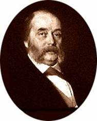

Ivan Gontcharoff
OBLOMOFF
Scènes de la vie russe
Première
publication 1859
Traduction de Piotre Artamoff
revue, corrigée et augmentée d’une étude
sur l’auteur par Charles Deulin
Édition Librairie Didier et Cie Paris 1877
Publication du groupe « Ebooks libres et gratuits » – http://www.ebooksgratuits.com/
Table des matières
À propos de cette édition électronique
Sous l’influence des théories d’Hegel, des romans de Balzac et de George Sand, de Dickens et de Thackeray, il se forma vers 1840 dans la littérature russe une école qui prit le nom d’École naturelle. Le célèbre critique Biélinsky était alors l’arbitre souverain du goût et le dispensateur de la renommée.
Il formula les principes de la nouvelle doctrine dans une œuvre importante, les Annales de la Patrie, et la rattacha à Gogol, dont les dernières productions inclinaient vers le réalisme. Selon Biélinsky, l’art ne pouvait être que la représentation fidèle de la vie, l’art devait avoir pour objet principal l’étude du peuple.
De jeunes talents, Tourguéneff, Gontcharoff, Pisemsky, Dostoievsky, ne tardèrent pas à s’enrôler sous sa bannière, et bientôt, grâce à eux, le naturalisme succéda, sans jeter moins d’éclat, au romantisme de Pouchkine et de Lermontoff.
Tourguéneff, le chef de cette pléiade, a conquis en France une grande et légitime réputation. L’auteur de Roudine et des Mémoires d’un chasseur, qui vit la plupart du temps au milieu de nous, est aujourd’hui presque des nôtres : ses nouvelles et ses romans ne sont pas moins goûtés à Paris qu’à Saint-Pétersbourg.
Chose curieuse, celui de ses rivaux qui le suit de plus près, Gontcharoff, est presque inconnu en France. Ses livres ont pourtant obtenu des succès retentissants, et il faut toute notre insouciance des manifestations de la pensée chez les nations voisines pour que ce grand bruit n’ait eu chez nous qu’un si faible écho.
Dans sa remarquable Histoire de la littérature contemporaine en Russie, M. C. Courrière, qui nous a fourni quelques-uns des éléments de cette brève étude, ne craint pas de déclarer « qu’au point de vue du style et du dessin l’auteur d’Oblomoff est un talent de premier ordre. »
Ivan Gontcharoff est né en 1812 à Simbirsk de parents marchands. Il partit jeune pour Saint-Pétersbourg, où il a passé sa vie presque entière. Tout en exerçant les fonctions de précepteur, il suivit les cours de l’université ; il entra plus tard au service de l’État et y resta longtemps.
Ajoutons, pour acheter sa courte biographie, qu’il a fait autour du monde, sur la frégate la Pallas, un voyage qu’il a raconté en un style excellent où la nature est décrite avec une rare magnificence.
Il avait trente-quatre ans lorsque vers 1846 il aborda la littérature. Dans son premier roman, intitulé Une histoire ordinaire, il mit en scène un rêveur qui, en regrettant sa jeunesse perdue, vit dans les nuages et se repaît de chimères. Il y dépeignit la profonde langueur, intellectuelle et morale, où le règne de Nicolas avait plongé la Russie.
On se ferait difficilement une idée de ce que souffrait alors cette grande nation. Tandis que le peuple chantait sa tristesse dans des chants mélancoliques, la pensée des écrivains était étouffée sous le bâillon du silence, ou rampait sous le joug du despotisme.
« Quand on regardait autour de soi, dit Tourguéneff dans ses Souvenirs de Biélinsky, on voyait la vénalité en pleine vogue, le servage peser sur le peuple comme un rocher, les casernes se dresser partout ; il n’y avait pas de justice, on parlait de fermer les universités, les voyages à l’étranger étaient impossibles, on ne pouvait faire venir un livre sérieux ; un sombre nuage pesait sur ce qu’on appelait alors l’administration des lettres et des sciences, la dénonciation se glissait partout ; entre les jeunes gens il n’y avait ni lien commun ni intérêts généraux ; c’était partout la peur et l’adulation. »
La main sur le pouls du malade, Gontcharoff raconta, calme et impassible, les souffrances de la société. Il ne prit pas la peine de rechercher les sources du mal : chacun les connaissait trop bien. Son livre fit événement : ce fut à la fois une vengeance et un triomphe.
L’écrivain garda ensuite le silence durant douze ans. On disait vaguement que, par une note secrète, la censure impériale lui avait prescrit d’observer désormais plus de circonspection. Il reparut enfin avec Oblomoff, une nouvelle étude aussi cruellement vraie et tracée d’une main plus ferme encore.
Dans Une histoire ordinaire il avait montré comment s’était opérée la désorganisation sociale, dans Oblomoff il peignait la société telle que l’avait faite le règne précédent. Adonieff, le héros d’Une histoire ordinaire, est un moribond qui lutte contre l’agonie. Oblomoff est un mort qu’on galvanise. Sans caractère, sans énergie, sans initiative, il nous représente le produit extrême d’un despotisme qui a fait son temps.
La figure d’Oblomoff est complétée par celle de son domestique-serf Zakhare. Ce dernier appartient à deux époques : de la première il a retenu un dévouement sans bornes pour la famille des Oblomoff, la deuxième a raffiné ses mœurs et élargi sa conscience.
Il adore son maître et le calomnie ; il lui prêche l’économie et s’enivre à ses dépens. Il est avec lui familier, bourru, grossier, mais il l’aime comme un chien aime son chenil. Rien de plus franchement comique ni qui ait une saveur plus étrange que les dialogues entre Oblomoff et ce Scapin sauvage.
En face de son héros, Gontcharoff a mis un personnage qui doit à son éducation plus encore qu’à son origine un caractère diamétralement opposé. Autant Oblomoff est lent et apathique, autant Stoltz est vif et remuant. Il entreprend de guérir son ami de sa paresse, mais il n’en peut venir à bout.
Une jeune fille se charge alors de cette cure difficile. C’est une belle figure que celle d’Olga, si belle qu’on serait tenté de la croire au-dessus de l’humanité.
Encouragée par Stoltz, Olga réussit à vaincre pour quelque temps la nonchalance d’Oblomoff ; elle l’aima, ou plutôt elle aima en lui l’œuvre qu’elle crut avoir accomplie. Oblomoff se laissa diriger, et les choses allèrent à merveille tant que leur liaison se borna à des promenades et à des lectures en commun.
Mais quand il s’agit de mariage et qu’il fallut entrer dans la vie pratique, il recula. Il se sentit, incapable de faire le bonheur d’Olga et avoua loyalement son impuissance. Olga épousa Stoltz et Oblomoff s’enfonça de plus en plus dans son apathie.
Le succès d’Oblomoff dépassa encore celui d’Une histoire ordinaire. On trouva que l’auteur n’avait pas décrit seulement un état transitoire.
Le livre est resté comme le document le plus exact sur le caractère de la nation, – lequel tient au climat et aux mœurs tout autant qu’aux institutions, – et le mot d’Oblomovisme est entré dans la langue pour désigner la paresse rêveuse et indécise, particulière au tempérament russe.
Gontcharoff put préparer à loisir une troisième œuvre, – la dernière, sauf un long article de critique littéraire, qu’il ait produite jusqu’à ce jour.
Lorsqu’en 1861 l’empereur Alexandre II rendit la liberté à vingt-quatre millions de serfs, ce grand acte d’humanité fut suivi d’une foule de mesures libérales, judiciaires et administratives qui donnèrent un nouvel essor à la littérature.
Les questions se multiplièrent aussi bien que les sujets et les types. Le roman s’occupa d’une théorie nouvelle qui venait de se faire jour : le Nihilisme. Que signifiait ce mot et d’où venait cette doctrine ?
« Les Nihilistes, dit M. Courrière, rejetaient toute autorité en morale, en religion, en politique, dans les lettres et les sciences, comme dans les arts. La poésie, l’amour, le sentiment, la nature elle-même n’étaient pour eux que de vains mots. Ils regardaient le mariage comme une institution absurde, et n’admettaient que l’attraction brutale et matérielle entre les deux sexes.
« Cette doctrine n’est pas née en 1861 : elle couvait déjà depuis longtemps. L’oppression de la pensée qui avait caractérisé le règne de Nicolas, le despotisme de son administration, les écrits des comités secrets de Londres, les révélations étranges qui s’étaient faites après la guerre de Crimée, les rêves brisés des libéraux de 1825 et les théories des socialistes de 1840, – tout cela avait contribué à l’élaboration du nihilisme. »
La nouvelle théorie fit surtout des prosélytes parmi la jeunesse des universités, que séduisaient de préférence les tendances négatives de la littérature. Tourguéneff étudia cet état de la société dans Pères et Enfants et Fumée, deux romans dont le premier déchaîna une véritable tempête. On alla jusqu’à accuser l’auteur d’avoir écrit un pamphlet contre son pays.
Il s’était placé, en effet, au point de vue pessimiste et n’avait vu dans les jeunes progressistes que des fous, des sots et des Dons Quichottes. Peut-être s’exagéra-t-il la portée de ces théories trop monstrueuses pour être jamais prises au sérieux.
Gontcharoff voulut aussi dire sa pensée sur la génération nouvelle, et, dans le Précipice, il recommença le parallèle entre les pères et les enfants. Il enchérit encore sur Tourguéneff et, plus partial, il fut aussi moins heureux dans la peinture du type principal. Il réussit mieux les figures accessoires, et là, dégagé de tout parti pris, il dessina des portraits d’une finesse exquise et d’une rare perfection.
C’est dans Oblomoff que brille surtout le talent de Gontcharoff, c’est là qu’il a mis la plus grande partie de lui-même, car il est resté célibataire comme son héros, et son tempérament, comme celui d’Oblomoff, le porte à la solitude et à la rêverie.
Voilà pourquoi nous avons choisi ce roman afin de présenter l’éminent écrivain au public français. Notre intention était d’abord de donner l’œuvre entière, mais elle comprend deux volumes et nous avons craint que le morceau ne fût un peu gros pour l’appétit de nos lecteurs.
Il y a dans le génie russe un côté allemand dont Gontcharoff a sa bonne part. Peintre admirable, il multiplie volontiers les tableaux ; par l’accumulation des petits détails il arrive, comme Balzac, à une extraordinaire intensité d’impression ; mais aussi il s’attarde dans l’analyse et ne vise guère à l’action.
Cette tendance de son esprit se marque surtout dans la seconde partie du roman, celle où le héros s’efforce d’agir. C’est quand un homme se met à marcher qu’on s’aperçoit de sa lenteur.
Le premier volume forme un tout complet et pourrait s’intituler : Une journée de M. Oblomoff. Il offre cette particularité originale que le héros y reste tout le temps en toilette de nuit dans sa chambre à coucher, allant de son lit à son sofa, et réciproquement.
Il s’éveille à huit heures du matin et s’habille à quatre heures du soir, au moment où Stoltz arrive. Cependant défilent devant lui, peints de main de maître, quelques-uns des types les plus saillants de la société pétersbourgeoise.
Cette curieuse revue est interrompue par un morceau superbe qui, sous ce titre : le Songe d’Oblomoff, est célèbre dans la littérature russe et qu’on fait étudier dans les collèges comme modèle de style.
Ce songe nous transporte dans la partie méridionale de la Grande-Russie, dans le gouvernement de Soubirsk, patrie de l’auteur. Avec l’enfance d’Oblomoff, il retrace la vie des petits seigneurs de campagne en des pages d’une grandeur et d’une simplicité antiques.
Çà et là éclatent des traits dont la précision pittoresque fait penser à Gustave Flaubert. Ce morceau avait paru dans une revue longtemps avant l’ouvrage. Gontcharoff a ce point commun avec Flaubert et les grands écrivains du XVIIe siècle, qu’il passe des années entières à parfaire ses œuvres.
C’est la première partie d’Oblomoff, la meilleure, que nous publions, et nous l’offrons aux délicats, à ceux qui trouvent plus d’intérêt dans l’étude des mœurs et des caractères que dans la combinaison des événements.
Après avoir présenté l’auteur et ses livres, il me reste à parler de notre traduction. Elle a son histoire que je demande la permission de conter en quelques mots.
Il y a dix-huit ans, comme j’arrivais à Paris, je fis dans la société russe la connaissance de Piotre Artamoff, le spirituel auteur de l’Histoire d’un bouton, cet humoristique pamphlet qui a peint le formalisme allemand sous des couleurs si grotesques.
Il me proposa de l’aider à traduire Oblomoff, qui venait de paraître et dont la lecture passionnait le monde russe. J’acceptai, n’ayant alors rien à faire de plus pressé.
Nous nous assurâmes de l’autorisation de Gontcharoff et il fut convenu que mon collaborateur me fournirait un mot à mot très-exact que je mettrais ensuite en français.
Je devrais dire : nous mettrions, car la vérité est que cette traduction n’appartient pas entièrement à ses deux signataires, et qu’elle est l’œuvre collective des membres les plus lettrés de la colonie russe qui se trouvait à Paris durant l’hiver de 1860.
Tous les soirs nous nous rendions, mon collaborateur et moi, chez M. X. de Gerebtzoff, conseiller d’État actuel, homme d’infiniment d’esprit, qui a publié en français un livre très-remarqué sur l’histoire de la civilisation en Russie.
Là venaient beaucoup de Russes de distinction, et notre travail de la journée était épluché avec un soin tel qu’il nous arrivait quelquefois de passer une heure à chercher la meilleure manière de rendre telle ou telle phrase.
Grands admirateurs de Gontcharoff, ses compatriotes voulaient que la traduction d’Oblomoff fût aussi parfaite que possible. Ils tenaient surtout à ce qu’elle gardât l’accent russe, que l’auteur, de l’aveu général, possède à un degré beaucoup plus élevé que ses confrères, et j’ai tâché de les satisfaire sur ce point autant que le permet le génie de notre langue.
Je n’ose me flatter d’y avoir toujours réussi. « Traduire du russe en français n’est pas une tâche facile, a dit Prosper Mérimée, qui savait à quoi s’en tenir. Le russe est une langue faite pour la poésie, d’une richesse extraordinaire et remarquable surtout par la finesse de ses nuances. Lorsqu’une pareille langue se trouve à la disposition d’un écrivain ingénieux, qui se plaît à l’observation et à l’analyse, vous devinez le parti qu’il peut en tirer et les insurmontables difficultés qu’il prépare à son traducteur. »
Et maintenant, si on me demande pourquoi notre traduction n’a pas vu le jour plus tôt, je répondrai qu’il faut s’en prendre, ainsi que je l’ai dit en commençant, au peu de curiosité des lecteurs pour les grandes œuvres des littératures étrangères.
Durant quinze ans, notre Oblomoff s’est promené dans Paris à la recherche d’un éditeur, et il a fallu le mouvement en faveur de la Russie qui vient de se produire au théâtre et dans le roman, pour qu’il vît s’ouvrir enfin une maison hospitalière.
Dans l’intervalle mon collaborateur mourut, et voilà comment, bien que je n’aie abordé la littérature russe qu’incidemment et par occasion, je me trouve aujourd’hui présenter au public français un des écrivains les plus remarquables de la Russie contemporaine.
C. D.
M. Élie Oblomoff demeurait, rue Gorokhovaya[1], dans une de ces grandes maisons dont les locataires suffiraient à peupler une ville de district. C’était le matin, et M. Élie Oblomoff était au lit, dans son appartement.
M. Oblomoff pouvait avoir de trente-deux à trente-trois ans : il était de taille moyenne et d’un extérieur agréable ; il avait les yeux gris foncé, mais ses traits accusaient l’absence de toute idée profonde et arrêtée.
La pensée, comme un oiseau, se promenait librement sur son visage, voltigeait dans ses yeux, se posait sur ses lèvres à demi ouvertes et se cachait dans les plis de son front, pour disparaître ensuite tout à fait ; alors, sur toute la physionomie s’étendait une teinte uniforme d’insouciance. L’insouciance se répandait de là dans les poses du corps et jusque dans les plis de la robe de chambre.
Quelquefois le regard devenait terne et exprimait la fatigue ou l’ennui ; mais ni la fatigue ni l’ennui ne pouvaient, même pour un instant, altérer la douceur de la physionomie, tant cette douceur, qui était l’expression habituelle, non-seulement du visage, mais de l’âme, se peignait clairement dans les regards, le sourire et dans chaque mouvement de la tête et de la main.
Un observateur froid et superficiel qui eût jeté un coup d’œil en passant sur Oblomoff, aurait dit : « Ce doit être un bon enfant, un homme qui a le cœur sur la main. » Mais un philosophe doué d’un cœur plus chaud et d’une intelligence plus vive, après avoir longtemps regardé Élie, aurait emporté de cet examen une très-agréable impression.
Le teint d’Oblomoff n’était ni rose, ni brun, ni positivement pâle, mais d’une couleur vague ; il peut se faire qu’il parût ainsi parce qu’Élie s’était affaissé avant l’âge : était-ce par suite du manque d’air ou du manque d’exercice ? peut-être de l’un et de l’autre.
À en juger par le ton trop mat et trop blême du cou, des mains menues et potelées, et par la mollesse des épaules, Oblomoff semblait, en général, beaucoup trop délicat pour un homme. Dans l’émotion même, ses mouvements étaient alanguis par une paresse qui ne manquait pas de grâce.
Si du fond de l’âme s’élevait un nuage de soucis qui l’assombrissait, son front se plissait et on y apercevait la lutte du doute, de la tristesse et de la crainte ; mais rarement cette lutte aboutissait à une idée arrêtée, et plus rarement encore se résumait dans une résolution. Elle s’évaporait en un soupir et s’évanouissait dans l’apathie et la somnolence.
Comme le costume habituel d’Élie allait bien à la placidité de sa figure et à la mollesse de son corps ! Il portait un khalate à la persane, mais un khalate véritablement oriental qui ne rappelait en rien l’Europe, sans houppe, ni velours, ni taille, – si ample qu’Oblomoff aurait pu s’en envelopper deux fois. Il serait encore resté assez d’étoffe pour l’habit de chasse d’un Parisien.
Les manches, suivant l’usage invariable de l’Asie, allaient toujours en s’élargissant des doigts à l’épaule. Quoique ce khalate eût perdu de sa première fraîcheur, et par endroits eût remplacé son éclat primitif et naturel par un lustre acquis, il gardait néanmoins les brillantes couleurs de l’Orient, et le tissu en était encore solide. Aux yeux d’Élie, son khalate possédait mille qualités inappréciables : il était souple et moelleux, ne pesait nullement au corps et se pliait comme un esclave obéissant à ses moindres mouvements.
Élie ne portait jamais à la maison ni cravate ni gilet, parce qu’il aimait à être à l’aise. Ses pantoufles étaient longues, larges et molles ; lorsque sans regarder il descendait du lit sur le plancher, ses pieds y entraient infailliblement du premier coup.
Si Oblomoff demeurait au lit, ce n’était point par nécessité, comme quand on est malade, ou qu’on tombe de fatigue et de sommeil, ni par volupté, comme ferait un paresseux : garder le lit était son état normal. Quand il restait chez lui, – et il ne sortait presque jamais – il était toujours au lit, et toujours nécessairement dans la même pièce où nous l’avons trouvé, et qui lui servait de chambre à coucher, de cabinet et de salon de réception.
Il en avait encore trois autres, mais il n’y jetait qu’un regard en passant, quelquefois le matin, quand le domestique balayait son cabinet, ce qui n’arrivait pas tous les jours. Les meubles y étaient couverts de housses, les stores baissés.
La chambre où Élie était couché semblait à première vue parfaitement ornée. On y voyait un bureau en acajou, deux sofas en damas, et un joli paravent brodé d’oiseaux et de fruits fantastiques, il y avait aussi des tentures de soie, des tapis, plusieurs tableaux, des bronzes, des porcelaines et quantité de charmants bibelots. Mais l’ensemble de ces objets avait un sens qu’un œil exercé aurait démêlé sur-le-champ.
On y lisait le désir de garder tant bien que mal le décorum sans se donner pour cela aucune peine. C’est certainement dans ce seul but qu’Élie avait arrangé son cabinet. Un goût délicat n’aurait pu s’accommoder de ces chaises d’acajou lourdes et disgracieuses, ni de ces étagères vacillantes. Le dossier d’un des sofas s’était affaissé, et l’acajou plaqué s’était décollé par places. Les tableaux, les vases et les bibelots étaient dans le même état.
Le maître lui-même promenait sur l’arrangement de son cabinet un regard morne et distrait qui semblait dire : « Qui diable m’a fourré tant de choses, là-dedans ? » Il suffisait d’un peu plus d’attention pour remarquer cet abandon et cette négligence, résultat de la froide indifférence du propriétaire, et peut-être encore plus de son domestique Zakhare. Le long des murs, autour des tableaux s’accrochaient en festons des toiles d’araignées, imprégnées de poussière.
Les miroirs, au lieu de refléter les objets, ressemblaient aux tables de Moïse : sur la poussière on aurait pu écrire des notes. Les tapis étaient pleins de taches. Un essuie-mains traînait sur un sofa et il se passait rarement un matin sans qu’on vît sur la table une assiette, une salière, un os à demi rongé et des miettes de pain, débris du souper de la veille.
Sans cette assiette et sans une pipe encore chaude, appuyée contre le lit, ou bien encore sans le maître qui y était couché, on aurait pu croire la chambre inhabitée, tant elle apparaissait couverte de poussière, pleine d’objets fanés, et vide de tout ce qui indique la présence d’un homme.
On apercevait bien sur les étagères deux ou trois livres ouverts, un journal abandonné, et même sur le bureau un encrier avec des plumes ; mais ces livres étaient souillés de poussière et jaunis par le temps ; on voyait qu’ils avaient été jetés là de longue date. Le journal était de l’année précédente et, si l’on avait trempé une plume dans l’encrier, peut-être qu’une mouche effrayée s’en serait échappée en bourdonnant.
Oblomoff, contrairement à son habitude, s’était réveillé de très-bon matin, vers les huit heures. Il était en proie à une forte préoccupation. Sa figure exprimait tour à tour de vagues sentiments de crainte, d’ennui et de colère. On devinait qu’il souffrait d’une lutte intérieure et que le raisonnement n’était pas encore venu à son secours.
Le fait est qu’Élie avait reçu la veille des nouvelles fâcheuses de son staroste[2]. On se figure bien de quelle nature sont les nouvelles fâcheuses que doit annoncer la lettre d’un staroste : il ne peut y être question que d’une mauvaise année, d’arriérés, de diminution de revenus, etc. Cependant le staroste avait déjà donné des avis pareils à son seigneur la dernière et l’avant-dernière année, mais cette fois la malencontreuse lettre avait ému Élie comme l’eût fait toute autre surprise désagréable.
Et il y avait de quoi ! Ne fallait-il pas penser à prendre des mesures ? Rendons pourtant justice à la sollicitude d’Oblomoff pour ses affaires personnelles. Au reçu de la première lettre, bien des années auparavant, il avait ébauché dans sa tête un plan de divers changements et améliorations à introduire dans la gestion de ses biens. Il se proposait d’y amener différentes innovations économiques, administratives et autres.
L’auteur était loin d’avoir médité toutes les parties de son plan, et pourtant les lettres affligeantes du staroste se répétaient chaque année, et l’obligeaient à une activité d’esprit qui troublait sa quiétude. Oblomoff reconnut qu’il était urgent, avant la fin de son œuvre, d’entreprendre quelque chose de décisif.
Aussi, dès qu’il fut réveillé, conçut-il le projet de se lever immédiatement, de se laver la figure et, après avoir pris le thé, de réfléchir profondément, d’étudier plusieurs combinaisons, de les noter et en général de s’occuper sérieusement d’affaires. Pendant une demi-heure il resta encore couché, se tourmentant de cette grande résolution. Ensuite il pensa judicieusement que tout cela pouvait se faire après le thé, que le thé, il pouvait bien, selon son habitude, le prendre au lit, et rester couché pour méditer. Ainsi fit-il.
Quand il eut pris le thé, il se souleva un peu et faillit se lever ; il jeta un coup d’œil sur ses pantoufles, et commença même à descendre un de ses pieds, mais il le retira brusquement.
La pendule sonna neuf heures et demie. Oblomoff tressaillit.
« Qu’est-ce que je fais donc ? murmura-t-il tout haut, il faut être raisonnable… il est temps de s’occuper d’affaires. Si on se laisse aller, alors… »
Il cria : Zakhare !
Dans une pièce séparée de la chambre d’Oblomoff par un petit couloir, on entendit d’abord comme le grognement d’un chien de garde, ensuite le bruit de deux pieds tombant sur le parquet. C’était Zakhare qui sautait à bas du poêle[3], où il passait toute sa journée dans une demi-somnolence.
En la chambre entra un homme déjà sur l’âge, habillé d’une veste grise, qui laissait voir la chemise sous l’aisselle, et d’un gilet gris à boutons de métal. Il avait le crâne nu comme un genou, et la face ornée de deux immenses favoris touffus, blonds, grisonnants dont chacun aurait suffi pour trois bonnes barbes.
Non-seulement Zakhare se contentait de l’image que Dieu lui avait donnée, mais il ne prenait même pas la peine de rien changer au costume qu’il avait porté à la campagne. Son habit était taillé sur un modèle apporté du village. La veste et le gilet gris lui plaisaient de plus, parce que cet habillement, presque uniforme, lui rappelait vaguement la livrée qu’il endossait jadis pour accompagner les vieux seigneurs à la messe ou dans leurs visites.
La livrée était la seule chose qui lui remît en mémoire les splendeurs de la maison des Oblomoff. Seul, cet habit retraçait aux yeux du vieux serviteur la vie seigneuriale, large et tranquille, au fond de la province. Les vieux seigneurs sont morts, les portraits de famille sont restés dans le château ; peut-être qu’ils y traînent quelque part au grenier ; les traditions de la noble famille s’effacent et ne vivent plus que dans la mémoire de quelques vieillards, qui eux aussi sont restés à la campagne. Voilà pourquoi Zakhare aimait tant son vieil habit gris.
Cet habit et certaines traces qui, dans la figure et les manières du barine[4], faisaient songer à ses ancêtres, les caprices mêmes du maître, dont Zakhare grognait tout bas et tout haut, mais qu’au fond il respectait comme la manifestation de la volonté, du droit du seigneur, étaient tout ce qui restait pour Zakhare de la grandeur passée. Sans ces caprices, il ne sentait pas le maître au-dessus de lui ; sans eux rien ne ressuscitait sa jeunesse, le village qu’ils avaient depuis longtemps quitté ensemble, et les traditions, seule chronique que gardaient sur cette antique maison les vieux serviteurs, les bonnes, les nourrices, et qu’ils se transmettaient de génération en génération.
La famille des Oblomoff avait jadis été riche et renommée dans le pays, mais ensuite, Dieu sait comment, elle s’était appauvrie, abaissée et insensiblement perdue parmi les maisons d’une noblesse moins ancienne. Seuls, les domestiques qui avaient blanchi à son service se passaient les uns aux autres la mémoire fidèle du temps qui n’était plus, et la chérissaient comme une relique.
Voilà pourquoi Zakhare aimait tant son vieil habit gris. Il se peut qu’il chérît aussi tendrement ses favoris, parce qu’il avait vu dans son enfance beaucoup d’anciens serviteurs avec ce vieil aristocratique ornement.
Oblomoff, enfoncé dans sa méditation, ne remarqua point Zakhare. Zakhare se tenait devant lui en silence ; enfin il toussa.
– Que veux-tu ? demanda Élie.
– Mais c’est vous qui m’avez appelé.
– Je l’ai appelé ? Pourquoi t’ai-je appelé ? Je l’ai oublié, dit Élie en se détirant. Va un moment chez toi, je tâcherai de me souvenir.
Zakhare sortit, et M. Oblomoff continua de rester couché et de penser à cette diable de lettre.
Un quart d’heure s’écoula.
– Allons, dit-il, assez du lit ; il faut enfin que je me lève… Cependant, si je relisais encore une fois, mais avec attention, la lettre du staroste, je pourrais ensuite me lever. Zakhare !
On entendit le même bruit de pieds, avec un grognement plus fort. Zakhare entra et Oblomoff se replongea dans sa rêverie. Zakhare attendit à peu près deux minutes, mais d’un air peu bienveillant, regardant son maître de travers ; puis il se dirigea vers la porte.
– Où vas-tu donc ? demanda brusquement Élie.
– Vous ne dites rien ; voulez-vous que je reste là pour rien ? répondit Zakhare d’une voix enrouée, car il n’en avait pas d’autre. Il prétendait avoir perdu sa voix naturelle par un coup de vent. Un jour qu’il chassait à courre en compagnie de son vieux maître, le vent s’était engouffré dans sa gorge. Il se tenait, donc au milieu de la chambre sur un demi-tour commencé, regardant toujours Oblomoff de travers.
– Est-ce que tes jambes sont paralysées, que tu ne peux rester là un moment debout ? Tu vois, j’ai des soucis ; attends donc… tu n’es pas encore las d’être couché là dedans ? Cherche-moi la lettre que j’ai reçue hier du staroste. Qu’en as-tu fait ?
– Quelle lettre ? Je n’ai pas vu de lettre, dit Zakhare.
– Mais c’est à toi que le facteur la remise. Tu sais, cette lettre si sale.
– Où l’avez-vous fourrée ? Qu’en sais-je, moi ! dit Zakhare, en tâtant les papiers et les autres objets étalés sur la table.
– Tu ne sais jamais rien. Regarde là, dans la corbeille. Ou est-ce qu’elle ne serait pas tombée derrière le sofa ?… Et voilà ce dossier qui n’est pas encore réparé ! Que ne vas-tu chercher le menuisier ? C’est toi-même qui l’as cassé. Tu ne penses à rien !
– Je ne l’ai point cassé, répondit Zakhare, il s’est cassé tout seul. Il ne pouvait durer toujours. Il fallait bien qu’il se cassât une fois.
Élie ne crut pas utile de lui prouver le contraire.
– L’as-tu trouvée enfin ? demanda-t-il.
– En voici des lettres…
– Ce n’est pas cela.
– Ma foi ! il n’y en a pas d’autres, grogna Zakhare.
– C’est bien ! va-t’en, dit Élie avec impatience ; je vais me lever et je la trouverai bien moi-même.
Zakhare rentra dans son cabinet ; mais à peine avait-il appuyé ses mains pour sauter sur le poêle, qu’il entendit crier vivement :
– Zakhare ! Zakhare !
– Seigneur Dieu ! aboya Zakhare, en se dirigeant encore une fois vers la chambre ; quelle existence ! J’aimerais mieux mourir !
– Qu’est-ce qu’il vous faut ? dit-il, en tenant la porte de la chambre, et en dirigeant sur Oblomoff, en signe de mécontentement, un regard si oblique qu’il ne l’apercevait plus que de la moitié de son œil, et que le maître ne saisissait de sa personne que l’incommensurable favori d’où l’on s’attendait à voir, comme d’un buisson, s’envoler tout à coup deux ou trois oiseaux.
– Mon mouchoir de poche, vite ! Tu aurais dû deviner toi-même… Tu ne vois rien, remarqua sévèrement Élie.
Zakhare ne manifesta ni déplaisir, ni étonnement particulier à cet ordre et à ce reproche. Il trouvait probablement l’un et l’autre très-naturels.
– Qui sait où est le mouchoir de poche ? croassa-t-il en faisant le tour de la chambre et en tâtant chaque chaise, bien qu’il fût visible qu’il n’y avait rien dessus.
– Vous perdez tout, continua-t-il, en ouvrant la porte du salon pour regarder si le mouchoir n’y était pas.
– Où vas-tu ? Cherche ici : je n’ai pas mis les pieds là-dedans depuis avant-hier. Dépêche-toi donc.
– Où est le mouchoir ? Il n’y a pas de mouchoir ! disait Zakhare en gesticulant des bras et en promenant son œil dans tous les recoins. Mais le voici ! grogna-t-il d’un air fâché, il est sous vous, en voici un bout. Vous êtes couché dessus et vous me le demandez !
Et sans attendre de réponse, il se dirigea vers la porte. Oblomoff était un peu confus de sa maladresse. Il trouva aussitôt un autre moyen de prendre Zakhare en faute.
– Comme il fait propre ici ! Dieu de Dieu ! que de poussière, que d’ordure ! Là… là, regarde dans les coins, fainéant !
– Fainéant ! moi !… reprit Zakhare d’un air offensé… mais je m’échine, je m’échine sans ménager ma vie ! J’époussète partout et je balaye presque tous les jours.
Il montra le milieu du parquet et la table où dînait Élie.
– Tenez, tenez, tout est balayé, rangé, comme pour une noce… Que voulez-vous de plus ?
– Et ceci, qu’est-ce ? et Oblomoff indiquait les murs et le plafond, et ceci, et cela ? Et il désignait du doigt l’essuie-mains jeté la veille et l’assiette oubliée sur la table avec le morceau de pain.
– Ah ! ceci, ah bien ! je veux bien l’enlever, dit Zakhare d’un ton de condescendance, en prenant l’assiette.
– Rien que cela ! et la poussière des murs et les toiles d’araignée ? fit Élie en montrant les murs.
– Ça ? Je le fais à Pâques : alors je nettoie les images[5] et j’enlève les toiles d’araignée…
– Et les livres, et les tableaux… pourquoi ne les fais-tu pas !
– Les livres et les tableaux… à Noël : alors Anissia et moi nous mettons en ordre toutes les armoires. Quand voulez-vous que je puisse ranger ? Vous êtes cloué toute la journée à la maison !
– Mais je vais quelquefois au théâtre ou en soirée. Est-ce que…
– Est-ce qu’on peut faire quelque chose la nuit ?
Oblomoff lui jeta un coup d’œil où se lisait un reproche, branla la tête et soupira ; Zakhare, de son côté, regarda par la croisée d’un air indifférent et soupira aussi. Le barine semblait se dire : « Ah, mon ami, tu es encore plus Oblomoff[6] que moi. » Et Zakhare probablement se disait : « Allons donc ! tu n’es bon qu’à faire des phrases, des phrases assommantes, et quant à la poussière et aux toiles d’araignée, tu t’en moques pas mal. »
– Comprends-tu, dit Élie, que la poussière engendre des mites ? Il m’arrive même de voir quelquefois sur les murs une punaise.
– Mieux que ça, j’ai des puces, moi, répliqua froidement Zakhare.
– Et tu crois que c’est bien ? mais c’est de la malpropreté.
Zakhare sourit de toute la largeur de sa face. Ce sourire atteignit ses sourcils et ses favoris ; ils s’écartèrent et firent place à une grande tache rouge qui s’étendit jusqu’au front.
– Est-ce ma faute s’il existe des punaises ? dit-il avec un étonnement naïf ; est-ce moi qui les ai inventées ?
– C’est le résultat de la malpropreté, interrompit Oblomoff. Pourquoi dis-tu toujours des sottises ?
– Je n’ai pas non plus inventé la malpropreté.
– Est-ce que là-bas, chez toi, les souris ne trottent pas toute la nuit ? Je les entends.
– Et les souris non plus, je ne les ai pas inventées. Elles abondent partout, ces petites bêtes : les souris, les chats, les punaises.
– Comment se fait-il que chez les autres on ne voie ni mites ni punaises ?
La figure de Zakhare exprima l’incrédulité, ou plutôt la profonde conviction que la chose était impossible.
– J’ai de tout cela, insista-t-il avec opiniâtreté. On ne peut pas surveiller chaque punaise, ni se fourrer chez elle, dans sa fente.
Et il avait l’air de penser : « Peut-on faire un bon somme sans une punaise ? »
– Balaye, ôte les ordures des coins, et il n’y aura rien de tout cela, dit sentencieusement Élie.
– Que je balaye ! mais demain il s’en accumulera encore, dit Zakhare.
– Il ne s’en accumulera pas, interrompit le barine ; c’est impossible.
– Il s’en accumulera. Je le sais, insista le domestique.
– Eh bien ! s’il s’en accumule, tu balayeras encore.
– Quoi ! refaire chaque coin tous les jours ? Quelle existence ! Mieux vaut mourir !
– Mais alors pourquoi est-ce si propre chez les autres ? demanda Oblomoff. Regarde donc chez l’accordeur d’en face : cela fait plaisir à voir… et ils n’ont qu’une servante !
– Chez eux, chez ces Allemands ! Mais d’où diable voulez-vous qu’il leur vienne des ordures ? répondit vivement Zakhare, Voyez donc la vie qu’ils mènent ! Toute la famille, pendant huit jours, est après le même os. L’habit passe et repasse du père au fils, et du fils au père. La mère et les filles ont de mauvaises petites robes ; elles sont toujours à ramasser leurs pieds sous elles comme des oies… D’où diable voulez-vous qu’elles prennent des ordures ? Ces gens-là n’ont pas, comme nous, des armoires pleines de vieilles hardes, qui y restent des années. Comment voulez-vous que, durant un hiver, il s’accumule chez eux tout un coin de croûtes de pain. Chez eux ! Il ne s’y perd pas un croûton ! Ils en font des biscotes, et puis ils les avalent avec de la bière.
Et Zakhare cracha entre ses dents rien qu’à l’idée d’une existence aussi sordide.
– Allons, pas tant de conversations, dit Élie ; tu ne fais que raisonner… range plutôt.
– Je rangerais bien quelquefois, mais c’est vous qui m’en empêchez.
– Bon, te voilà encore. C’est toujours moi qui t’empêche.
– Mais sans doute, vous restez tout le temps chez vous ; comment voulez-vous qu’on fasse la chambre quand vous y êtes ? Sortez pour toute la journée et on rangera.
– Voilà encore de tes idées ! Que je sorte ! Va-t’en chez toi, cela vaudra beaucoup mieux.
– Mais je vous assure que c’est ainsi, insistait Zakhare. Tenez, sortez aujourd’hui, et je rangerai tout ici avec Anissia. Et encore, à nous deux, nous n’en viendrons pas à bout : il faut prendre des journalières et laver partout.
– En voilà des inventions ! des journalières ! Fais-moi le plaisir de t’en aller.
Oblomoff était déjà fâché d’avoir provoqué cette conversation avec Zakhare. Il oubliait toujours qu’en touchant à cette question délicate, il était sûr de s’attirer des tracasseries interminables. Il désirait bien que tout fut en ordre chez lui, mais il souhaitait en même temps que cela se fit d’une manière quelconque, insensiblement, de soi-même. Zakhare entamait toujours un procès aussitôt qu’on exigeait de lui l’époussetage, le lavage des planchers, etc. Il prouvait alors la nécessité d’un remue-ménage épouvantable ; il savait parfaitement que cette idée suffisait à jeter la terreur dans l’âme de son maître.
Zakhare sortit, et Élie s’enfonça dans ses réflexions. Quelques minutes après, la pendule sonna la demie.
– Ah ! mon Dieu, s’écria-t-il avec effroi, bientôt onze heures, et je ne suis pas encore levé, pas encore lavé. Zakhare, Zakhare !
– Seigneur Dieu, encore ! et l’on entendit le grognement et le bruit des deux pieds.
– L’eau est-elle prête ?
– Il y a longtemps. Pourquoi ne vous levez-vous point ?
– Que ne me dis-tu que c’est prêt ? Je me serais levé depuis longtemps. J’ai à travailler, je vais écrire.
Zakhare s’éloigna quelques instants et revint avec un cahier graisseux et quelques chiffons de papier.
– Tenez, puisque vous allez écrire, vous ferez bien de régler aussi nos comptes : il est temps de donner de l’argent.
– Quels comptes ? Quel argent ? demanda Oblomoff d’un air consterné.
– Mais le boucher, le fruitier, la blanchisseuse, le boulanger… ils veulent de l’argent.
– Ça ne pense qu’à l’argent, murmura Élie ; et toi, pourquoi ne me présentes-tu pas les notes une à une ? Pourquoi toutes à la fois ?…
– Mais vous me mettez toujours à la porte… demain… demain…
– Eh bien ! pourquoi ne pas remettre cela à demain ?
– Impossible, ils insistent trop et ne veulent plus faire crédit. C’est aujourd’hui le premier.
– Ah ! dit Oblomoff d’un air chagrin : encore des soucis ! Eh bien ! que fais-tu là ? place-les sur la table. Je vais me lever tout à l’heure, me laver et je verrai. L’eau est-elle prête ?
– Elle est prête, dit Zakhare.
– Alors…
Et tout en geignant il fit un mouvement pour se lever.
– J’ai oublié de vous dire, reprit Zakhare, que tantôt, lorsque vous dormiez encore, l’intendant a envoyé ici le portier, qui a dit qu’il fallait absolument déménager… qu’on avait besoin de l’appartement.
– Eh bien ! qu’est-ce que cela fait ? Si on en a besoin, certainement nous déménagerons. Pourquoi m’ennuies-tu ? Voilà la troisième fois que tu me le dis.
– Mais c’est qu’on m’ennuie aussi, moi.
– Alors, réponds qu’on déménagera.
– Mais ils disent : voilà un mois que vous nous promettez, qu’ils disent, et vous restez encore là. Nous nous adresserons, qu’ils disent, à la police.
– Eh bien ! ils n’ont qu’à le faire, répondit Élie d’un air décidé. Nous déménagerons bien nous-mêmes dès qu’il fera un peu plus chaud, quelque chose comme dans trois semaines.
– Comment ! dans trois semaines ! L’intendant prévient que les ouvriers vont venir ici dans quinze jours, qu’ils doivent tout démolir… Déménagez, qu’il dit, demain ou après-demain.
– Hé, hé, hé ! comme ils y vont ! demain ! Qu’est-ce qu’ils chantent donc ! Vraiment oui, ne faudra-t-il pas par hasard que nous déménagions tout à l’heure ? Je te défends de me parler de logement. Je te l’ai déjà défendu une fois, et tu recommences… Prends garde !
– Et qu’y puis-je, moi ? reprit Zakhare.
– Qu’y puis-je ? Belle raison, ma foi ! répondit Oblomoff. Et il ose encore me le demander ! Est-ce que cela me regarde ? Laisse-moi tranquille, ne m’importune plus, et arrange-toi comme tu l’entendras, pourvu que nous ne bougions pas d’ici. Tu ne peux donc rien faire pour ton barine ?
– Mais comment, monseigneur ? Comment voulez-vous que je m’arrange ? miaula Zakhare en adoucissant sa voix enrouée. La maison ne m’appartient pas. Comment faire pour rester dans une propriété qui n’est pas à nous, quand on nous en chasse ? Si la maison était à moi, alors, c’est avec le plus grand plaisir.
– Mais ne pourrais-tu pas les persuader de manière ou d’autre, leur dire : nous logeons ici depuis longtemps, nous payons exactement ?
– Mais je l’ai dit.
– Eh bien ! et eux…
– Ils chantent toujours le même air : « Déménagez, qu’ils disent, nous avons besoin de transformer l’appartement. » Ils veulent en faire un seul de celui du docteur et du nôtre, pour le mariage du fils de la maison.
– Ah ! bon Dieu ! fit avec humeur Oblomoff, dire qu’il se trouve encore des ânes qui se marient !
Il s’étendit sur le dos.
– Vous devriez, monsieur, écrire au propriétaire, fit observer Zakhare ; peut-être vous laisserait-il tranquille et commencerait-il par démolir l’autre appartement.
Et il désigna de la main quelque part, à droite.
– Ah ! c’est bon, dès que je serai levé, j’écrirai… Va chez toi ; j’y réfléchirai. Toi, tu ne sais rien faire, et je suis forcé de m’occuper moi-même d’une pareille vétille.
Zakhare sortit et Élie commença à réfléchir.
Mais il se trouva dans une étrange perplexité : à quoi fallait-il réfléchir ? Fallait-il penser à la lettre du staroste ou au déménagement, ou enfin fallait-il régler les comptes ? Il se perdait dans ce flux de soucis terrestres et restait toujours couché : il se tournait tantôt d’un côté, tantôt de l’autre. Seulement de temps en temps on pouvait entendre des exclamations entrecoupées : « Ah bon Dieu ! qu’il est difficile de vivre en ce monde ! etc. »
On ne saurait préciser combien de temps il aurait passé dans cet état d’indécision, si la sonnette de l’antichambre n’avait retenti.
– Ah ! voilà déjà quelqu’un, dit Oblomoff en s’enveloppant dans son khalate, et je ne suis pas encore levé… Quelle honte ! Mais qui peut venir à une heure aussi matinale ?
Et, étendu dans son lit, il regardait la porte avec curiosité.
Entra un jeune homme d’environ vingt-cinq ans, d’une santé resplendissante, avec des joues, des lèvres et des yeux riants à vous faire envie.
Il était irréprochable dans sa toilette comme dans sa coiffure ; il éblouissait par la fraîcheur du visage, du linge, des gants et de l’habit. Sur le gilet s’étalait une chaînette artistement travaillée, avec une quantité de breloques microscopiques.
Il tira de sa poche un mouchoir de la plus fine batiste. Après y avoir aspiré les parfums de l’Orient, il le passa négligemment sur son visage, sur son chapeau lustré, et en épousseta ses bottes vernies.
– Ah ! Volkoff, bonjour ! dit Élie.
– Bonjour, Oblomoff, dit le monsieur éblouissant, et il s’approcha.
– N’approchez pas, n’approchez pas : vous venez du froid !
– Ô enfant gâté, sybarite ! dit Volkoff. Il chercha où déposer son chapeau et, voyant partout de la poussière, il ne le posa nulle part ; il écarta les deux pans de son habit pour s’asseoir, mais, après un examen attentif du fauteuil, il resta debout.
– Vous n’êtes pas encore levé. Quelle robe de chambre avez-vous donc là ? Il y a longtemps qu’on n’en porte plus de pareilles, dit-il à Oblomoff d’un ton de reproche.
– Ce n’est point une robe de chambre, mais un khalate, lit Élie, en s’enveloppant avec volupté dans les larges pans du khalate.
– Votre santé est bonne ? demanda Volkoff.
– Ma santé ! dit Oblomoff en bâillant : mauvaise ! les congestions me tourmentent. Et vous, comment allez-vous ?
– Moi ! comme cela : bien portant et gai, oh ! très-gai ! ajouta le jeune homme avec conviction.
– D’où venez-vous de si bonne heure ? demanda Oblomoff.
– De chez mon tailleur. Trouvez-vous que cet habit m’aille bien ? dit-il en se tournant devant Élie.
– Très-distingué ! il est du meilleur goût, fit Élie ; seulement, pourquoi est-il si large par derrière ?
– C’est un habit de chasse, pour monter à cheval.
– Ah ! vraiment ! vous montez donc ?
– Mais certainement ! j’ai commandé l’habit tout exprès pour aujourd’hui ; car c’est le premier mai ; nous allons, Goriounoff et moi, à Ekaterinnhoff[7]. À propos, vous ne savez pas ? Goriounoff Micha[8] vient d’avoir de l’avancement, c’est pourquoi nous nous émancipons aujourd’hui, ajouta Volkoff d’un air enchanté.
– Ah ! fit Oblomoff.
– Il a un alezan, continua Volkoff ; ils ont des alezans au régiment ; moi, j’ai un moreau. Et vous, comment serez-vous ? à pied ou en équipage ?
– Moi… je n’y serai pas…
– Le premier mai ! manquer de paraître à Ekaterinnhoff ! Y pensez-vous, monsieur Élie ? dit Volkoff avec étonnement, mais tout le monde y sera !
– Ah ! comment ? tout le monde ! Non, pas tout le monde ! dit paresseusement Oblomoff.
– Venez-y, mon bon petit monsieur Élie ! Mesdemoiselles Sophie et Lydie seront toutes seules dans leur équipage. Il y a une banquette de face ; Vous pouvez très-bien…
– Non, je n’aurai pas assez de place sur une banquette, dit Oblomoff : et qu’est-ce que j’y ferais ?
– Eh bien ! si vous voulez, Micha vous prêtera un cheval.
– Dieu sait ce qu’il n’invente pas ! dit Élie dans un quasi-aparté. Pourquoi diable vous affublez-vous de ces Goriounoff ?
– Ah ! fit Volkoff en rougissant, faut-il le dire ?
– Dites.
– Vous ne le répéterez à personne, parole d’honneur ? continua Volkoff, en s’asseyant près de lui sur le sofa.
– Soit.
– Je… suis amoureux de Lydie, lui dit-il à l’oreille.
– Bravo ! depuis quand ? Il paraît qu’elle est bien gentille.
– Voilà déjà trois semaines, fit Volkoff avec un profond soupir. Et le petit Micha est amoureux de Dacha[9].
– De quelle Dacha ?
– Mais d’où sortez-vous, Oblomoff ? Vous ne connaissez pas Dacha ? Toute la ville en raffole. Et comme elle danse ! Aujourd’hui, nous allons, Micha et moi, au ballet ; il va lui jeter un bouquet. Nous voulons l’introduire chez ces dames : il est timide… C’est un novice… Ah ! il ne faut pas que j’oublie d’aller lui chercher des camélias…
– Encore ! mais laissez donc, venez plutôt dîner ! Nous causerons. Il m’arrive deux malheurs…
– Je ne puis : je dîne chez le prince Tuméneff ; on y verra tous les Goriounoff, et elle, elle !… la petite Lydie, ajouta-t-il à l’oreille. Pourquoi donc négligez-vous le prince ? Quelle maison amusante ! Et sur quel pied elle est tenue ! Et la villa ? inondée de fleurs ! On y a ajouté une galerie… gothique ! On dit qu’en été on y dansera, on fera des tableaux vivants. Vous y viendrez quelquefois ?
– Non, je crois que je n’irai pas.
– Ah ! quelle maison ! Cet hiver, les mercredis, il n’y avait jamais moins de cinquante personnes, et quelquefois il en venait jusqu’à cent…
– Dieu de Dieu ! quel infernal ennui ça devait faire !
– Que dites-vous ? De l’ennui ! Mais plus on est de fous, plus on rit. Lydie y est allée quelquefois, je ne la remarquais jamais, mais tout à coup…
En vain de l’oublier je m’impose la peine,
Et veux que la raison brise ma douce chaîne…
En chantant ces vers, il s’oublia jusqu’à s’asseoir dans le fauteuil, mais il bondit soudain, il se leva et se mit en devoir d’épousseter son habit.
– Que de poussière vous avez là ? dit-il.
– C’est toujours Zakhare ! fit Oblomoff d’une voix dolente.
– Ah bien ! il est temps… dit Volkoff, pour les camélias du bouquet de Micha. Au revoir.
– Venez prendre le thé après le ballet ; vous me raconterez comment tout se sera passé là-bas.
– Je ne puis, j’ai promis aux Moussinnsky : c’est aujourd’hui leur jour. Venez-y aussi. Voulez-vous que je vous présente ?
– Non. Qu’irais-je y faire ?
– Chez les Moussinnsky ? Mais la moitié de la ville y passe, s’il vous plait. Comment ! qu’irais-je y faire ? c’est une maison où l’on parle de tout…
– C’est justement là l’ennui, qu’on y parle de tout, dit Élie.
– Eh bien ! fréquentez les Mezdroff, interrompit Volkoff : là, on ne parle que d’une seule chose, des arts ; on n’y entend que : école vénitienne, Beethoven et Bach, Léonardo-da-Vinci…
– Toujours un seul et même sujet ; quel ennui ! Des pédants, sans doute ! dit Oblomoff en bâillant.
– Impossible de vous contenter. Eh ! est-ce qu’il manque des maisons ? Maintenant tout le monde a son jour : chez les Savinoff on dîne les jeudis, chez les Maklachine les vendredis, chez Viaznikoff les dimanches, chez le prince Tuméneff les mercredis ; tous mes jours sont pris, conclut Volkoff les yeux rayonnants.
– Et vous ne vous lassez pas d’être ainsi en l’air tous les jours que Dieu fait ?
– Ah bien oui, me lasser ! pourquoi me lasser ? C’est extrêmement gai ! dit-il avec insouciance. Le matin on lit un peu. Il faut être au courant, savoir les nouvelles. Dieu merci ! j’ai un emploi si commode que je n’ai pas besoin de paraître au bureau. Seulement, deux fois par semaine, je reste là un peu et je dîne chez le général[10] ; ensuite on va faire des visites là où on n’a pas paru depuis longtemps ; et puis…, c’est une actrice qui débute, tantôt au théâtre russe, tantôt au théâtre français. Nous allons avoir l’opéra, je m’abonne. Mais maintenant, je suis amoureux… Voici l’été : on a promis un congé à Micha ; nous irons chez eux à la campagne passer un mois pour varier… On y chasse. Ils ont des voisins comme il faut ; ils donnent des bals champêtres. Nous nous promènerons dans les bois, sur l’eau, avec Lydie ; nous cueillerons des fleurs… Ah ! et il pirouetta de joie. Mais il est temps !… Adieu, dit-il, en cherchant en vain à se voir par devant et par derrière dans le miroir couvert de poussière.
– Attendez, fit Oblomoff, qui voulait le retenir ; j’avais l’intention de vous parler d’affaires.
– Pardon, je n’ai pas le temps, se hâta de répondre Volkoff pour la seconde fois. Ah ! voulez-vous manger des huîtres avec moi ? Alors vous me raconterez ça. Venez, c’est Micha qui paie.
– Non, Dieu vous bénisse ! dit Élie.
– Adieu donc.
Il partit, puis revint.
– Avez-vous vu ceci ? demanda-t-il en montrant sa main comme fondue dans le gant.
– Qu’est-ce que c’est ? fit Oblomoff intrigué.
– Eh ! de nouveaux lacets[11] ! Voyez-vous comme cela vous serre admirablement. On n’a pas besoin de s’impatienter deux heures après un bouton ; on n’a qu’à tirer le petit cordon et voilà. C’est tout fraîchement arrivé de Paris. Voulez-vous que je vous en apporte une paire pour essai ?
– Bien, apportez ! dit Oblomoff.
– Et ceci ? n’est-ce pas que c’est très-gentil ? dit-il en cherchant une breloque dans le tas : une carte de visite cornée.
– Je ne puis déchiffrer ce qu’on y a gravé.
– Pr. prince, M. Michel, dit Volkoff ; il n’y avait pas assez de place pour le nom de famille de Tuméneff ; il m’a donné cela en guise d’œufs de Pâques. Eh bien ! adieu, au revoir. J’ai encore à passer dans dix endroits. Mon Dieu ! qu’on s’amuse en ce bas monde !
Et il disparut.
« Dans dix endroits en un jour, le malheureux ! » pensa Élie. « Et on appelle cela la vie ! » Il haussa très-fort les épaules. « Et l’homme ? où est-il ? Pourquoi se fractionner, s’éparpiller ainsi ? Certainement, il n’est pas mauvais de suivre un peu le théâtre et de s’amouracher d’une Lydie… elle est gentille ! Cueillir des fleurs et se promener avec elle à la campagne, bon ; mais aller dans dix endroits en un jour, le malheureux ! » conclut-il, et il s’étendit sur le dos, ravi de n’avoir point de désirs ni de pensées aussi vides, de n’être pas en l’air toute la journée, mais de rester couché là, sans compromettre ni son repos ni sa dignité d’homme.
Un nouveau coup de sonnette interrompit ses réflexions.
Un nouveau visiteur entra.
C’était un monsieur en habit vert foncé, avec le double aigle sur les boutons[12], rasé de frais, orné de favoris bruns encadrant la face avec symétrie. Ses yeux exprimaient la quiétude ; sur sa figure fatiguée et très-usée errait un sourire pensif.
– Bonjour, Soudbinnski, dit gaiement Élie. À la fin, tu viens donc voir ton ancien collègue ! N’approche pas, n’approche pas ! tu viens du froid.
– Bonjour, Élie. Il y a longtemps que je me proposais de te rendre visite ; mais tu sais, nous avons une besogne d’enfer. Tiens, regarde, je charrie tout une malle pour le travail avec le chef, et maintenant même si l’on me demandait, j’ai donné ordre au courrier de galoper ici. On n’a pas un moment à soi.
– Tu vas seulement à ton bureau ? Pourquoi si tard ? demanda Oblomoff ; il fut un temps où dès dix heures tu…
– Il fut un temps, oui ; mais maintenant c’est autre chose ; j’y vais à midi et en voiture. Il appuya sur les derniers mots.
– Ah ! j’y suis, dit Oblomoff, chef de section[13] ! Et depuis quand ?
Soudbinnski baissa la tête, en signe d’affirmation.
– Depuis Pâques, dit-il. Mais que d’affaires ! c’est terrible ! De huit heures du matin jusqu’à midi, je suis cloué à la maison ; de midi à cinq heures au bureau, et le soir je travaille encore. Je suis devenu un sauvage.
– Hum ! chef de section, voyez-vous cela ! dit Oblomoff. Je te félicite, mon cher. Comment le trouvez-vous ? Et dire que nous avons servi[14] ensemble comme surnuméraires, Je pense bien que, l’année prochaine, tu sauteras dans les conseillers d’État[15].
– Comme tu y vas ! Dieu te bénisse ! Il faut encore que cette année j’attrape la couronne[16] ; je pensais qu’on me présenterait pour service distingué, mais maintenant que j’ai eu de l’avancement, je ne puis compter sur rien avant deux ans[17]…
– Viens dîner avec moi, nous boirons à ta promotion, dit Élie.
– Non, je dîne aujourd’hui chez le sous-directeur. Il faut que le travail soit prêt pour jeudi ; c’est une besogne d’enfer ! On ne peut se fier aux rapports des gouvernements. On est obligé de vérifier soi-même les listes, M. Thomas est si trembleur ! il veut tout faire par lui-même. Tiens, aujourd’hui, après dîner, nous allons nous atteler ensemble.
– Est-ce possible ? Après-dîner ? demanda Oblomoff d’un air incrédule.
– Ah ! tu crois… Encore heureux si je réussis à m’en débarrasser un peu plus tôt, et si je peux faire une promenade à Ekaterinnhoff… À propos, je suis venu pour te demander si tu vas à la promenade. En ce cas, je reviendrai te prendre…
– Je ne me porte pas bien ; je ne puis, dit Élie en faisant la grimace. D’ailleurs j’ai beaucoup à faire… non, je ne puis !
– C’est dommage, dit Soudbinnski, il fait si beau ! C’est seulement aujourd’hui que j’espère respirer un peu.
– Eh bien ! quoi de nouveau chez vous ? demanda Élie.
– Mais beaucoup de choses : dans les correspondances, on a aboli la formule : « Votre très-humble serviteur », on écrit : « Recevez l’assurance ; » nous avons ordre de ne plus présenter en double les états de service. On a ajouté trois bureaux et deux auditeurs. Notre commission a été dissoute… Beaucoup de nouvelles !
– Eh bien ! et nos anciens camarades, que font-ils ?
– Rien pour le moment ; seulement Svinnkine[18] a perdu un dossier.
– Vraiment ? Et le directeur ? demanda Oblomoff d’une voix tremblante.
Un souvenir se réveilla en lui, et il sentit comme un frisson de terreur.
– Il a retenu sa gratification jusqu’à ce que le dossier se retrouve. C’était un dossier important du contentieux. Le directeur croit, ajouta presque en chuchotant Soudbinnski, qu’il l’a perdu… exprès.
– Impossible ! dit Élie.
– Oui, oui, c’est à tort, affirma Soudbinnski d’un ton magistral et d’un air de protection : Svinnkine est une tête légère. Le diable sait quelles sommes il additionne ; quelquefois il brouille tous les considérants d’un dossier. Je m’épuise avec lui, et cependant, non, on n’a rien remarqué qui… Il ne l’aurait pas fait, non ! non ! Le dossier se sera égaré quelque part ; on le retrouvera plus tard.
– Ah ! c’est ainsi… toujours en pleine besogne ! dit Oblomoff ; tu pioches ?…
– Terriblement, terriblement ! Je sais bien qu’il est fort agréable de servir avec des hommes comme M. Thomas : il ne néglige pas les gratifications. J’en connais qui ne font rien, et pourtant il ne les oublie pas. Quand votre tour arrive d’être présenté pour service distingué, il vous présente. Si votre temps n’est pas venu d’obtenir un grade ou une croix, il vous décroche une gratification pécuniaire.
– Combien touches-tu ?
– Voyons : 1,200 roubles[19] d’appointements, plus 750 pour la table, pour le logement 600, gratifications 900, pour l’équipage 500, et pour suppléments jusqu’à 1,000.
– Fichtre ! le diable t’emporte ! s’écria Oblomoff en sautant à bas du lit. Est-ce que tu aurais une belle voix, par hasard ? Est-ce que tu serais un chanteur italien ?
– Ce n’est rien que cela ! Vois Péréssvétoff, il touche des suppléments, et cependant il abat moins de besogne que moi : il ne comprend rien de rien. Il est vrai qu’il n’a pas la réputation… On fait beaucoup de cas de moi, ajouta-t-il modestement, en baissant les yeux : l’autre jour, le ministre a dit que j’étais l’ornement du ministère.
– Quel gaillard ! dit Oblomoff. Mais voilà : piocher de huit heures à midi, de midi à cinq heures, puis encore à la maison, euh ! euh !
Il secoua la tête.
– Et qu’est-ce que je ferais, si je n’avais pas mon service ? demanda Soudbinnski.
– Mais tu ne manquerais pas d’occupation ! tu lirais, tu écrirais… dit Élie.
– Je ne fais que cela : lire, écrire !
– Ce n’est pas ça ; tu pourrais imprimer…
– Il n’est pas donné à tout le monde d’être un écrivain. Te voilà, toi, tu n’écris pas, riposta Soudbinnski.
– C’est que j’ai une propriété sur les bras, dit Oblomoff en soupirant ; je combine un nouveau plan, j’introduis diverses améliorations. Je me donne un mal, un mal… Tandis que toi, tu t’occupes des affaires d’autrui, non des tiennes.
– Qu’y faire ! Il faut bien travailler, quand on gagne de l’argent. En été je me reposerai : M. Thomas m’a promis de trouver un prétexte afin de m’envoyer pour affaire de service… je toucherai alors cinq chevaux de guides, plus trois roubles par jour, et ensuite une gratification…
– Hé ! comme ils taillent ! dit jalousement Oblomoff, puis il soupira et se mit à rêver.
– On a besoin d’argent : je me marie en automne, ajouta Soudbinnski.
– Que dis-tu ? vraiment ? fit Élie avec intérêt.
– Sans rire ; avec la Mourachine. Tu le rappelles, ils étaient mes voisins de campagne. Tu l’as vue, si je ne me trompe, quand tu as pris le thé chez moi.
– Non, je ne me rappelle pas. Est-elle jolie ? demanda Élie.
– Oui, gentille. Veux-tu venir dîner chez eux…
Oblomoff parut gêné.
– Je… veux bien, seulement…
– La semaine prochaine, dit Soudbinnski.
– Oui, oui, la semaine prochaine, répéta vivement Oblomoff, mon habit n’est pas encore prêt. Et… c’est un bon parti ?
– Oui, le père est conseiller d’État actuel : il donne dix mille. Il est logé aux frais du gouvernement : il nous réserve la moitié du logement : douze pièces ; le gouvernement nous fournit l’ameublement, le chauffage, l’éclairage. On peut vivre…
– Je crois bien qu’on le peut. Pardi ! Comment trouvez-vous Soudbinnski ! ajouta Oblomoff avec une pointe d’envie.
– Je t’invite à la noce, mon cher ami ; tu seras mon garçon d’honneur : n’y manque pas…
– Certes non, je n’y manquerai pas ! dit Élie. Eh ! mais, que font Kouznetsoff, Vassilieff, Makhoff ?
– Kouznetsoff est marié depuis longtemps, Makhoff m’a remplacé, et Vassilieff a permuté pour aller en Pologne. M. Jean vient d’avoir la croix de Vladimir, Olechkine est… excellence.
– C’est un bon enfant ! dit Oblomoff.
– Oui, bon, très-bon ; il le méritait.
– Très-bon, d’un caractère doux, égal, dit Élie.
– Et si obligeant ! ajouta Soudbinnski. Ce n’est pas lui, vois-tu, qui cherche à complaire au chef, à jouer des tours aux camarades, à leur passer la jambe pour arriver avant eux… il fait tout ce qu’il peut pour les autres.
– Brave homme ! avait-on le malheur autrefois d’embrouiller un office, de commettre une erreur, d’émettre une opinion fausse, ou de citer une loi mal à propos, ce n’était rien ; il chargeait un collègue de réparer la bévue, et voilà tout. Brave homme ! conclut Oblomoff.
– En revanche, notre monsieur Simon est incorrigible, dit Soudbinnski : il n’est bon qu’à jeter de la poudre aux yeux. Tout récemment qu’a-t-il fait ? Un projet nous arrive du gouvernement sur l’établissement de niches de chien auprès des édifices qui relèvent de notre administration, à l’effet de préserver du pillage les biens de la Couronne. Notre architecte, homme de pratique, de science et de probité, fait un devis très-modéré ; tout à coup le devis paraît exorbitant à M. Simon, et le voilà qui va aux informations pour savoir ce que coûterait l’établissement d’une niche de chien. Il trouve quelque part qu’on peut la faire à trente kopeks[20] moins cher, vite un rapport…
La sonnette retentit.
– Adieu, dit l’employé ; je me suis oublié à bavarder ; on pourrait avoir besoin de quelque chose là-bas.
– Reste encore. J’ai justement un conseil à te demander. Il m’arrive deux malheurs…
– Non, non, je repasserai un de ces jours.
Et il sortit.
« Est-il enfoncé, ce cher ami, enfoncé jusqu’aux oreilles ! » pensait Oblomoff en le reconduisant des yeux. « Il est aveugle, sourd et muet pour le reste du monde. Et pourtant il arrivera, avec le temps ; il fera marcher les affaires et il avancera en grade… chez nous cela s’appelle aussi faire sa carrière. Et combien il faut peu de l’homme pour cela, de son intelligence, de sa volonté, de ses sentiments ! À quoi bon ? C’est du luxe. C’est ainsi qu’il passe sa vie, et la plus noble partie de lui-même n’aura pas vécu… Et cependant il travaille à son bureau de midi à cinq heures, et chez lui de huit heures à midi, le malheureux ! »
Il éprouvait une douce joie de ce qu’il pouvait, de neuf heures à trois et de trois à huit, rester chez lui sur un canapé, et il était fier de n’avoir pas à aller, dans un bureau, rédiger des offices, des papiers et d’avoir de la marge pour ses sentiments, pour son imagination…
Élie, en train de philosopher, ne s’aperçut pas qu’auprès de son lit se tenait un monsieur noiraud, très-maigre, dont le visage était tout à fait couvert par ses favoris, ses moustaches et sa royale, Le costume du nouveau venu dénotait une négligence préméditée.
– Bonjour, monsieur Oblomoff.
– Bonjour, Pennkine ; n’approchez pas, n’approchez pas ! vous venez du froid, dit Élie.
– Ah ! quel original vous faites ! répondit celui-ci ; toujours le même incorrigible et insouciant paresseux !
– Oui, insouciant ! répliqua Oblomoff : je vais vous montrer tout à l’heure une lettre du staroste. Cassez-vous donc la tête pour qu’on vous traite d’insouciant ! D’où venez-vous ?
– De la librairie : j’ai été m’informer si les journaux ont paru. Avez-vous lu mon article ?
– Non.
– Je vous l’enverrai, lisez-le.
– De quoi traite-t-il ? demanda Oblomoff à travers un fort bâillement.
– Du commerce, de l’émancipation de la femme, des beaux jours d’avril tels que le destin nous les a octroyés, de la composition nouvellement inventée contre l’incendie. Comment se fait-il que vous ne lisiez pas ? N’est-ce pas là notre vie de tous les jours ? Et surtout je combats en littérature pour la cause du réalisme.
– Avez-vous beaucoup de besogne ? demanda Élie.
– Oui, assez. Deux articles par semaine dans le journal, ensuite des critiques littéraires ; puis je viens d’écrire une nouvelle…
– Sur quel sujet ?
– Comme quoi dans une ville le maire casse les dents des bourgeois à coups de poing.
– Oui, en effet, c’est du réalisme, dit Oblomoff.
– N’est-ce pas ? répéta le littérateur enchanté. Voici l’idée que je développe, et je sais qu’elle est neuve et hardie. Un voyageur qui avait été témoin de ces coups s’en plaignit dans une entrevue avec le gouverneur. Celui-ci donna ordre à un employé qui se rendait en cet endroit pour une enquête, de s’en assurer au passage, et, en général, de prendre des renseignements sur la personne et la conduite du maire. L’employé rassembla les bourgeois, sous prétexte de les questionner sur le commerce, et s’enquit du fait. Que font les bourgeois ? Ils saluent, se mettent à rire et à chanter les louanges du maire. L’employé prend ailleurs des informations ; on lui dit que les bourgeois sont de fieffés coquins, qui débitent des marchandises frelatées, vendent à faux poids et à fausse mesure même au gouvernement, en un mot, de franches canailles ; de sorte que ces coups sont un châtiment mérité.
– De sorte que les coups du maire apparaissent dans la nouvelle comme le fatum des anciens tragiques ? dit Oblomoff.
– Justement, reprit Pennkine. Vous avez beaucoup de tact, monsieur, vous devriez écrire. Mais en attendant, j’ai réussi à démontrer que le maire se faisait justice à lui-même, et que les mœurs du peuple étaient bien corrompues ; que les actes des employés subalternes étaient mal surveillés, et qu’il était urgent de prendre des mesures sévères, mais légales… N’est-ce pas qu’il y a là une idée… assez neuve ?
– Oui, surtout pour moi, dit Oblomoff : je lis si peu.
– En effet, on ne voit pas de livres chez vous ! dit Pennkine. Mais, je vous en supplie, lisez un livre qui va paraître, un poëme magnifique, on peut le dire : L’amour d’un prévaricateur pour une femme déchue. Je ne puis vous révéler le nom de l’auteur : c’est encore un secret.
– Qu’y a-t-il là-dedans ?
– On y a mis à découvert le mécanisme de notre mouvement social, et cela sous des couleurs poétiques. On y touche à tous les ressorts ; on y examine tous les degrés de l’échelle sociale. L’auteur y invite comme à une fête le grand seigneur faible et vicieux, et la tourbe des prévaricateurs qui le grugent. C’est là qu’on voit la peinture des femmes déchues de toutes les classes… les Françaises, les Allemandes, les Finnoises et tout, tout…, avec une vérité renversante et palpitante… j’ai entendu quelques extraits… l’auteur est grand ! On reconnaît en lui tantôt Dante, tantôt Shakespeare…
– Où diable vous emportez-vous ! dit Élie en se soulevant de surprise.
Pennkine se tut, sentant qu’en effet il s’était emporté trop loin.
– Quand vous aurez lu le livre, vous jugerez vous-même, ajouta-t-il avec plus de calme.
– Certainement non, Pennkine, je ne le lirai point.
– Pourquoi ? Cela fait du bruit, on en parle…
– Eh ! qu’on en parle ! Il y a des gens qui n’ont rien d’autre à faire que de parler. C’est là surtout qu’il y a beaucoup d’appelés.
– Mais lisez, ne fût-ce que par curiosité.
– Qu’y lirai-je que je ne connaisse pas ? dit Oblomoff. Pourquoi écrivent-ils ? Uniquement pour s’amuser eux-mêmes…
– Comment ! Eux-mêmes ! Et la réalité donc ? Et quelle réalité ! Quelle ressemblance ! C’est à mourir de rire. De véritables portraits vivants. Dès qu’ils tombent sur quelqu’un, marchand, employé, officier, sergent de ville, ils l’impriment tout vif.
– Mais pourquoi s’escriment-ils ainsi ? Est-ce par récréation ou pour se dire : n’importe sur qui nous tomberons, le portrait sera toujours ressemblant ? Mais de la réalité vivante, il n’y en a nulle part : il n’y a ni intelligence, ni sympathie ; il n’y a rien de ce que vous appelez, vous autres, « humanitaire. » Rien que de l’amour-propre. Ils ne représentent que des voleurs, des femmes perdues, exactement comme s’ils les empoignaient dans la rue et les conduisaient au poste. Dans leurs livres on entend, non pas « des pleurs invisibles, » mais rien que le rire visible et grossier, la méchanceté.
– Que faut-il de plus ? C’est admirable ! vous venez de vous révéler. Cette méchanceté bouillante, cette persécution haineuse du vice, ce rire de mépris contre l’homme pervers… tout est là !
– Non pas tout ! dit Oblomoff, qui s’enflamme soudain. Qu’on représente un voleur, une femme perdue, un sot bouffi d’orgueil, mais qu’en eux on n’oublie pas l’homme ! Où donc est l’humanité ? Vous ne voulez écrire qu’avec la tête ! criait presque Oblomoff. Vous croyez que la pensée n’a rien à faire avec le cœur ? Vous vous trompez, elle ne fructifie que par la charité. Tendez la main à l’homme déchu pour le relever ou pleurez amèrement sur lui s’il succombe, mais ne le raillez point. Aimez-le, revoyez-vous en lui et comportez-vous avec lui comme avec vous-mêmes ; alors je vous lirai et j’inclinerai la tête devant vous. », dit-il en s’étendant encore une fois bien à son aise sur le sofa… Ils peignent un voleur, une femme perdue, disait-il, et ils oublient l’homme ou ne savent pas le représenter ! Où donc est l’art ? Quelles sont les couleurs poétiques que vous avez trouvées ? Libre à vous d’étaler la dépravation et la boue ! Seulement, de grâce, ne prétendez pas à la poésie.
– Mais alors, voulez-vous qu’on reproduise la nature, les roses, le rossignol ou une matinée d’hiver, pendant que tout bouillonne, bout et fermente autour de vous ?… C’est la physiologie de la société qu’il nous faut ; nous n’avons que faire maintenant de chansons.
– L’homme, donnez-moi l’homme ! disait Oblomoff ; aimez-le…
– Aimer l’usurier, le tartufe, le voleur ou l’employé imbécile ! comprenez-vous ce que vous me dites là ? Eh ! l’on voit bien que vous ne vous occupez point de littérature, dit Pennkine en s’emportant. Non, il faut les châtier, les rejeter du sein de la vie civilisée, de la société.
– Rejeter de la vie civilisée ! s’écria tout à coup Élie, inspiré, debout devant Pennkine, cela veut dire que vous oubliez que ce vase souillé a renfermé une pure essence, que cet homme perverti était cependant un homme, c’est-à-dire vous-même. Rejeter ! et comment le rejetteriez-vous du cercle de l’humanité, du sein de la nature, de la miséricorde divine ? cria-t-il presque avec des yeux flamboyants.
– Où diable vous emportez-vous ? dit à son tour Pennkine étonné.
Oblomoff s’aperçut que lui aussi était allé trop loin. Il se tut tout à coup, resta debout à peu près une minute, bâilla et se recoucha lentement sur le sofa.
Les deux hommes gardèrent le silence.
– Que lisez-vous donc ? demanda Pennkine.
– Mais… des voyages principalement.
Nouveau silence.
– Ainsi, vous lirez ce poëme ? Quand il paraîtra, je vous l’apporterai… dit Pennkine.
Élie fit avec la tête un signe négatif.
– Eh bien ! dois-je vous envoyer ma nouvelle ?
Oblomoff baissa la tête en signe d’acquiescement.
– Il faut pourtant que je me rende à l’imprimerie, dit Pennkine. Savez-vous pourquoi je suis venu chez vous ? Je voulais vous proposer d’aller à Ekaterinnhoff : j’ai une voiture découverte. J’ai à faire demain un article sur la promenade ; nous mettrons nos observations en commun ; ce qui m’échappera, vous me le ferez remarquer ; ce sera plus gai. Venez…
– Non, je ne me sens pas bien, dit Oblomoff avec une grimace et en ramenant sur lui la couverture : je crains l’humidité ; il ne fait pas encore assez sec Mais si vous veniez dîner, nous pourrions causer… Il m’arrive deux malheurs…
– Non, toute notre rédaction se réunit aujourd’hui chez Saint-George[21] ; c’est de là que nous partons pour la promenade. Il faut que j’écrive la nuit, et qu’au point du jour ma copie soit à l’imprimerie. Au revoir.
– Au revoir, Pennkine.
« Écrire la nuit, ruminait Oblomoff, et dormir donc… quand ? Et cependant, vas-y voir, il gagne bien ses cinq mille roubles par an ! C’est du pain ! Mais toujours écrire, dépenser son esprit, son âme en futilités ; changer de convictions, trafiquer de son intelligence et de son imagination, violenter sa nature, se monter la tête, bouillonner, brûler, ne jamais connaître le repos, et toujours se remuer sans but… Et toujours écrire, comme une roue, comme une machine ; écrire demain, après-demain ; vienne une fête, vienne l’été, lui, il faut qu’il écrive toujours ! Quand donc s’arrête-t-il et se repose-t-il, le malheureux ? »
Il tourna la tête vers la table vide, où l’encrier était à sec, où l’on ne voyait pas de plume, et il jouissait d’être couché là, sans souci, pareil à l’enfant nouveau-né, de ne point s’éparpiller et de ne rien vendre… Tout à coup, la lettre du staroste et le logement lui revinrent en mémoire : il commença à rêver.
Mais voici qu’on sonne encore.
– Qu’est-ce donc que ce raout aujourd’hui chez moi ? dit Oblomoff, et il regarda qui allait entrer.
C’était un homme d’un âge indéfinissable, d’une physionomie insignifiante et qui était à une époque de la vie difficile à préciser ; ni beau, ni laid ; ni grand, ni petit ; ni blond, ni brun. La nature ne l’avait gratifié d’aucun trait marquant, ni en bien, ni en mal.
Beaucoup de personnes le nommaient Jean-Jean, d’autres Jean-Basile, d’autres Jean-Michel. On lui donnait aussi différents noms de famille : selon les uns il s’appelait Ivanoff, selon d’autres Vassilieff ou Anndréeff ; d’autres croyaient qu’il s’appelait Alexéeff.
L’étranger qui le voyait pour la première fois, et qui entendait prononcer son nom, l’oubliait tout de suite, ainsi que sa figure ; tout ce que pouvait dire cet homme passait inaperçu. La société ne gagnait rien à sa présence, et ne perdait rien à son absence. Il n’avait ni saillies, ni originalité, ni aucune de ces qualités qui sont comme les signes particuliers de l’intelligence.
Peut-être aurait-il su du moins raconter ce qu’il avait vu ou entendu, et intéresser ainsi son auditoire, mais il n’était allé nulle part : né à Pétersbourg, il n’en était jamais sorti ; il n’avait donc vu et entendu que ce que chacun savait.
Pouvait-on se prendre de sympathie pour un être pareil ? Était-il lui-même capable d’amour, de haine, de passion ? Il semblait qu’il dut aimer, haïr et souffrir, car personne n’échappe à cette loi. Mais il savait s’arranger de manière à aimer tout le monde.
Il y a de telles gens chez qui, quoi qu’on fasse, on ne parvient à exciter aucun sentiment d’inimitié, de vengeance, etc. Vous aurez beau les rebuter ; ils vous caresseront toujours. Du reste rendons leur cette justice que leur amour, s’il était divisé en degrés, n’arriverait jamais à la température de la chaleur.
On dit de ces gens là qu’ils aiment tout le monde, et par conséquent qu’ils sont bons ; en réalité ils n’aiment personne et ne sont bons que faute d’être méchants. Si, en présence d’un pareil homme, on fait l’aumône à un mendiant, il jettera aussi son kopek ; mais qu’on insulte le mendiant, qu’on le chasse, ou qu’on se moque de lui, il le poursuivra comme les autres de ses plaisanteries et de ses outrages.
On ne peut le dire riche : il ne l’est point, il est plutôt pauvre ; mais on ne peut non plus le dire absolument pauvre, car après tout il y en a beaucoup de plus pauvres que lui. Il tient on ne sait d’où trois cents roubles de revenu ; de plus, il a une petite place et touche de maigres appointements : il ne souffre pas de la misère et n’emprunte à personne, mais l’idée ne viendra à personne de lui emprunter.
Il n’a point dans son emploi de besogne particulière et bien arrêtée, parce que ni ses collègues ni ses chefs n’ont jamais remarqué qu’il fit bien ou mal, de sorte qu’on n’a pu discerner à quoi en définitive il était propre. Qu’on le charge d’une affaire ou d’une autre, il s’en acquittera de telle façon qu’on ne saura se prononcer ; son chef examinera son travail à plusieurs reprises, le lira, le relira et finira par dire : « Laissez, je reverrai tantôt… oui, c’est à peu près cela, c’est ce qu’il faut. »
Jamais vous ne saisirez sur sa mine trace de souci ni de rêverie, ce qui pourrait prouver que dans le moment il s’entretient avec lui-même ; jamais non plus vous ne le verrez fixer un œil attentif sur quelque objet, pour en prendre, une connaissance exacte. Quelqu’un le rencontre dans la rue et lui demande : « Où allez-vous ? « – Je vais à mon bureau, ou à tel magasin, ou faire une visite. »
Si l’interlocuteur lui dit :
« Venez plutôt avec moi à la poste, ou chez mon tailleur, ou nous promener », il l’accompagnera, passera chez le tailleur et à la poste, et ira se promener tout à fait à l’opposé du chemin qu’il suivait.
Excepté sa mère, c’est à peine si quelqu’un s’est aperçu de sa venue en ce monde ; très-peu de gens remarquent sa présence ici-bas, mais personne certainement ne remarquera son départ pour un autre monde ; personne ne le regrettera, ne le plaindra ; personne même ne se réjouira de sa mort. Il n’a ni amis ni ennemis, mais des connaissances en foule.
Seulement il pourra se faire que son enterrement attire l’attention du passant, qui pour la première fois saluera ce personnage indéfinissable d’une marque d’honneur, d’une inclination profonde ; peut-être même un curieux devancera-t-il le convoi pour apprendre le nom du défunt et l’oublier sur-le-champ.
Tout cet Alexéeff, Vassilieff, Anndréeff, ou comme vous voudrez l’appeler, est, pour ainsi dire, une vague esquisse de la masse des hommes ; c’est comme un écho sourd, un reflet terne de l’humanité.
Zakhare lui-même, qui dans ses conversations intimes, sous la porte cochère, ou chez l’épicier du coin, dépeignait si nettement le caractère de tous les familiers de la maison, était toujours embarrassé quand arrivait le tour de ce… appelons-le, si vous voulez, Alexéeff. Il réfléchissait longtemps, cherchait longtemps à saisir quelque angle où s’accrocher, dans l’extérieur, dans les manières ou dans le caractère du personnage ; de guerre lasse, il le laissait là et s’exprimait ainsi, en projetant ses bras avec mépris : « Et quant à celui-là, il n’a ni chair, ni air, ni conséquence. »
Oblomoff l’accueillit en disant : – Ah ! c’est vous, Alexéeff ? Bonjour. D’où venez-vous ? N’approchez pas, n’approchez pas ; je ne vous donne pas la main : vous venez du froid !
– Que dites-vous ? quel froid ? Je ne pensais pas vous faire visite aujourd’hui, répondit Alexéeff ; mais j’ai rencontré Oftschinine et il m’a emmené chez lui. Je viens vous chercher, monsieur.
– Pour aller où ?
– Mais chez Oftschinine donc. Vous y trouverez M. Alianoff, M. Pkhaylo, M. Kolimiaguine.
– Pourquoi sont-ils tous là, et que me veulent-ils ?
– Oftschinine vous invite à dîner.
– Hum ! à dîner… répéta Oblomoff sans changer d’intonation.
– Et ensuite on va à Ekaterinnhoff : on m’a chargé de vous dire de louer une calèche…
– Que va-t-on faire là-bas ?
– Comment donc ! Il y a promenade aujourd’hui. Est-ce que vous ne le savez pas ? c’est aujourd’hui le premier mai.
– Restez : nous y penserons… dit Oblomoff.
– Levez-vous : il est temps de vous habiller.
– Attendons un peu : il est encore de bonne heure.
– Comment ! de bonne heure ! On compte sur vous pour midi ; nous dînerons plus tôt, vers les deux heures, et ensuite… à la promenade ! Allons, partons. Faut-il appeler pour qu’on vous habille ?
– Ah bien oui ! m’habiller ! Je ne suis pas encore lavé.
– Alors lavez-vous.
Alexéeff se mit à marcher de long en large, ensuite il s’arrêta devant un tableau qu’il avait vu mille fois, jeta en passant un coup d’œil par la croisée, prit un objet sur l’étagère, le tourna entre ses mains, le regarda en tous sens et le replaça, puis se remit à marcher en sifflotant – tout cela pour ne pas empêcher Oblomoff de se lever et de se laver. Ainsi se passèrent dix minutes.
– Eh bien ? demanda tout à coup Alexéeff à Oblomoff.
– Eh bien ?
– Vous êtes toujours couché ?
– Mais est-ce qu’il faut que je me lève ?
– Comment donc ! On attend. Vous consentiez à venir.
– Où cela ? je ne voulais aller nulle part…
– Voyons, monsieur Élie, ne m’avez-vous pas dit, tout à l’heure que nous allions dîner chez Oftschinine, et de là à Ekaterinnhoff…
– J’irais comme cela par cette humidité… et qu’ai-je à y voir de nouveau ? Tenez, il va pleuvoir, le temps est sombre, dit paresseusement Oblomoff.
– Il n’y a pas un nuage au ciel, et vous nous contez qu’il pleut ! Il fait sombre parce que vos croisées n’ont pas été lavées depuis je ne sais combien de temps. Que de crasse sur les vitres ! On n’y voit goutte[22]; voilà même un store qui tombe presque jusqu’en bas.
– Oui, allez donc en parler à Zakhare, tout de suite il vous proposera des journalières, et vous chassera de la maison jusqu’au soir !
Oblomoff se mit à rêver, et Alexéeff à tambouriner avec les doigts sur la table devant laquelle il était assis, en parcourant d’un œil distrait les murs et le plafond.
– Alors que décidons-nous ? Qu’allons-nous faire ? Vous habillerez-vous ou resterez-vous ainsi ? demanda-t-il après quelques minutes.
– Pour aller où ?
– Mais à Ekaterinnhoff ?
– Vraiment, vous ne rêvez qu’Ekaterinnhoff ! répondit Oblomoff avec impatience. Ne pouvez-vous pas rester ici ? Fait-il froid dans la chambre, ou s’il y sent mauvais, que vous ne cessez de regarder, la porte ?
– Non, je me trouve toujours bien chez vous ; je suis content, dit Alexéeff.
– Eh bien ! si vous n’êtes pas mal ici, pourquoi voulez-vous aller ailleurs ? Restez plutôt chez moi toute la journée, dînez avec moi et le soir vous vous en irez… Eh ! mais… j’avais oublié ; je ne puis sortir ! Taranntieff vient dîner : c’est aujourd’hui samedi.
– Ah ! bien ! s’il en est ainsi… je… bien… comme vous voudrez, fit Alexéeff.
– À propos, je ne vous ai rien dit de mes affaires ? demanda vivement Oblomoff.
– De quelles affaires ? Non, je ne sais pas, dit Alexéeff en le regardant de tous ses yeux.
– Les affaires qui sont cause que je reste si longtemps au lit. Je ne me levais point parce que je cherchais un moyen de sortir d’embarras.
– Qu’y a-t-il donc ? demanda Alexéeff, en tâchant de se composer un visage effrayé.
– Deux malheurs ! Je ne sais comment faire.
– Quels malheurs ?
– On me chasse de mon appartement ; croyez-vous qu’il me faut déménager. Il y aura du remue-ménage, de la casse… c’est affreux à penser ! Voilà huit ans que j’habite cet appartement. Il me joue un bien mauvais tour, le propriétaire. « Déménagez, dit-il, au plus vite ! »
– Et au plus vite encore ! il vous presse, il y a donc urgence ! C’est insupportable de déménager. Dans un déménagement on a toujours beaucoup de tracas, dit Alexéeff. On égare, on brise… quel ennui ! Et vous avez un si bon logement… Combien payez-vous ici ?
– Où en trouver un pareil ? dit Oblomoff, et surtout quand on est pressé. Il me reste tout au plus huit jours.
– Vraiment ! fit Alexéeff en branlant la tête.
« Comment pourrait-on s’arranger pour ne pas… déménager ? » réfléchissait Oblomoff à part soi.
– Mais avez-vous un bail ? demanda Alexéeff, en examinant la chambre du haut en bas.
– Oui, mais le bail est expiré ; maintenant je suis au mois… Je ne me rappelle seulement pas depuis quelle époque.
Tous deux se mirent à réfléchir.
– À quoi vous décidez-vous ? demanda Alexéeff après quelques moments de silence, à déménager ou à rester ?
– Je ne me décide à rien du tout, dit Oblomoff, je n’ai même pas envie d’y penser. Que Zakhare trouve quelque chose.
– Il y a cependant des gens qui aiment à déménager, dit Alexéeff. Ils mettent leur bonheur à changer d’appartement.
– Ah bien ! que ces gens-la déménagent tant qu’ils voudront, dit Oblomoff. Ce n’est encore rien que le logement ! reprit-il. Il m’arrive bien pis : tenez, regardez ce que le staroste m’écrit. Je vais vous montrer sa lettre… Où donc est-elle ? Zakhare, Zakhare !
– Ah ! souveraine des cieux ! grogna dans son cabinet Zakhare, en sautant à bas du poêle. Quand Dieu me reprendra-t-il !
Il entra et regarda son maître d’un œil trouble.
– As-tu trouvé la lettre ?
– Où voulez-vous que je la trouve ? Est-ce que je sais quelle lettre il vous faut ? Je ne sais pas lire.
– C’est égal, cherche toujours, dit Oblomoff.
– Vous en avez lu une hier au soir, dit Zakhare, et après je ne l’ai plus vue.
– Où est-elle donc ? repartit Oblomoff agacé. Je ne l’ai point avalée. Je me rappelle très-bien que tu l’as prise de mes mains, et que tu l’as placée là-bas quelque part. La voici. Tiens, regarde !
Il secoua la couverture et de ses plis tomba la lettre.
– Vous êtes toujours ainsi après moi !…
– Bien, bien, va-t-en, va-t-en ! crièrent en même temps Oblomoff et Alexéeff. Zakhare s’en alla, et Oblomoff se mit à lire la lettre : elle était écrite sur du gros papier gris, comme avec du kwas[23], et cachetée avec de la cire bai-brun. Les caractères, immenses et pâles, se déroulaient en procession solennelle, sans se toucher, sur une ligne transversale, depuis le coin d’en haut jusqu’au coin d’en bas. Quelquefois la procession était interrompue par une grande tache d’encre blanche.
« Monsieur, » commença Élie, « Votre Honneur, notre père nourricier, monsieur Élie… »
Ici Oblomoff sauta plusieurs compliments et souhaits de bonne santé ; il reprit vers le milieu :
« Je fais savoir à ta grâce seigneuriale que chez toi, dans ta propriété, notre père nourricier, tout va prospérant. Voici cinq semaines qu’il n’a plu. Nous avons probablement irrité le Seigneur Dieu, qu’il ne nous envoie point de pluie. D’une pareille sécheresse les vieux ne peuvent se souvenir : les blés de mars brûlent comme s’ils étaient en flamme. Les blés d’automne, par endroits, le ver les a fait périr ; par endroits, les gelées précoces les ont fait périr : on a labouré une seconde fois pour les blés de mars, mais on ignore s’il viendra quelque chose. Peut-être le Seigneur miséricordieux aura pitié de ta grâce seigneuriale ; car de nous-mêmes, quand même nous devrions crever, nous n’avons nul souci.
« Et la veille de la Saint-Jean encore trois paysans se sont sauvés : Lapteff, et Balotschoff et encore tout seul s’est sauvé Vasska, le fils du maréchal-ferrant. J’ai envoyé les femmes à la recherche des maris : ces femmes ne sont pas revenues ; elles restent, à ce qu’on dit, à Tschiolki, et à Tschiolki s’est rendu mon compère de Verkhliovo : l’intendant l’y a envoyé : on y a apporté, à ce qu’on dit, une charrue d’outre-mer, et l’intendant a envoyé le compère à Tschiolki pour examiner l’icelle charrue.
« J’avais recommandé au compère les paysans déserteurs ; à l’ispravnike[24] j’ai fait un cadeau, et il a dit : « Présente une requête, et alors tout le nécessaire sera fait afin de réintégrer les paysans dans leurs maisons, à domicile, » il n’a rien dit de plus, et je suis tombé à ses pieds et avec larmes l’ai supplié, et il a crié comme un forcené : Va-t-en, va-t-en ! présente une requête, on te dit que ce sera fait ! » Et de requête je n’ai pas présenté.
« Et on ne trouve personne ici à louer : tous sont allés sur la Volga, aux travaux, sur les barques. Et voilà, notre seigneur, notre père nourricier, comme sont devenus stupides les gens d’ici !
« De notre toile, cette année, à la foire, il n’y aura point : j’ai mis le séchoir et la blanchisserie sous clé, et j’ai préposé Sytschouga pour les surveiller jour et nuit : c’est un mougik[25] sobre ; et pour qu’il ne décroche pas quelque chose appartenant au seigneur, je le surveille jour et nuit. Les autres boivent sec et demandent à payer la redevance en argent[26].
« Il y a des arriérés à toucher : cette année nous t’enverrons de la propriété un petit revenu ; il y aura, notre seigneur qui es notre bienfaiteur, quelque chose comme deux mille[27] de moins que l’an qui vient de passer, pourvu que la sécheresse ne nous ruine pas de fond en comble ; et alors nous t’enverrons ce que nous soumettons à ta grâce. »
Après quoi suivaient les protestations de dévoûment et la signature : « Ton staroste, le très-humble esclave Prokopi Vytiagonchkine a signé de sa propre main. » Ne sachant écrire il avait fait une croix. « Et a écrit sur les paroles du dit staroste son beau-frère, Diomka Krivoy. »
– Eh bien ? fit Oblomoff, qu’en dites-vous ? Il m’annonce quelque chose comme deux mille de moins ! Qu’est-ce qu’il me restera ? Combien donc ai-je reçu l’an dernier ? dit-il en regardant Alexéeff. Je ne vous l’ai pas dit alors ?
Alexéeff tourna les yeux vers le plafond et se mit à chercher.
– Il faut demander à Stoltz quand il viendra, continua Oblomoff ; il me semble que c’est sept ou huit mille… on a tort de ne pas prendre note. Le voilà maintenant qui me met à six mille ! Mais je vais mourir de faim ! Comment vivre avec cela ?
– Il n’y a pas de quoi tant s’inquiéter, monsieur Élie, dit Alexéeff. Il ne faut jamais désespérer : quand tout sera moulu, il viendra de la farine.
– Mais vous entendez ce qu’il écrit ? Au lieu de m’envoyer de l’argent, de me tranquilliser n’importe comment, le voilà qui vient, comme pour se moquer de moi, me causer des ennuis. C’est tous les ans le même refrain. Je ne suis plus dans mon assiette ! Quelque chose comme deux mille de moins !
– Oui, c’est un grand déficit, dit Alexéeff. Deux mille ! ce n’est pas drôle ! On dit que M. Alexis n’a reçu aussi cette année que douze mille au lieu de dix-sept.
– Oui, douze, mais pas six, interrompit Oblomoff. Il m’a tout à fait bouleversé, le staroste ! S’il doit vraiment venir une mauvaise année et une sécheresse, à quoi bon se chagriner d’avance ?
– Oui… en effet… commença Alexéeff… il n’aurait pas dû… mais quelle délicatesse attendre d’un mougik ? Cette engeance ne comprend rien.
– Que feriez-vous à ma place ? dit Oblomoff, en regardant Alexéeff d’un air d’interrogation, avec la faible espérance que celui-ci trouverait quelque chose pour le tranquilliser.
– Cela demande réflexion, monsieur ; impossible de décider ainsi tout de suite, dit Alexéeff.
– Ne ferais-je pas bien d’écrire au gouverneur[28] ? dit M. Élie en se parlant à lui-même.
– Comment se nomme votre gouverneur ? demanda Alexéeff.
Élie ne répondit pas et se mit à rêver. Alexéeff se tut et se mit à rêver de son côté.
Oblomoff froissa la lettre, appuya sa tête dans ses mains, posa ses coudes sur ses genoux et resta assis quelque temps dans cette posture-, le cerveau envahi par un flot de pensées inquiétantes.
– Si seulement Stoltz pouvait arriver ! dit-il. Il écrit qu’il va bientôt venir, et le diable sait où il rôde ! Il aurait tout arrangé.
Il retomba dans sa tristesse. Tous deux gardèrent longtemps le silence. Enfin Oblomoff revint le premier à lui-même.
– Voilà ce qu’il faut faire ! dit-il résolument – et il faillit presque se lever du lit – et faire le plus tôt possible ; il n’y a pas à lanterner… Primo…
À ce moment retentit un furieux coup de sonnette. Oblomoff et Alexéeff tressaillirent ; Zakhare sauta subitement du poêle.
– Y est-il ? demanda dans l’antichambre une voix bruyante et rude.
– Où voulez-vous qu’on aille à cette heure ? répondit Zakhare d’une voix plus rude encore.
On vit entrer un homme d’une quarantaine d’années, appartenant à la grosse espèce, long, large des épaules et du buste, ayant les traits gros, la tête puissante, le cou fort et court, les yeux grands et à fleur de tête, les lèvres épaisses. Il suffisait de jeter un coup d’œil sur cet homme pour avoir l’idée de quelque chose de grossier et de mal soigné.
On voyait qu’il ne visait pas à l’élégance dans sa toilette et rarement on le trouvait rasé de frais. Mais il paraît que cela lui était indifférent ; il n’avait pas honte de son costume, il le portait avec une sorte de dignité cynique. C’était M. Michée Taranntieff, compatriote d’Oblomoff.
Taranntieff regardait tout d’un air malveillant et presque dédaigneux. Plein d’une visible aversion pour ce qui l’entourait, il était prêt à tout insulter, les hommes et les choses. On aurait pu croire à un esprit aigri par l’injustice, à un mérite méconnu, enfin à un caractère énergique, persécuté par le sort qu’il subissait de mauvaise grâce, mais sans se décourager.
11 avait le geste ample et hardi, le verbe haut, prompt et presque toujours colère ; à quelque distance il semblait qu’on entendît le roulement de trois chariots vides sur le pavé. Personne n’avait le don de l’intimider : il ne mâchait pas le mot, et était en général d’un commerce désagréable avec tout le monde, sans en excepter ses amis. Il avait toujours l’air de dire aux autres qu’en causant avec eux, ou même en dînant, ou en soupant chez eux, il leur faisait beaucoup d’honneur.
Taranntieff était doué d’un esprit vif et rusé ; personne ne savait mieux que lui résoudre une question de la vie ordinaire ou débrouiller une affaire litigieuse. Dans l’une ou l’autre circonstance, il développait sur-le-champ une théorie pour le cas présent, déduisait très-subtilement les preuves à l’appui, et, pour conclure, finissait toujours par brutaliser celui qui lui avait demandé conseil.
Pourtant, vingt-cinq ans auparavant, il avait débuté dans un ministère, en qualité d’expéditionnaire, et il avait grisonné dans cet emploi. Il ne lui était jamais venu en la tête, ni à lui ni à personne, qu’il aurait pu obtenir de l’avancement. Le fait est que Taranntieff n’était qu’un beau parleur ; en paroles il trouvait à tout une solution claire et facile, surtout dans les affaires d’autrui ; mais dès qu’il fallait remuer un doigt, bouger de place, en un mot, appliquer la théorie imaginée par lui-même et entrer dans la pratique, faire preuve d’ordre, d’activité, il était un autre homme : c’est là justement qu’il se montrait insuffisant.
La besogne lui devenait à charge ; il était embarrassé, indisposé, ou il lui survenait une autre affaire, qu’il ne devait pas entamer non plus.
S’il l’entame, Dieu vous préserve de l’issue. C’est un véritable écolier : ici, il a manqué d’attention ; là, il ignore quelques menus détails ; ici, il est en retard, et finit par laisser l’affaire en plan, ou bien il la prend à rebours : c’est ainsi qu’il gâche tout, sans remède : par dessus le marché, il vous dit des injures.
Son père, praticien de province de la vieille roche, avait voulu lui léguer ses roueries de chicaneur, et lui faire parcourir adroitement sa carrière dans les tribunaux ; mais le sort en avait décidé autrement. Le père, qui avait jadis appris l’abc pour quelques kopeks, ne voulut point que son fils restât en arrière de son siècle : il résolut de lui faire enseigner quelque autre chose que la chicane. Il l’envoya trois années durant chez le pope étudier le latin.
L’enfant, qui ne manquait pas de moyens naturels, apprit en trois ans la grammaire et la syntaxe latine, il fut sur le point de déchiffrer Cornélius Népos ; mais le père pensa qu’il en savait assez, que même ces connaissances lui donnaient un avantage immense sur la vieille génération, et qu’enfin des études plus approfondies pourraient peut-être faire tort à son service dans les tribunaux.
À l’âge de seize ans, Michée, ne sachant que faire de son latin, se mit à l’oublier dans la maison paternelle ; mais en échange, et en attendant l’honneur de paraître au commissariat de police ou au tribunal de première instance, il fut de tous les festins et parties fines de son père.
À cette école et dans les conversations intimes, l’intelligence de Michée s’aiguisa jusqu’à la finesse la plus subtile. L’adolescent impressionnable écoutait d’une oreille attentive les histoires des collègues de son père sur mille affaires civiles et criminelles, sur des cas curieux qui avaient passé par les mains de ces chicaneurs de la vieille roche.
Cette éducation fut sans résultat ; malgré tout, Michée ne devint ni un praticien ni un chicaneur. Le succès eût certainement couronné tant d’efforts, si le destin n’avait détruit les projets du vieillard. Des instructions paternelles Michée s’était approprié les théories, restait la pratique ; mais le père mourut, le fils n’eût pas le temps d’entrer dans les affaires et fut emmené à Pétersbourg par un protecteur qui lui trouva l’emploi d’expéditionnaire dans un ministère, et qui ensuite l’oublia.
C’est ainsi que Taranntieff resta théoricien toute sa vie. Dans la bureaucratie de Pétersbourg il n’eut que faire de son latin et de sa connaissance de la théorie pour tourner à sa guise les affaires justes ou douteuses ; et cependant il portait et reconnaissait en lui-même une force assoupie, enfermée en lui par des circonstances éternellement hostiles, sans espoir de se produire au dehors ; – ainsi que dans les contes un charme enferme entre des murs étroits les mauvais esprits dépouillés de leur pouvoir malfaisant.
Peut-être était-ce la conscience de cette force inactive qui rendait Taranntieff grossier, malveillant, colère et hargneux. Il considérait avec amertume et mépris ses occupations actuelles : faire des expéditions, enfiler des copies, etc. Une seule, une dernière espérance lui souriait néanmoins dans le lointain ; passer à un emploi dans les fermes d’eau-de-vie. Cet emploi eut seul compensé avantageusement à ses yeux la perte de la carrière à laquelle le destinait son père et où il n’avait pu entrer.
En attendant, cette théorie de la vie et de ses actes, que son père lui avait construite et enseignée, cette théorie de vénalité et de prévarication, n’ayant pas trouvé en province un théâtre digne d’elle, s’appliquait à Pétersbourg à toutes les minuties de son existence infime et inutile ; à défaut des rapports officiels, elle se glissait dans toutes ses relations personnelles.
Il était vénal de sa nature et par principe ; en l’absence d’affaires et de clientèle, il usait de sa finesse pour rançonner ses collègues et ses amis. Dieu sait comment et pourquoi, partout où il le pouvait, tantôt par sa ruse, tantôt par son insolence, il les forçait à lui payer à dîner, exigeait d’eux une considération dont il était indigne, et les querellait à tout bout de champ.
Jamais il n’eut honte de s’habiller de vêtements déjà portés, mais il n’était point sans inquiétude, lorsque dans le courant de la journée il n’avait pas en perspective un dîner pantagruélique, arrosé d’une raisonnable quantité de vins et d’eau-de-vie.
C’est pourquoi, dans le cercle de ses relations, il jouait le rôle d’un grand chien de garde, qui aboie après tout le monde et ne permet à personne de bouger, mais qui en même temps est toujours prêt à happer le morceau de bœuf, d’où qu’il vienne.
Tels étaient les deux familiers d’Oblomoff. Pourquoi venaient-ils chez lui, ces deux prolétaires ? Pourquoi ? Ils le savaient très-bien : pour boire, manger et fumer de bons cigares. Ils y trouvaient un abri chaud et commode, et toujours la même réception, sinon cordiale, du moins indifférente.
Mais pourquoi Oblomoff les recevait-il ? Il ne pouvait trop s’en rendre compte. Il paraît pourtant que c’était pour la même cause qui, jusqu’à nos jours, au fond de la province, au foyer de nos Oblomofki éloignées, dans chaque maison opulente, rassemble une ruche de gens des deux sexes et de même acabit, sans pain, sans profession, sans bras pour produire, bien qu’ils aient un estomac pour consommer, – mais pourvus presque toujours d’un grade et d’un état. On trouve encore des sybarites qui ont besoin d’un pareil complément dans la vie : ils s’ennuieraient sans ce meuble inutile.
Qui serait là pour chercher une tabatière égarée, ou pour ramasser un mouchoir tombé à terre ? À qui pourrait-on se plaindre d’une migraine, en exigeant que le confident s’y intéresse, ou bien raconter un mauvais rêve et en demander l’explication ? Qui ferait la lecture à monsieur, quand il est couché, et l’aiderait à s’endormir ? Quelquefois le prolétaire est expédié à la ville voisine pour des emplettes ; il se rend utile dans le ménage. Sans lui ne faudrait-il pas courir soi-même partout !
Taranntieff faisait beaucoup de bruit, et tirait Oblomoff de l’immobilité et de l’ennui. Il criait, disputait et devenait une sorte de spectacle, épargnant au paresseux barine l’obligation de parler et d’agir lui-même. Dans la chambre où régnaient le sommeil et le repos, Taranntieff apportait la vie, le mouvement et quelquefois des nouvelles du dehors.
Oblomoff pouvait, sans remuer un doigt, écouter, regarder quelque chose de vif qui remuait et parlait en sa présence. En outre, il avait encore la simplicité de croire que Taranntieff était en effet capable de lui donner un bon conseil.
Oblomoff subissait les visites d’Alexéeff pour un autre motif non moins grave. S’il voulait vivre à sa guise, c’est-à-dire rester couché, dormir ou se promener dans la chambre, Alexéeff, lui aussi, savait s’effacer : il se taisait, sommeillait, ou feuilletait un livre, ou regardait paresseusement çà et là, en bâillant jusqu’aux larmes, les tableaux et les chinoiseries. Il était de force à rester ainsi trois jours entiers.
Mais si Oblomoff finissait par s’ennuyer d’être seul, s’il sentait le besoin de s’épancher, de parler, de lire, de raisonner, de s’émouvoir, il avait là un auditeur toujours bénévole et un compagnon toujours docile, toujours d’accord et partageant également et son silence, et sa conversation, et son émotion, et sa manière de voir, quelle qu’elle fût.
Les autres visiteurs venaient rarement, et ne restaient qu’un instant, ainsi que l’avaient fait les trois premiers ; avec eux s’affaiblissait de plus en plus la cordialité des relations. Quelquefois Oblomoff s’amusait d’une nouvelle, il en causait cinq minutes ; ensuite, satisfait de cet effort, il se taisait.
Il fallait avec ces amis user de réciprocité, prendre part à ce qui les intéressait. Ils étaient plongés dans les flots de la société ; chacun comprenait la vie à sa façon, qui n’était pas celle d’Oblomoff ; et ils voulaient l’entraîner avec eux : tout cela lui déplaisait, lui répugnait, le contrariait dans ses goûts.
Il y avait un homme selon son cœur : celui-là ne le laissait pas non plus en repos ; cet homme aimait le progrès, et le monde, et la science, et tout ce qui vit, mais d’un amour plus profond, plus chaud, plus sincère, et Oblomoff, quoiqu’il fût affable avec tous, n’avait d’amitié vraie que pour ce seul ami, n’avait foi qu’en lui seul, – peut-être parce qu’ils avaient grandi, étudié et vécu ensemble. C’était M. André Stoltz. Il était absent, mais Oblomoff l’attendait d’un moment à l’autre.
– Bonjour, pays, dit brusquement Taranntieff, en lui tendant une main velue. Comment diable es-tu encore couché là comme une souche ?
– N’approche pas, n’approche pas : tu viens du froid ! dit Oblomoff en s’enveloppant de la couverture.
– Tiens ! qu’est-ce qu’il chante ? du froid ! cria Taranntieff. Allons, allons, prends la main, puisqu’on te l’offre. Midi va sonner, et il se vautre là !
Il voulut tirer Oblomoff à bas de son lit, mais celui-ci le prévint : il descendit rapidement ses pieds et du coup les fit entrer dans les deux pantoufles.
– Je voulais me lever tout à l’heure, dit-il en bâillant.
– On le sait bien, comme tu te lèves : tu resterais là plongé dans ton lit jusqu’au dîner. Eh ! Zakhare ! es-tu là, vieil imbécile ? Donne vite au barine de quoi s’habiller.
– Et vous, tâchez d’en avoir un à vous de Zakhare, et vous aboierez contre lui à votre aise, fit ce dernier, en entrant dans la chambre et en regardant Taranntieff d’un air rébarbatif. Voyez comme vous avez sali partout en marchant, on dirait qu’il est venu un colporteur !
– Allons donc, il raisonne encore, le vieux singe ! dit Taranntieff, et il leva le pied pour en donner un coup par derrière à Zakhare qui passait ; mais Zakhare s’arrêta et se tourna vers lui tout hérissé.
– Osez seulement ! grogna-t-il avec fureur. Qu’est-ce que cela veut dire ? Je m’en vais… dit-il en se retournant vers la porte.
– Mais finis donc, Michée. Que tu es turbulent ! Pourquoi l’ennuies-tu ? dit Oblomoff. Donne ce qu’il faut, Zakhare.
Zakhare revint et, en regardant Taranntieff de travers, il l’évita adroitement. Oblomoff, s’appuyant sur lui à contre-cœur, comme un homme très-fatigué, se souleva de son lit, passa à regret dans un grand fauteuil, s’y laissa choir et resta immobile. Zakhare prit sur un guéridon un peigne et des brosses, lui mit de la pommade, lui fit une raie et ensuite lui donna un coup de brosse.
– Est-ce que vous allez enfin vous laver ? demanda-t-il.
– J’attendrai encore un peu, répondit Oblomoff. Tu peux nous laisser.
– Tiens ! vous êtes là aussi, vous ? dit tout à coup Taranntieff, en se retournant vers Alexéeff pendant que Zakhare peignait Oblomoff, je ne vous avais pas aperçu. Qu’est-ce que vous faites ici ? Savez-vous que votre parent est un fameux animal ? Je voulais vous le dire…
– Quel parent ? je n’ai pas de parent, répondit timidement Alexéeff tout troublé et en ouvrant de grands yeux.
– Mais celui qui est employé dans ce bureau… comment se nomme-t-il ?… Il se nomme Anastassieff. Comment ! ce n’est pas votre parent ? Mais si.
– Je ne m’appelle pas Anastassieff, je m’appelle Alexéeff, dit Alexéeff : je n’ai point de parents.
– En voilà une bonne ! il n’est pas votre parent ! il est aussi laid que vous, et il se nomme Basile comme vous.
– Je vous jure devant Dieu qu’il n’est pas mon parent ; je m’appelle Jean.
– Ah bien ! c’est égal, il vous ressemble. Seulement c’est un animal : dites-le lui quand vous le verrez.
– Je ne le connais pas, je ne l’ai jamais vu, dit Alexéeff en ouvrant une tabatière.
– Donnez-moi un prise ! dit Taranntieff ; mais c’est du tabac ordinaire, ce n’est pas de la ferme. En effet, fit-il en prisant. Pourquoi n’avez-vous pas du tabac français ? ajouta-t-il ensuite sévèrement. – Et encore jamais je n’ai vu un animal comme cela, comme votre parent, continua Taranntieff. Je lui ai emprunté, je ne sais plus quand, il y a deux ans, cinquante roubles. Voyons, est-ce une somme que cinquante roubles ? Comment ne pas oublier cela ? je vous le demande. Ah ouiche, il ne l’oublie pas, lui ! Tous les mois, quand il me rencontre, « Eh bien ! et la petite dette ? » dit-il. Il m’assomme ! Mais ce n’est pas tout, hier il est venu chez nous, dans les bureaux. « Vous avez dû toucher vos appointements, dit-il, vous ne pouvez me remettre maintenant. » Je lui en ai donné des appointements : je lui ai si bien fait honte devant tout le monde qu’il ne pouvait plus trouver la porte. « Je ne suis pas riche, j’ai besoin d’argent ! » Comme si moi-même je n’en avais pas besoin ! Je suis donc bien riche, moi, pour lui jeter cinquante roubles d’un coup ! Donne-moi un cigare, pays.
– Les cigares sont là, dans la petite boîte, répondit Oblomoff en montrant une étagère. Il rêvait accroupi dans son fauteuil ; sa pose était gracieusement indolente ; il ne remarquait point ce qui se faisait autour de lui, et n’écoutait pas ce qui se disait. Il contemplait et lissait avec amour ses petites mains blanches.
– Eh ! mais ce sont toujours les mêmes ! fit observer Taranntieff avec arrogance, en prenant un cigare et en regardant Oblomoff.
– Oui… les mêmes, répondit machinalement Oblomoff.
~ Je t’avais cependant recommandé d’en acheter d’autres, d’outre mer ! Vois comme tu te rappelles ce qu’on te dit ! Aie soin qu’il y en ait pour samedi prochain, autrement tu ne me verras de longtemps. Quelle drogue ! continua-t-il en allumant un cigare. Il lâcha un nuage de fumée, en avala un autre et reprit : Impossible de le fumer.
– Tu es venu de bonne heure aujourd’hui, Miché, dit Oblomoff en bâillant.
– Et après ? est-ce que je t’ennuie ?
– Non, si je t’en fais l’observation, c’est histoire de parler ; tu viens ordinairement juste pour le dîner, et il n’est que midi passé.
– Je suis venu plus tôt tout exprès pour connaître le menu du dîner. Tu ne me nourris que de gargotage ; je tiens à savoir ce que tu as commandé aujourd’hui.
– Va voir là, dans la cuisine, dit Oblomoff.
Taranntieff sortit.
– Ah bien ! merci ! dit-il en revenant, du bœuf et du veau, Hé ! cher ami, tu ne sais pas vivre, et cependant tu es un propriétaire. Le beau barine, en vérité ! Tu vis comme un bourgeois ; tu ne t’entends pas à régaler un ami. Allons ! et le madère est-il acheté ?
– Je ne sais pas, demande à Zakhare, dit Oblomoff presque sans l’écouter ; certainement il y a là du vin.
– C’est toujours le même, qui vient de chez l’Allemand ? Non, s’il vous plaît, achetez-en au magasin anglais.
– Ah bah ! celui-là suffira, dit Oblomoff. Il va falloir encore envoyer.
– Attends, donne-moi de l’argent, je passe à côté : j’en prendrai. Il me reste des courses à faire.
Oblomoff fouilla dans un tiroir et en tira un billet de banque rouge de dix roubles.
– Le madère coûte sept roubles, dit Oblomoff. En voilà dix.
– Hé ! donne tout : on rendra la monnaie, ne crains rien…
Il arracha le billet des mains d’Oblomoff et le cacha lestement dans sa poche.
– Allons, je pars, dit Taranntieff, en mettant son chapeau. Je serai ici vers cinq heures ; j’ai des courses à faire : on m’a promis une place dans les bureaux de la régie des fermes, et on m’a dit de repasser… Mais, dis donc, Élie, si tu jouais une voiture pour aller à Ekaterinnhoff ? Tu pourrais me prendre avec toi.
Oblomoff secoua la tête en signe de refus.
– Voyons ! est-ce de la paresse ou de l’avarice ? Euh ! toi, sac à farine, fit-il. En attendant, adieu…
– Arrête, Michée, interrompit Oblomoff ; j’ai besoin de te demander conseil sur certains points.
– Qu’y a-t-il encore ? parle vite ; je n’ai pas le temps.
– Deux malheurs viennent de fondre sur moi. On me chasse de mon logement…
– Probablement parce que tu ne paies pas, et on a raison ! dit Taranntieff, et il voulut partir.
– Allons donc ! je paie toujours d’avance. Non, on veut arranger ici un autre appartement… Attends donc ! où vas-tu ? Dis, qu’y a-t-il à faire ? on me talonne pour que dans huit jours nous ayons déménagé…
– Où as-tu pris que je suis ton conseiller ?… Tu as tort de t’imaginer…
– Je ne m’imagine rien du tout, dit Oblomoff. Au lieu de crier et de tapager, réfléchis à ce que je dois faire. Tu es un homme pratique…
Taranntieff ne l’écoutait plus et pensait à quelque chose.
– Allons, je le veux bien, remercie-moi, dit-il en se décoiffant et en s’asseyant, et donne-nous du champagne à dîner ; ton affaire est faite.
– Comment cela ? demanda Oblomoff.
– Y aura-t-il du champagne ?
– Je le veux bien, si le conseil vaut…
– Non, c’est toi qui ne vaux pas le conseil. Pourquoi te donnerais-je des conseils gratis ? Demande-lui en, ajouta-t-il en montrant Alexéeff, ou à son parent.
– Allons, allons, finis donc, parle, dit Oblomoff.
– Eh bien ! voilà ce que c’est : demain tu déménages.
– Hein ? qu’est-ce qu’il me chante ? Je le sais aussi bien que toi.
– Attends et ne m’interromps point ! s’écria Taranntieff.
– Demain tu emménages chez ma commère dans le quartier de Viborg[29].
– En voilà du nouveau ! Dans le quartier de Viborg ! Mais on dit qu’en hiver il y a des loups.
– Quelquefois. Ils viennent des îles. Mais qu’est-ce que ça te fait ?
– Mais… c’est triste, c’est désert ; il n’y a personne.
– Pas vrai ! Ma commère y demeure ; elle a sa maison à elle avec de grands potagers. C’est une femme qui a droit à la noblesse ; elle est veuve, elle a deux enfants ; elle habite avec un frère qui est célibataire : une bonne tête ! pas comme celle qui est là, dans le coin, dit-il en montrant Alexéeff ; il nous mettrait, toi et moi, dans sa poche.
– Qu’est-ce que tout cela me fait ? dit Oblomoff avec impatience. Je ne veux pas y aller.
– Ah bien ! nous verrons si tu ne déménages point. Non, mon cher ; du moment que tu demandes un conseil, tu dois le suivre quand on te le donne.
– Je ne déménagerai pas, dit Oblomoff d’un air décidé.
– Eh bien ! va-t-en au diable ! répondit Taranntieff, en enfonçant son chapeau et en se dirigeant vers la porte.
– Original que tu es ! reprit-il en se retournant. Qu’est-ce qui te paraît si agréable ici ?
– Comment ? Mais on est près de tout, dit Oblomoff : j’ai les magasins, le théâtre, les connaissances… le centre de la ville…
– Ah ! oui ! interrompit Taranntieff, depuis quand es-tu sorti, dis donc ? Depuis quand es-tu allé au théâtre ? Chez quelles connaissances vas-tu ? Pourquoi diable as-tu besoin de ce centre, s’il te plaît ?
– Comment ? pourquoi ? Pour bien des choses !
– Lesquelles ? tu ne le sais pas toi-même ! Tandis que là-bas !… songe un peu : tu demeures chez ma commère, une femme qui a droit à la noblesse ; tu auras le calme, le repos : personne ne te dérangera. Il n’y aura ni bruit, ni vacarme ; tout sera propre, tout sera en ordre. Vois donc : on dirait que tu vis à l’auberge, et cependant tu es un barine, un propriétaire ! Tandis que là-bas la propreté, la tranquillité ! Tu auras à qui parler quand tu t’ennuieras. Personne, excepté moi, n’ira te voir. Deux enfants. Tu joueras avec eux autant qu’il te plaira ! Que veux-tu de plus ? Et quel avantage, quel avantage ! Que paies-tu ici ?
– Quinze cents.
– Et là-bas mille pour presque toute la maison ! Et quelles pièces, claires, agréables ! Elle voulait depuis longtemps un locataire tranquille, exact, et je t’envoie…
Oblomoff secoua la tête d’un air distrait, en signe de refus.
– Tu as beau faire, tu y passeras ! dit Taranntieff. Pense donc que cela te coûtera moitié moins : rien que pour le logement tu gagneras cinq cents roubles. Tu auras une table deux fois meilleure et plus propre ; tu ne seras plus volé par ta cuisinière ni par Zakhare…
On put entendre un grognement dans l’antichambre.
– Et il y aura plus d’ordre, continua Taranntieff. Maintenant, c’est dégoûtant de se mettre à table chez toi ! veut-on du poivre ? – il n’y en a point ; du vinaigre ? – on a oublié d’en acheter. Les couteaux ne sont pas nettoyés ; tu te plains qu’on te perd ton linge ; tout est couvert de poussière. C’est une horreur ! Tandis que là-bas, ton ménage sera tenu par une femme : ni toi, ni ton imbécile de Zakhare…
Le grognement retentit plus fort dans l’antichambre.
– Ce vieux chien galeux, continuait Taranntieff, n’aura rien à penser : tu seras fourni de tout. Qu’as-tu à hésiter ? Déménage, et voilà…
– Comment ? Tout à coup ! Pour or ni pour argent je ne m’en irais dans le quartier de Viborg.
– Allez donc lui parler raison ! dit Taranntieff, en essuyant la sueur de son front. Nous voici à l’été : cela te fera une maison de campagne. Pourquoi pourris-tu ici l’été, à la Gorokhovaya ?… Tu as là le jardin de Bezborodka, tu as Okhta sous la main, la Neva à deux pas. De plus un potager à ton service, pas de poussière, pas de chaleur. Il n’y a pas à balancer : je ne ferai qu’un bond chez elle avant dîner ; toi, donne-moi le prix de la course, et demain on déménage…
– Quel homme ! dit Oblomoff, il vous invente d’un coup le diable sait quoi. Dans le quartier de Viborg !… Voilà une idée qui n’a pas coûté grand effort d’imagination. Non, trouve-moi quelque chose pour que je reste ici. J’y loge depuis huit ans, je n’ai donc pas envie de changer…
– C’est arrêté : tu déménages. Je vais de ce pas chez la commère, et pour ma place j’irai une autre fois aux renseignements…
Il fut sur le point de sortir. Oblomoff le retint.
– Attends, attends, où vas-tu ? J’ai encore une affaire plus grave. Regarde quelle lettre j’ai reçue du staroste et dis-moi ce que je dois faire.
– Vois comme tu es un drôle de corps ! répliqua, Taranntieff ; tu ne sais rien faire toi-même. Toujours moi, et toujours moi ! Hélas ! à quoi es-tu bon ? tu n’es pas un homme, tu n’es qu’une botte de paille !
– Où donc est la lettre ? Zakhare, Zakhare ! Il l’a encore une fois fourrée quelque part ! dit Oblomoff.
– Voici la lettre du staroste, dit Alexéeff en prenant la lettre chiffonnée.
– Oui, la voici, répéta Oblomoff et il se mit à la lire à haute voix.
– Qu’en dis-tu ? que puis-je faire ? demanda Élie en finissant. Des sécheresses, des arriérés…
– Perdu ! tu es un homme tout à fait perdu ! dit Taranntieff.
– Pourquoi perdu ?
– Comment ! tu n’es pas perdu ?
– Si je suis perdu, alors dis-moi ce qu’il faut faire !
– Et que me donneras-tu pour cela ?
– Mais il est convenu que je te donnerai du champagne. Que veux-tu encore ?
– Le champagne, c’est pour avoir trouvé le logement ; je te comble de bienfaits et tu n’apprécies pas mes services, et tu fais encore le récalcitrant ! Tu es un ingrat ! Va donc trouver un appartement toi-même ! Et quel appartement ! L’essentiel, c’est que tu y sois tranquille ; tu seras aussi bien que chez ta propre sœur. Deux petits enfants, un frère célibataire… j’y passerai tous les jours…
– Allons, c’est bien, c’est bien, interrompit Oblomoff ; dis-moi maintenant ce que je dois faire avec le staroste ?
– Non, ajoute du porter pour le dîner ; alors je te le dirai.
– Encore du porter ! Comment ! ce n’est pas assez de…
– Eh bien ! alors adieu, dit Taranntieff, remettant son chapeau.
– Ah, mon Dieu ! d’un côté le staroste qui m’écrit qu’il y aura « quelque chose comme deux mille de moins, » et lui il exige encore du porter ! Eh bien ! oui, achète du porter.
– Donne de l’argent, dit Taranntieff.
– Mais il te restera de la monnaie du billet rouge.
– Et le fiacre pour aller dans le quartier de Viborg ? répondit Taranntieff.
Oblomoff tira un rouble argent et le lui fourra brusquement dans la main.
– Ton staroste est un filou, voilà ce que je te dirai, commença Taranntieff, enfouissant le rouble dans sa poche ; et tu crois tout cela, le bec ouvert ! Tiens ! qu’est-ce qu’il chante ? des sécheresses, une mauvaise année, des arriérés, et des paysans qui ont déserté. Il ment, il ment d’un bout à l’autre. J’ai ouï dire qu’en mon pays, dans la propriété de Choumilovo, la moisson de l’an passé a suffi pour payer tous les arriérés, et voilà qu’il arrive tout à coup chez toi une sécheresse et une mauvaise année. Choumilovo n’est qu’à cinquante verstes[30] de ton bien. Pourquoi le blé n’a-t-il pas été brûlé ? Il ment encore sur les arriérés. Et lui, que faisait-il ? Pourquoi les laissait-il s’accumuler ? D’où viennent ces arriérés ? Est-ce qu’il manque des travaux ou des débouchés dans notre contrée ? Ah ! le brigand ! Je lui aurais appris, moi ! Et les paysans, pourquoi sont-ils partis ? parce que lui-même probablement les a écorchés et les a fait envoler : il n’a pas porté plainte à l’ispravnike.
– Je t’assure que si, dit Oblomoff : il donne même dans sa lettre la réponse de l’ispravnike, et cela si naturellement…
– Bah ! toi ! tu ne sais rien de rien. Mais tous les filous écrivent naturellement, et tu peux m’en croire ! Voici, par exemple, continua-t-il en montrant Alexéeff, une âme honnête, un véritable mouton : saura-t-il écrire naturellement ? – jamais. Son parent, tout animal et canaille qu’il est, celui-là écrira naturellement. Et toi non plus tu ne saurais écrire naturellement. Donc, ton staroste est déjà une canaille de ce qu’il écrit adroitement et naturellement. Vois comme il a enfilé l’un après l’autre les mots « réintégrer au domicile. »
– Mais qu’en faire ? demanda Oblomoff.
– Eh ! Le remplacer tout de suite.
– Et qui nommer ? Comment faire pour connaître les paysans ? Peut-être qu’un autre serait pire encore. Voilà douze ans que je ne suis allé là-bas.
– Alors va toi-même à la campagne. C’est indispensable. Passes-y l’été et à l’automne arrive droit à ton nouvel appartement. J’arrangerai tout afin qu’il soit prêt.
– Un nouvel appartement, la campagne, moi ! quelles mesures désespérées tu me proposes ! dit Oblomoff d’un ton mécontent. Non, pour éviter les extrêmes et se maintenir dans le juste milieu…
– Ma foi ! mon cher Élie, tu vas t’enfoncer tout à fait. Moi à ta place j’aurais depuis longtemps hypothéqué mon bien, et j’en aurais acheté un autre, ou encore une maison ici dans un bon endroit : cela vaudrait bien ta campagne. Après j’aurais hypothéquée la maison, et j’en aurais acheté une autre… Donne-moi seulement ton bien, et l’on entendra parler de moi dans le monde…
– Finis donc, et trouve-moi un moyen de ne pas quitter l’appartement, et de ne pas aller à la campagne, et que tout s’arrange… dit Oblomoff.
– Sauras-tu jamais bouger de ta place ? dit Taranntieff. Regarde-toi donc : à quoi es-tu bon ? en quoi est-tu utile à ton pays ? Il ne peut seulement pas aller à la campagne !
– Il est encore trop tôt pour que j’aille à la campagne, répondit Élie. Laisse-moi auparavant terminer mon plan des réformes que j’ai l’intention d’introduire dans la gestion de mon bien… Mais, sais-tu, Michée, dit tout à coup Oblomoff, vas-y, toi. Tu connais les affaires, tu connais les localités ; je ne reculerais pas devant la dépense.
– Est-ce que je suis ton intendant ? répliqua fièrement Taranntieff, et d’ailleurs j’ai perdu l’habitude de traiter avec les paysans…
– Que faire ? dit Oblomoff tout pensif, vraiment je ne sais.
– Eh bien ! écris à l’ispravnike : demande-lui si le staroste lui a parlé des paysans qui vagabondent, dit Taranntieff, et prie-le de passer dans le village ; ensuite écris au gouverneur, prie-le d’ordonner à l’ispravnike de faire un rapport sur la conduite du staroste. « Veuille, diras-tu, Votre Excellence être pour moi comme un père, et jeter un regard de compassion sur le terrible et inévitable malheur qui me menace et qui provient des insolents procédés du staroste, sur la ruine complète à laquelle je serai immanquablement exposé, avec une femme et des enfants en bas âge, qui resteront sans aucune assistance, sans un morceau de pain, douze enfants… »
Oblomoff éclata de rire.
– Où ramasserais-je tant de marmots, si l’on me demandait à voir les enfants ? dit-il.
– Tu radotes ! Écris toujours : avec douze enfants ; cela entrera par une oreille et sortira par l’autre ; on ne fera pas d’enquête, mais en revanche ce sera « naturel… » Le gouverneur remettra la lettre au secrétaire, et tu écriras en même temps à celui-ci ; naturellement la lettre sera chargée, et il s’arrangera. Adresse-toi aux voisins. Qui as-tu là-bas ?
– Dobrinine, tout près, dit Oblomoff ; je l’ai souvent vu ici : il est là maintenant.
– Écris-lui aussi, supplie-le comme il faut : « donnez-moi cette précieuse marque d’obligeance et vous me rendrez service comme chrétien, comme ami et comme voisin… » et joins à la lettre un petit cadeau, quelque chose venant de Pétersbourg… des cigares… voilà comme il faut agir ; et toi » tu n’y entends rien. Un homme perdu ! Avec moi le staroste aurait déjà dansé une belle danse ! Je lui en aurais donné ! Quand part la poste ?
– Après-demain, dit Oblomoff.
– Alors voici : assieds-toi et écris tout de suite.
– Mais c’est après-demain, pourquoi écrire de suite ? fit Oblomoff, on aura le temps demain. Écoule, Michée, mets le comble à « tes bienfaits : » j’ajouterai au dîner un poisson ou une volaille.
– Qu’est-ce encore ? demanda Taranntieff.
– Assieds-toi là et écris. Il ne te faut pas beaucoup de temps pour griffonner trois lettres ! tu dictes si « naturellement » ajouta-t-il, en cherchant à dissimuler un sourire, et voici Alexéeff qui va me copier…
– Hé, quelle idéel répondit Taranntieff, que j’écrive ! Mais voilà trois jours que je n’écris pas même dans mon bureau : dès que je m’assieds, j’ai la larme à l’œil gauche, probablement un courant d’air, et le sang me monte à la tête aussitôt que je me baisse… Paresseux que tu es ! tu te perds, mon ami Élie, tu te perds pour moins d’un kopek !
– Ah ! si André pouvait arriver ! dit Oblomoff ; il arrangerait tout…
– Un beau protecteur que tu trouves là ! interrompit Taranntieff. Maudit Allemand, fieffé coquin !…
Taranntieff nourrissait une aversion instinctive pour les étrangers ; dans ses idées les noms de Français, d’Allemand, d’Anglais étaient synonymes de coquin, d’imposteur, de rusé compère et de brigand, il ne faisait aucune différence entre les nations ; elles étaient toutes les mêmes à ses yeux.
– Écoute, Michée, dit sévèrement Oblomoff, je l’ai prié de retenir ta langue, surtout quand il s’agit d’un homme qui me touche de près…
– D’un homme qui te touche de près, riposta Taranntieff d’un ton haineux, quelle parenté a-t-il avec toi ? Un Allemand, c’est connu !
– De plus près que toute ma parenté : nous avons grandi et étudié ensemble, et je ne permettrai point d’impertinences…
Taranntieff devint pourpre de colère.
– Ah ! si tu me préfères un Allemand, dit-il, je ne remets plus les pieds chez toi.
Il enfonça son chapeau et se dirigea vers la porte. Oblomoff se radoucit sur-le-champ.
– Tu devrais respecter en lui mon ami et en parler avec réserve, voilà tout ce que j’exige ! Il me semble que le service n’est pas grand.
– Respecter un Allemand ! dit Taranntieff avec le plus profond mépris. Pourquoi donc ?
– Je te l’ai déjà dit, quand ce ne serait que parce qu’il agrandi et étudié avec moi.
– La belle affaire ! Il y en a tant qui ont étudié ensemble !
– Ah ! s’il était ici, il m’aurait depuis longtemps débarrassé de tout ce tracas, sans demander ni porter ni champagne… dit Oblomoff.
– Tu me fais des reproches ! Va-t-en au diable avec ton porter et ton champagne ! Tiens, reprends ton argent… Où l’ai-je donc mis ? J’ai tout à fait oublié où je l’ai fourré, ton maudit argent !
Il tira un papier graisseux.
– Non, ce n’est pas cela, dit-il. Où donc est-il ?
Il retourna ses poches.
– Ne prends pas tant de peine, ne cherche point, dit Oblomoff, je ne te reproche rien, je te prie seulement de traiter convenablement un homme qui me tient de près au cœur et qui a tant fait pour moi.
– Tant fait ! repartit avec colère Taranntieff. Attends, il te fera plus encore ; suis ses conseils !
– Pourquoi me dis-tu cela ? demanda Oblomoff.
– Pourquoi ? quand cet Allemand t’aura détroussé, tu sauras alors ce qu’on gagne à troquer un pays, un Russe, contre un vagabond…
– Écoute, Michée… commença Oblomoff.
– Je n’ai rien à écouter, j’ai beaucoup trop écouté, et tu m’as donné assez de chagrin ! Dieu sait combien j’ai avalé d’affronts. Je suis sûr qu’en Saxe son père n’a même jamais vu la couleur du pain, et il est venu ici lever le nez.
– Laisse les morts dormir en paix ! Quels torts a son père ?
– Tous les deux ont tort, et le père et le fils, dit d’un air sombre Taranntieff, en faisant un geste de la main. Ce n’est pas pour rien que mon père m’a conseillé d’être sur mes gardes avec ces Allemands : n’a-t-il pas connu toute espèce de gens dans sa vie ?
– Par exemple, qu’est-ce qui te déplaît dans le père ? demanda Élie.
– Il est venu dans notre gouvernement avec une seule et unique redingote, et en souliers[31], au mois de septembre, et voilà que tout à coup il laisse un héritage à son fils ! Qu’est-ce que cela veut dire ?
– Il n’a laissé à son fils qu’une quarantaine de mille roubles en tout. Sa femme lui avait apporté quelque chose, et il a gagné le reste en tenant une maison d’éducation et en régissant une propriété : il avait de bons appointements… Tu vois que le père n’a point de torts. Quels sont donc maintenant ceux du fils ?
– Un beau merle ! Tout à coup des quarante mille roubles du père il a fait un capital de trois cent mille, et dans le service il a dépassé le grade de conseiller de cour ! Monsieur est un savant… maintenant encore monsieur voyage ! Le coquin est partout ! Est-ce qu’un vrai, un bon Russe est capable de faire tout cela ? Un Russe choisit une chose quelconque, une seule et, tout à son aise, doucement, pas à pas, sans se fouler la rate, il arrive. Mais ce monsieur, voyez-vous comme il y va ? Si encore il était entré dans les fermes d’eau-de-vie, alors on saurait d’où vient sa fortune. Mais là, rien. Tout cela ne lui a pas coûté gros. Tout cela n’est pas clair ! J’aurais voulu les dénoncer au parquet, de pareilles gens ! – Voici maintenant qu’il se trimbale le diable sait où ! continua Taranntieff. Pourquoi se trimbale-t-il à l’étranger ?
– Il veut étudier, voir, savoir.
– Étudier ! Est-ce qu’on ne lui en a pas assez enseigné ? Étudier quoi ? Il ment, ne le crois pas : il se moque de toi en plein nez comme au nez d’un mioche. Est-ce que les hommes de son âge apprennent quelque chose ? Entendez-vous ce qu’il débite ? Un conseiller de cour ira-t-il apprendre quelque chose ! Te voilà, toi, tu as appris à l’école, et maintenant est-ce que tu apprends ? Est-ce qu’il apprend, lui ? dit-il en montrant Alexéeff. Et son parent, est-ce qu’il apprend ? Quel honnête homme irait s’aviser d’apprendre ? Comment apprend-il ? Est-ce qu’il est assis sur les bancs d’une école allemande ? Est-ce qu’il y apprend ses leçons ? Il ment ! J’ai entendu dire qu’il est allé, voir une machine et en commander une pareille probablement un pressoir pour l’argent russe ! Je le mettrais dans une maison de force… Des actions industrielles, dit-il… Oh ! ces actions me donnent des nausées !
Oblomoff pâmait de rire.
– Qu’as-tu à montrer tes dents ? Est-ce que je mens ? demanda Taranntieff.
– Allons ! laissons cela, interrompit Élie. Va où tu avais affaire, et que Dieu te garde ! Pendant ce temps j’écrirai toutes ces lettres avec M. Alexéeff, et je tâcherai de mettre mon plan sur le papier : il serait bon d’en finir d’un coup.
Taranntieff fut sur le point de sortir, mais il revint soudainement sur ses pas.
– J’avais tout à fait oublié ! C’est pour affaire que je venais chez toi ce matin, dit-il d’un ton radouci. Je dois aller demain à une noce : Rokotoff se marie. Prête-moi ton habit, pays ; le mien, vois-tu, commence à montrer la corde…
– Mais c’est impossible, dit Oblomoff, en fronçant le sourcil à cette nouvelle exigence. Mon habit ne t’ira pas…
– Il m’ira ! Elle est encore bonne, celle-là : il ne m’ira pas ! interrompit Taranntieff. Te rappelles-tu que j’ai essayé ta redingote ? on aurait cru qu’elle avait été faite pour moi ! Zakhare, Zakhare ! viens donc ici, vieille brute ! cria Taranntieff.
Zakhare hurla comme un ours, mats ne vint pas.
– Appelle-le, Élie. Pourquoi lui laisses-tu prendre ces airs là chez toi ?
– Zakhare ! cria Oblomoff.
– Oh ! que le diable vous… ces mots se confondirent avec le bruit des pieds qui sautaient à bas du poêle.
– Eh bien ! Qu’est-ce qu’il y a ? dit-il en se tournant vers Taranntieff.
– Donne-moi mon habit noir, dit Élie. Taranntieff va l’essayer, il en a besoin pour aller demain à la noce…
– Je ne donne pas d’habit, dit résolument Zakhare.
– Comment ! tu oserais ! Quand le barine l’ordonne ! vociféra Taranntieff. Et toi, Élie, pourquoi ne le fourres-tu pas dans une maison de correction !
– Oui, il ne manquerait plus que cela : mettre le vieillard dans une maison de correction. Donne l’habit, Zakhare ; ne t’entête point.
– Je ne le donnerai pas ! répondit froidement Zakhare. Ils n’ont qu’à rapporter auparavant notre gilet et notre chemise : voilà cinq mois qu’ils sont en visite chez eux. C’est ainsi qu’ils nous les ont pris pour un jour de fête, et maintenant il n’en reste plus que le nom ! Et cependant le gilet était en velours, et la chemise en fine toile de Hollande ; elle vaut vingt-cinq roubles. Ils n’auront pas l’habit[32] !
– Eh bien, adieu ! allez-vous en tous au diable, en attendant ! dit Taranntieff, et il sortit en menaçant Zakhare du poing. C’est convenu, Élie, je t’arrêterai l’appartement. Tu entends ? ajouta-t-il.
– Eh ! c’est bon ! fit avec impatience Oblomoff pour se débarrasser de lui.
– Et toi, tu vas écrire ce qu’il faut, continua Taranntieff. Surtout n’oublie pas de dire au gouverneur que tu as douze enfants « en bas âge ; » et qu’à cinq heures la soupe soit sur la table ! Pourquoi n’as-tu pas commandé un pâté ?
Mais Oblomoff ne répondit rien. Depuis longtemps il n’écoutait plus et, les yeux fermés, il pensait à autre chose.
Après le départ de Taranntieff il s’établit dans la chambre un profond silence qui dura une dizaine de minutes. Oblomoff était d’une part affecté de la lettre du staroste et de l’imminence du déménagement, et de l’autre fatigué du vacarme de Taranntieff. Enfin il soupira.
– Pourquoi n’écrivez-vous point ? demanda doucement Alexéeff ; je vous taillerais une plume.
– Taillez, et que Dieu vous bénisse ! Allez un peu vous promener, dit Oblomoff. Je vais travailler seul, et vous mettrez cela au net après le dîner.
– Très-bien, monsieur, répondit Alexéeff. En effet, je pourrais vous déranger… Je m’en vais prévenir qu’on ne nous attende pas à Ekaterinnhoff. Adieu, monsieur.
Mais Élie ne l’écoutait plus. Il avait ramassé ses pieds sous lui, et s’était presque couché dans le fauteuil. Il réfléchit la joue dans la main et tomba dans un état qui tenait le milieu entre le sommeil et la rêverie.
Oblomoff, gentilhomme de naissance, et de rang secrétaire de collège, habite Pétersbourg depuis douze ans sans l’avoir jamais quitté.
Du vivant de son père et de sa mère, il était logé plus à l’étroit ; il n’avait que deux pièces, et se contentait de Zakhare, domestique qu’il avait amené avec lui de la campagne ; mais après la mort de ses parents il devint l’unique possesseur de trois cent cinquante âmes, qui lui échurent en héritage dans un des gouvernements les plus reculés, presque en Asie.
Au lieu de cinq mille roubles assignat[33] de revenus ; il en toucha de sept à dix mille, et mena plus grand train. Il loua un appartement plus vaste, augmenta sa maison d’un cuisinier, et alla même jusqu’à se monter d’une paire de chevaux.
À cette époque il était encore jeune : on n’oserait dire qu’il était vif, mais du moins il était plus vif qu’aujourd’hui ; il avait encore mille aspirations diverses ; il espérait toujours en quelque chose ; il attendait beaucoup de la destinée et de lui-même ; il se préparait à une carrière, à un rôle, avant tout, bien entendu, au service de l’État, qui avait été le but de son installation à Pétersbourg.
Il songea ensuite au rôle qu’il jouerait dans la société ; enfin dans une perspective lointaine, vers l’époque où il passerait de la jeunesse à l’âge mûr, il voyait de temps à autre le bonheur domestique sourire à son imagination.
Mais les jours et les années se suivirent, le duvet se changea en barbe rude, les rayons qui jaillissaient des yeux firent place à des regards ternes, la taille s’arrondit, les cheveux commencèrent à tomber impitoyablement, trente ans sonnèrent, – Oblomoff n’avait point encore fait un seul pas dans aucune carrière, et il se tenait toujours au bord de l’arène, à la même place où il était dix ans auparavant.
Toujours il faisait ses préparatifs, toujours il était sur le point de vivre, toujours il brodait son avenir des couleurs de son imagination ; mais à chaque année qui passait rapidement sur sa tête, il était forcé de modifier son plan et de laisser de côté un lambeau de sa broderie.
La vie à ses yeux se divisait en deux parties : l’une se composait de labeur et d’ennui – ce qui chez lui était synonyme ; l’autre de repos et de jouissances paisibles. C’est pourquoi dès le début le service de l’État, qui avait été sa principale occupation, n’eut pour lui que de cruels mécomptes.
Élevé au fond de la province, au milieu de mœurs douces et de vieilles habitudes nationales, il avait passé pendant vingt ans, d’étreintes en étreintes, des bras de ses parents dans ceux de ses amis et de ses connaissances ; il s’était pénétré du sentiment de la famille au point de considérer son service futur comme une occupation domestique semblable à celle de son père, quand il inscrivait nonchalamment dans un cahier les recettes et les dépenses.
Il se figurait que les employés d’une administration formaient entre eux une étroite famille toujours d’accord, occupés incessamment à soigner le repos et les plaisirs communs, que la fréquentation quotidienne du bureau n’était nullement obligatoire, et que les giboulées ou la chaleur ou tout bonnement la paresse seraient toujours des prétextes suffisants et légitimes pour l’autoriser à négliger son service.
Quel ne fut pas son désappointement, quand il reconnut qu’il ne fallait rien moins qu’un tremblement de terre pour qu’un employé bien portant manquât à son bureau. Par malheur les tremblements de terre sont inconnus à Pétersbourg. Il est vrai qu’une inondation pouvait aussi servir d’excuse, mais les inondations ne sont pas communes non plus.
Oblomoff fut encore plus désappointé, quand il vit passer sous ses yeux des plis officiels avec la note « pressé, » même « très-pressé ; » quand on l’obligea à faire des recherches, des extraits, à fouiller dans les dossiers, à écrire des cahiers de deux doigts d’épaisseur, qu’on appelait comme par dérision des mémoires[34].
Il y a plus : on exigeait toujours que la besogne fût vite faite ; chacun avait l’air de se hâter vers un but quelconque sans s’arrêter jamais : à peine en finissait-on avec une affaire que déjà on s’attelait à une autre avec fureur, comme s’il n’y en avait jamais eu de plus grave ; celle-ci terminée, on l’oubliait, et on se jetait sur une troisième et à cette activité fébrile il n’y avait jamais de fin.
Deux fois il fut réveillé dans la nuit et obligé d’écrire des mémoires, plusieurs fois on le manda par des estafettes lorsqu’il était en visite – toujours à propos de ces mémoires. Tout cela l’effraya et lui inspira une grande tristesse. « Quand donc pourrai-je vivre ? quand vivrai-je ? » répétait-il.
Il avait entendu dire à la campagne que le chef était le père de ses subordonnés, et d’après cela il s’était formé de ce personnage une idée des plus riantes et des plus affectueuses. Il se le représentait comme une sorte de second père qui ne vivait que pour récompenser à propos et hors de propos et continuellement ses subordonnés, et qui travaillait à leur procurer non-seulement l’utile, mais encore l’agréable.
Élie était alors persuadé que le chef devait s’intéresser tellement à la position de son inférieur qu’il lui demanderait avec sollicitude comment il avait passé la nuit, pourquoi il avait les yeux troubles et s’il n’avait pas la migraine ! Mais il fut cruellement désillusionné dès le premier jour de son service, Avec l’arrivée du chef commençaient les courses, le va-et-vient : on était inquiet, on se heurtait en courant, on rajustait sa toilette, de peur de n’être pas assez correct pour se présenter devant ce personnage.
Ceci provenait, comme le remarqua, plus tard Oblomoff, de ce qu’il y avait des supérieurs qui, dans les figures effarées et presque folles des employés accourant à leur rencontre, croyaient voir non-seulement le respect pour eux ? mais encore le zèle, et quelquefois l’aptitude pour le service.
Élie n’avait pas besoin de tant redouter le sien, homme d’un commerce facile et agréable. Jamais son chef n’avait fait de tort à personne ; ses subordonnés en étaient très-satisfaits et n’en désiraient point de meilleur. Jamais personne n’avait entendu de lui ni mots désobligeants, ni cris, ni tapage : jamais il n’exigeait, il priait toujours.
Pour affaire de service – il priait ; pour inviter à venir chez lui – il priait, et en vous mettant aux arrêts – il priait encore. Il n’avait jamais tutoyé personne : à tout le monde il disait vous, à un employé seul, comme à tous les employés réunis. Pourtant ses subordonnés étaient émus par sa présence.
S’il les questionnait doucement, ils répondaient, non avec leur voix propre, mais avec une voix factice, dont ils ne se servaient jamais ailleurs. Élie aussi perdait contenance tout à coup, ne sachant trop pourquoi, quand son supérieur entrait dans la chambre ; il perdait aussi sa propre voix et il lui en venait une autre, flûtée et désagréable, sitôt que ce personnage lui adressait la parole.
L’effroi et l’ennui continuel du service, même sous un chef bon et bienveillant, consumèrent Oblomoff. Dieu sait où il en serait venu, s’il avait eu un supérieur sévère et exigeant. Oblomoff servit tant bien que mal pendant deux années. Peut-être aurait-il eu le courage d’en supporter une troisième pour gagner un grade, mais une circonstance fortuite le força de quitter plus tôt le service.
Il expédia une fois un papier pressé à Arkhangel au lieu de l’envoyer à Astrakhan. L’erreur reconnue, on chercha le coupable. Les employés se demandaient avec curiosité comment le chef ferait venir Oblomoff ; de quel ton calme et profond il allait lui poser la question : « Est-ce vous qui avez envoyé le pli à Astrakhan ? » Et l’on n’était pas fixé sur la voix que prendrait le pauvre Élie pour répondre. Quelques-uns prétendaient même qu’il ne répondrait pas du tout, qu’il n’en aurait pas la force.
En regardant ses collègues, Élie fut effrayé, bien qu’il sût comme eux que son supérieur se bornerait à une remontrance ; mais sa conscience fut beaucoup plus sévère que n’eût été l’observation. Oblomoff n’attendit point la réprimande méritée, il s’en retourna chez lui et envoya un certificat du médecin.
Dans ce certificat il était dit : « Je, soussigné, certifie, avec l’apposition de mon cachet, que le secrétaire Élie Oblomoff est atteint d’une hypertrophie, du cœur avec dilatation du ventricule gauche (hypertrophia cordis cum dilatatione ventriculi sinistri), et en même temps d’une hépatite (hepatitis), menaçant d’un développement dangereux pour la santé et la vie du malade ; lesquelles maladies proviennent, comme il appert, de la fréquentation quotidienne des bureaux. À l’effet de quoi, afin de prévenir les rechutes et l’aggravation des attaques, je crois nécessaire de défendre, pour quelque temps, la fréquentation des bureaux à M. Oblomoff et de prescrire généralement l’absence d’occupation mentale et de toute activité. »
Mais ce moyen n’eut qu’un effet provisoire ; il fallut enfin se rétablir, et, après la guérison, Oblomoff avait de nouveau en perspective la fréquentation quotidienne de son bureau. Il n’y put tenir et donna sa démission. C’est ainsi qu’il abandonna, pour ne plus la reprendre, sa carrière administrative.
Son rôle dans la société faillit mieux lui réussir. Pendant les premières années de son séjour à Pétersbourg, dans sa verte jeunesse, son visage calme s’animait plus souvent, ses yeux brillaient plus longtemps du feu de la vie ; il en jaillissait des rayons de lumière, d’espérance et de force. Il s’émouvait comme tout le monde, il espérait, il se réjouissait pour des riens et des riens aussi le faisaient souffrir. Mais il y avait très-longtemps de cela.
Il était alors à cet âge tendre où l’homme voit dans chaque homme un ami sincère et s’amourache de presque toutes les femmes, où il est prêt à offrir à chacune d’elles sa main et son cœur, ce que font même quelques-uns pour le chagrin du reste de leur vie.
Dans ces jours de félicité, Élie pour sa part reçut de la foule des jolies femmes bon nombre de regards langoureux, veloutés, passionnés même, bon nombre de sourires qui promettaient beaucoup, deux ou trois baisers illicites, et encore plus de serrements de mains qui l’impressionnèrent jusqu’aux larmes. Mais jamais il ne tomba sous le joug du beau sexe, jamais il ne fut son esclave, ni même son adorateur assidu. La fréquentation des femmes entraîne trop de tracas. Oblomoff se contentait de les adorer de loin, à distance respectueuse.
Rarement le hasard le rapprocha d’une femme au point qu’il pût s’enflammer pour quelques jours et se croire amoureux. Aussi ses intrigues ne prirent jamais les proportions d’un roman : elles s’arrêtaient au début et ne le cédaient nullement en innocence, en simplicité et en pureté au rêve d’une pensionnaire de seize ans.
Par dessus tout il fuyait ces vierges pâles et tristes, aux yeux noirs, où brillent « des jours de douleur et des nuits d’iniquité ; » ces vierges aux joies et aux souffrances inconnues, qui ont toujours quelque confidence à faire et qui au moment de parler frissonnent, s’inondent de larmes subites, puis soudain enlacent leurs bras au cou du bien-aimé, plongent leurs regards dans ses yeux, puis regardent le ciel ; qui jurent que leur vie est vouée à la malédiction, et quelquefois s’évanouissent. Il se détournait de ces vierges avec terreur.
Son âme était encore pure et neuve : il se peut qu’elle attendît son heure, son amour, sa passion vraie et il paraît qu’avec les années elle cessa d’attendre et désespéra.
Élie s’éloigna encore plus froidement de la foule des amis. Aussitôt après la première lettre où le staroste lui annonçait des arriérés et des années mauvaises, il remplaça le premier ami, le cuisinier, par une cuisinière, puis il vendit ses chevaux et enfin il congédia les autres « amis. »
Il n’avait presque plus rien qui l’attirât hors de chez lui, et chaque jour il se cloîtrait de plus en plus dans son appartement.
D’abord il trouva pénible de rester habillé toute la journée, ensuite il mit de la paresse à dîner ailleurs que chez des intimes : il préférait les célibataires chez qui l’on pouvait ôter sa cravate, déboutonner son gilet, et même s’étendre à son aise et sommeiller une petite heure.
Bientôt les soirées l’ennuyèrent : il fallait endosser un habit, se raser tous les jours. Il avait lu quelque part que, si la rosée du matin était salutaire, le serein était nuisible et il commença à craindre l’humidité.
Malgré toutes ces bizarreries, son ami Stoltz réussissait à l’entraîner dans le monde ; mais Stoltz s’absentait souvent de Pétersbourg ; il allait à Moscou, à Nijny, en Crimée et puis à l’étranger. En son absence, Oblomoff se replongeait jusqu’aux oreilles dans sa solitude et dans son isolement.
Il eût fallu pour l’en tirer quelque événement qui tranchât sur les accidents ordinaires de la vie ; mais il n’arrivait rien et on ne pouvait rien prévoir de pareil dans l’avenir.
Ajoutez à cela qu’avec l’âge il retomba dans des terreurs enfantines : il crut voir un danger et un mal dans tout ce qui sortait du cercle de son existence : il avait perdu l’habitude de contempler les phénomènes de la vie extérieure.
Il ne s’effarouchait point, par exemple, d’une fente au plafond de sa chambre à coucher : il y était accoutumé ; il ne lui venait pas non plus en tête que l’air d’un appartement toujours clos et la manie d’être constamment assis et enfermé pouvaient être plus nuisibles à la santé que l’humidité de la nuit.
Se bourrer l’estomac jusqu’à ce qu’il déborde est une sorte de suicide lent ; mais Oblomoff était accoutumé et ne s’en effrayait point. Il n’était pas habitué en revanche au mouvement, à la vie, au monde et à ses tracas.
Il se sentait étouffé dans une grande foule ; il entrait dans au bateau avec l’espoir, mais vague, d’aborder sans encombre à l’autre rive ; s’il était en voiture, il s’attendait à voir les chevaux s’emporter et le renverser ; ou bien il était pris d’une terreur nerveuse : il s’effrayait du silence qui l’entourait, ou tout simplement, sans qu’il sût pourquoi, des frissons commençaient à lui courir par le corps.
Quelquefois il jetait un regard craintif sur un coin obscur, s’attendant à ce que son imagination lui jouât quelque tour et lui évoquât une vision surnaturelle.
C’est ainsi qu’il traversa la société et abandonna paresseusement toutes les illusions juvéniles qui l’avaient trompé, et auxquelles lui-même avait failli, tous les souvenirs tendres, mélancoliques, brillants qui parfois, même au déclin de l’âge, font battre le cœur des autres hommes.
Que fait-il donc chez lui ? Est-ce qu’il lit ou écrit ou étudie ? Oui, s’il lui tombe sous la main un livre, un journal, il le lit. S’il entend parler d’une œuvre remarquable, l’envie lui vient de la connaître : il cherche, il demande le livre et, si on ne tarde pas trop à le lui apporter, il se met à le lire ; il commence à se former une idée du sujet, encore une page et il l’aura saisi ; mais quoi ! il est déjà couché, regardant le, plafond d’un œil fixe et atone : à côté de lui gît le livre qu’il n’a ni achevé ni compris.
Il se refroidissait encore plus vite qu’il ne s’enthousiasmait, et ne revenait plus jamais au livre abandonné. Cependant il avait étudié comme les autres, comme tout le monde, c’est-à-dire jusqu’à quinze ans, dans une pension.
Quand il sortit de là, les vieux Oblomoff, après une longue hésitation, se décidèrent à l’envoyer à Moscou, où, bon gré mal gré, il suivit jusqu’au bout les cours de sciences. L’apathie et la timidité de son caractère l’empêchèrent de dévoiler entièrement sa paresse et ses caprices à l’école, devant des étrangers qui ne faisaient point d’exception en faveur des enfants gâtés.
Il se tenait droit en classe parce qu’il le fallait ; il écoutait ce que disaient les professeurs, parce qu’on ne pouvait faire autrement, et apprenait ses leçons péniblement, avec force soupirs et à la sueur de son front. Il considérait tout cela comme un châtiment envoyé du ciel pour nos péchés.
Il ne regardait pas plus loin que la ligne où le maître avait marqué avec l’ongle la fin de la leçon ; il ne lui faisait point de questions et ne lui demandait pas d’explications. Il se contentait de ce qui était écrit dans le cahier, et ne manifestait point de curiosité importune, quand même il n’eût pas compris tout ce qu’il entendait ou apprenait.
Si parfois, de manière ou d’autre, il réussissait à venir à bout d’un livre de statistique, d’histoire ou d’économie politique, il était parfaitement content. Mais quand Stoltz lui apportait des volumes qu’il fallait lire par-dessus le marché, Oblomoff le regardait longtemps en silence. « Et toi aussi, Brutus ! » disait-il en soupirant, et il se mettait à lire l’ouvrage.
De tels excès de lecture lui semblaient insupportables et contre nature. À quoi bon tous ces cahiers qui dévorent tant de papier, de temps et d’encre ? À quoi bon ces manuels ? Pourquoi enfin six, sept ans de réclusion, et les sévérités, les punitions, l’ennui d’être toujours assis à apprendre des leçons, la défense de courir, de folâtrer, de s’amuser ?… et dire que tout cela ne suffit pas encore !
« Quand donc pourra-t-on vivre ? » se demandait-il, « quand pourra-t-on enfin, pour prix de ses peines, mettre en circulation ce capital de connaissances, dont la majeure partie ne sera d’aucune utilité dans la vie ? L’économie politique, par exemple, l’algèbre, la géométrie, qu’en ferai-je à Oblomofka ? »
L’histoire elle-même ne peut que vous attrister : on apprend, on lit qu’il est arrivé une époque de calamités : l’homme est malheureux ; le voilà qui s’efforce, qui travaille, qui sue, qui souffre et qui se donne un mal épouvantable pour se préparer de beaux jours.
Ils viennent enfin : l’histoire elle-même voudrait se reposer ; non, les nuages s’amassent de rechef, l’édifice s’écroule encore : il faut encore travailler, faire de nouveaux efforts. Les beaux jours ne s’arrêtent point, ils fuient et toujours coule la vie, toujours elle coule, et toujours les ruines s’entassent sur les ruines.
Une lecture sérieuse le fatiguait. Les philosophes ne réussirent point à allumer en lui la soif des vérités abstraites. En revanche les poètes le remuèrent profondément. Il fut jeune comme tout le monde.
Lui aussi il eut dans son existence ce moment de bonheur que chacun éprouve, ce moment de la floraison des forces, de l’espoir dans la vie, de l’héroïsme, de l’activité, du désir du bien, cette époque de forts battements du cœur et du pouls, de frémissements, de discours enthousiastes et de douces larmes.
L’esprit et le cœur s’éclaircirent : il secoua sa somnolence, l’âme aspira à l’activité. Stoltz l’aida à prolonger ce moment aussi tard que possible avec une nature comme celle de son ami. Il surprit Oblomoff en tête-à-tête avec les poètes et, pendant deux années, il le retint sous la férule de la pensée et de la science.
Utilisant le vol enthousiaste de la jeune imagination, il donna à la lecture des poètes un autre but que le plaisir, il montra, dans le lointain à Oblomoff les voies plus sérieuses de leur vie à tous les deux, et l’entraîna ainsi vers l’avenir. Tous deux s’émouvaient, pleuraient et échangeaient la promesse solennelle de marcher dans le sentier de la raison et de la lumière.
La chaleur juvénile de Stoltz gagnait Oblomoff ; il était dévoré de la soif du travail ; il aspirait au but lointain, mais enchanteur.
Pourtant la fleur de la vie s’épanouit et ne donna point de fruits. L’ivresse d’Oblomoff se dissipa, et ce ne fut plus que rarement, d’après les indications de Stoltz, qu’il se résigna à parcourir tantôt un livre, tantôt un autre, non d’un trait, mais sans hâte, sans ardeur, avec paresse et en suivant les lignes d’un œil languissant.
Quelque intéressant que fût le passage sur lequel il s’arrêtait, s’il était surpris par l’heure du dîner ou du sommeil, il retournait le livre tout ouvert, et allait dîner ou éteignait la lumière et se couchait. Si on lui donnait un premier volume, après l’avoir lu, il ne demandait pas le second ; et, si on l’apportait, il le parcourait lentement.
Il n’eut même bientôt plus le courage de lire le premier volume en entier et passa la plus grande partie de ses loisirs, le coude appuyé sur la table et le front sur le coude ; parfois au lieu du coude il se servait du livre que Stoltz le forçait à lire.
C’est ainsi qu’Oblomoff traversa l’étude des sciences. Le jour où il assista aux dernières leçons de son cours, nouvel Hercule, il posa les colonnes de son érudition.
Le chef de l’établissement en signant son certificat d’études, comme jadis le professeur en marquant la leçon de son ongle, traça la limite que notre héros ne trouva pas nécessaire de franchir dans ses investigations scientifiques.
Sa tête était un dépôt confus d’actes indifférents, de personnages, d’époques, de chiffres, de religions, – sans cohérence – de principes d’économie politique, de mathématiques et d’autres sciences, d’axiomes, de problèmes, d’inductions, etc.
C’était comme une bibliothèque composée uniquement de volumes dépareillés sur toutes les branches des connaissances.
L’étude eut sur Oblomoff une bizarre influence. Chez lui entre la science et la vie s’ouvrait un abîme profond, qu’il n’essaya même pas de combler. Pour lui la vie était la vie et la science était la science.
Il avait étudié tous les droits, ceux qui étaient de l’époque et ceux qui étaient tombés depuis longtemps en désuétude ; il avait même fait un cours de procédure.
Pointant un jour qu’à l’occasion d’un vol commis dans sa maison il lui fallut écrire à la police, il prit une feuille de papier, une plume, réfléchit, réfléchit, et finit par envoyer chercher l’écrivain public.
À la campagne les comptes étaient réglés par le staroste. « Qu’a donc à faire la science en tout cela ? » se disait-il avec incertitude.
Et il rentra dans sa solitude sans le bagage de savoir capable de diriger sa tête qui vaguait à l’aventure et sa pensée qui sommeillait dans l’oisiveté. Que faisait-il donc ? Toujours il continuait à broder la trame de sa propre existence.
Il trouvait, non sans raison, tant de philosophie et de poésie dans sa vie qu’il ne pouvait épuiser ni l’une ni l’autre, même sans le secours des livres et de la science.
Après avoir fait faux bond au service et à la société, il commença à résoudre autrement le problème de son existence : il en approfondit le but et découvrit à la fin que le cercle de son activité et de son être était renfermé en lui-même.
Il comprit qu’il avait reçu pour lot le bonheur de la famille et les soins de la propriété. Jusqu’alors il connaissait peu l’état de ses affaires, dont Stoltz s’occupait quelquefois à sa place. Il ne se doutait pas du compte exact de ses recettes et de ses dépenses : il ne faisait point de budget ; il ne faisait rien.
Le vieux Oblomoff transmit à son fils sa propriété, toile qu’il l’avait reçue de son père. Quoiqu’il y eût passé toute sa vie, il ne chercha pas les complications, il ne se cassa point la tête avec les innovations, ainsi que le font les hommes de notre temps, pour ouvrir de nouvelles sources de fécondité, ou augmenter les anciennes, et ainsi de suite.
Il semait ses champs comme les avait semés son père, et n’imaginait point d’autres débouchés pour ses produits. Au reste, le vieux était enchanté qu’une bonne année ou la hausse des prix lui donnât un revenu plus grand que celui de l’année précédente : il nommait cela une bénédiction du ciel. Seulement il n’aimait point à inventer des moyens nouveaux ou à faire des efforts pour acquérir de l’argent.
– Nos pères et nos aïeux n’étaient pas plus bêtes que nous, disait-il en réponse à certains conseils qu’il traitait de dangereux, et cependant ils ont coulé une existence heureuse ; nous la coulerons aussi. Dieu aidant nous ne manquerons pas de tout.
Recevant, sans employer la finesse ni la ruse, assez de revenus de ses biens pour dîner et souper copieusement tous les jours avec sa famille et ses hôtes, il remerciait Dieu et regardait comme un péché de prendre la peine d’en acquérir davantage.
Si, en lui apportant deux milliers de roubles, après avoir glissé le troisième dans sa poche, l’intendant, rejetait la faute en pleurant sur la grêle, la sécheresse, la mauvaise année, le vieux Oblomoff faisait le signe de la croix et ajoutait en pleurant aussi : « C’est la volonté de Dieu ; on ne peut lutter contre Dieu ! Il faut remercier le créateur même du peu qu’il donne ! »
Depuis la mort des vieux, non-seulement l’économie rurale ne s’était pas améliorée, mais, ainsi qu’on a pu le voir par la lettre du staroste, elle n’avait fait qu’empirer.
Il était clair qu’Élie devait se rendre sur les lieux et y rechercher la cause de la diminution graduelle des revenus. Il voulait même le faire, mais il reculait sans cesse, parce que le voyage se présentait à lui comme un événement nouveau et inconnu.
De sa vie il n’en avait fait qu’un et encore sans changer de chevaux, plongé dans des coussins de plumes, entouré de coffres, de malles, de jambons, de petits pains blancs, de viandes cuites ou rôties, de volaille, et accompagné d’un nombreux domestique.
C’est ainsi qu’il accomplit l’unique pèlerinage de sa campagne à Moscou, et cet unique pèlerinage lui servit de point de comparaison pour les voyages en général. Maintenant il entendait dire qu’on n’allait plus ainsi, qu’il fallait galoper ventre à terre.
Oblomoff avait un autre motif de remettre son expédition : c’est qu’il n’était pas préparé comme il faut à s’occuper de ses affaires. Il ne ressemblait plus déjà à son père ni à son grand père. Il avait fait des études et vécu dans le monde : tout cela lui avait suggéré des idées différentes de celles de ces bonnes gens.
Il comprenait que non-seulement ce n’était pas un péché de s’enrichir, mais que le devoir de chaque citoyen est de contribuer par ses travaux personnels au bien-être général. Voilà pourquoi, dans le dessin qu’au fond de sa solitude il traçait de son avenir, il faisait une très-grande place au plan nouveau de l’organisation de ses biens et de l’administration de ses paysans d’après les exigences de l’époque.
L’idée fondamentale du plan, l’exposition, les parties principales, tout depuis longtemps est prêt dans sa tête ; restent seulement les détails, les devis et les chiffres.
Il a travaillé sans relâche à ce plan pendant des années, il y pense et y réfléchit en se promenant comme dans son lit, à la maison comme dans le monde ; tantôt il y ajoute, tantôt il y change quelques articles, tantôt il se remémore quelque point imaginé hier et oublié pendant la nuit ; et quelquefois, rapide comme l’éclair, passe une idée neuve, inattendue qui commence à fermenter dans son cerveau, et il se plonge dans le travail.
Il n’est pas le misérable metteur en œuvre d’une pensée fournie par un autre ; il est lui-même le créateur et l’exécuteur de ses idées.
Le matin, à peine levé, il prend le thé et tout de suite il s’étend sur le sofa : il appuie sa tête dans sa main et il réfléchit, sans ménager ses forces, jusqu’à ce qu’enfin sa tête succombe à la fatigue et que sa conscience lui dise : en voilà assez aujourd’hui pour le bien public et le bien en particulier.
Seulement alors il se décide à se reposer de son labeur et à changer sa pose méditative pour une autre, moins active et moins sévère, plus commode pour la rêverie et le far-niente.
Libre des embarras de la vie active, Oblomoff aimait à se retirer en lui-même et à vivre dans le monde qu’il s’était créé. Il était sensible à la jouissance des pensées élevées ; il n’était point étranger aux douleurs générales, aux douleurs de l’humanité.
Dans d’autres moments, au fond de son âme, il pleurait amèrement sur les misères de l’homme ; il éprouvait des souffrances inconnues, sans nom, une sorte de nostalgie et de vagues aspirations vers un pays lointain, probablement vers ce monde où jadis l’entraînait Stoltz… De douces larmes commençaient à couler sur ses joues…
Parfois il lui arrive de se pénétrer de mépris pour les vices des humains, pour le mensonge, la calomnie, le mal qui ronge la société ; de s’enflammer du désir de montrer à l’homme ses ulcères : tout à coup s’illuminent en lui des idées qui vont et viennent dans sa tête, pareilles aux vagues de la mer, qui ensuite grandissent jusqu’à l’aspiration, qui brûlent tout son sang, agitent ses muscles, gonflent ses veines ; l’aspiration se transforme en tendance : poussé par une force intérieure, en une seconde il change deux ou trois fois de pose ; ses yeux étincellent, il se soulève à demi sur son lit, il étend la main et promène autour de lui un regard inspiré…
Voilà le moment où cette tendance va se réaliser, devenir un fait, où elle s’exprimera par un acte héroïque… et alors, Seigneur ! quels miracles, quels heureux effets ne pourra-t-on pas attendre d’un effort aussi sublime !…
Mais la matinée passe, déjà le jour décline, et avec lui inclinent vers le repos les forces épuisées d’Oblomoff : les orages et les tempêtes s’apaisent dans son âme ; sa tête se dégrise ; le sang coule plus lent dans ses veines.
Oblomoff s’étend mollement sur le dos, et, jetant un triste regard à travers la croisée vers le ciel, il suit d’un œil mélancolique le soleil qui se couche majestueusement derrière une maison à quatre étages, appartenant Dieu sait à qui. Hélas, hélas ! combien de fois n’a-t-il pas de cet œil suivi le soleil couchant !
Au matin revient la vie, reviennent les émotions, les illusions ! Il se plaît parfois à se figurer qu’il est un général invincible auprès de qui ne sont rien non-seulement Napoléon, mais encore Yérousslane Lazarévitsch[35].
Il imagine une guerre et ses causes : dans sa tête, par exemple, les peuples de l’Afrique se précipitent impétueusement sur l’Europe, ou encore il organise de nouvelles croisades : il part en guerre, décida des destinées des empires, détruit des villes, fait quartier aux ennemis, ou les passe au fil de l’épée, accomplit enfin des actes héroïques de bonté et de grandeur d’âme.
Ou bien il choisit le champ de bataille du penseur, de l’artiste. Tous le saluent, il moissonne des lauriers, la foule court après lui, en criant : « Le voilà, le voilà ! c’est Oblomoff, notre célèbre Élie Oblomoff ! »
Dans les heures d’amertume il est tourmenté par des soucis, il se retourne d’un côté sur l’autre, il s’étend la face en bas, quelquefois il s’oublie tout à fait ; alors il se lève du lit, se jette à genoux, et commence à prier avec chaleur, suppliant le ciel d’éloigner de manière ou d’autre l’orage qui le menace.
Ensuite, après avoir remis aux cieux le soin de sa destinée, il devient calme et indifférent pour tout au monde, et laisse la tempête s’arranger là-bas comme elle peut. C’est ainsi qu’il met en jeu ses, forces morales ; c’est, ainsi qu’il se tourmente souvent des journées entières, et il ne revient en soupirant de ses illusions enchanteresses ou de ses douloureux soucis, que quand le jour décline, et que le large disque du soleil commence à descendre derrière la maison à quatre étages.
Alors il le suit de nouveau d’un regard rêveur, d’un sourire triste et se repose paisiblement de ses émotions.
Personne n’avait vu, personne ne connaissait cette vie intérieure d’Élie. On croyait en général qu’il restait couché tout bonnement, qu’il buvait et mangeait bien et qu’il n’y avait rien de plus à attendre de lui ; que c’est à peine si les pensées pouvaient se nouer dans sa tête. Ainsi glosaient sur son compte les gens qui le fréquentaient.
Stoltz était le seul qui pût témoigner de ces facultés, du volcanique travail intérieur de ce cerveau poétique, de ce cœur tendre ; Stoltz seul le connaissait, mais il n’était presque jamais à Pétersbourg.
Zakhare, qui passait sa vie autour de son barine, savait encore plus en détail toute son existence intérieure, mais il était convaincu que le barine et lui travaillaient comme il convient, vivaient selon la règle et qu’on ne devait pas vivre autrement.
Zakhare avait passé la cinquantaine. Il n’était déjà plus le descendant direct des Calebs russes, chevaliers de l’antichambre, sans peur et sans reproches, dévoués à leurs maîtres jusqu’à l’abnégation, qui se distinguaient par toutes les vertus et n’avaient aucun vice. Zakhare était un chevalier de peur et de reproche.
Il appartenait à deux époques, et toutes les deux avaient posé sur lui leur cachet. De l’une il avait hérité un dévouement sans bornes pour la maison des Oblomoff, de l’autre, plus récente, le raffinement et la corruption des mœurs.
Passionnément dévoué au barine, il passait rarement un jour sans lui faire un mensonge. Le serviteur du bon vieux temps arrêtait parfois le barine dans ses dissipations et dans ses excès ; Zakhare aimait à s’enivrer à ses dépens avec ses amis ; le serviteur d’autrefois était chaste comme un eunuque ; celui-ci était toujours fourré chez sa soi-disant commère, car cette parenté spirituelle était bien équivoque.
Le premier gardait plus fidèlement qu’un coffre-fort l’argent du maître, Zakhare épiait l’occasion de faire des additions fausses pour les dépenses journalières, de soutirer ainsi au barine une pièce de dix kopeks[36] ; s’il trouvait quelques kopeks sur la table, il ne manquait jamais de se les approprier.
De même si Élie oubliait de redemander à Zakhare un reste de monnaie, il était sûr de ne jamais le revoir. Zakhare ne volait pas de plus fortes sommes, peut-être parce qu’il mesurait ses besoins par pièces de deux ou de dix kopeks, ou bien craignait-il d’être pris ? En tout cas ce n’était point par excès de probité.
L’ancien Caleb, pareil à un chien de chasse bien dressé, serait mort plutôt que de toucher à quelques provisions qu’on lui aurait données en garde ; celui-ci n’épie que le moment d’avaler même ce qui ne lui a pas été confié ; l’un n’avait souci que de veiller à ce que le seigneur mangeât bien, et se désolait quand il manquait d’appétit ; l’autre se désole quand le seigneur ne laisse rien sur son assiette.
De plus Zakhare aime les cancans. À la cuisine, chez l’épicier, aux conciliabules de la porte cochère, il déplore chaque jour son malheur : il n’y a plus moyen de vivre ; on n’a jamais ouï parler d’un barine aussi mauvais. Oblomoff est capricieux, avare, méchant, impossible à contenter, en un mot mieux vaut mourir que de vivre avec lui.
Ce n’est point par malice ni pour faire tort au barine que Zakhare parlait ainsi ; mais par l’habitude, que lui avaient transmise son aïeul et son père, de calomnier le seigneur à chaque occasion favorable.
Par désœuvrement, par défaut de sujets de conversation, ou pour intéresser davantage son auditoire, il racontait quelquefois des choses inouïes sur son maître.
– Et le mien donc qui a pris l’habitude de courir chez cette veuve là-bas, chuchotait-il confidentiellement de sa voix enrouée. Hier il lui a écrit un billet.
Ou encore Zakhare déclarait que son seigneur était bien le plus grand joueur et le plus grand ivrogne que la terre eût jamais porté ; qu’il passait toutes les nuits jusqu’à l’aurore, et qu’il s’abîmait à jouer et à boire.
Et rien de tout cela n’était vrai : Élie n’allait point chez la veuve, et ne prenait jamais les cartes en mains. Il dormait tranquillement ses nuits entières.
Zakhare est négligent. Il se rase rarement, et se lave les mains et la figure comme pour rire ; car il n’y a pas de savon qui puisse le dégraisser. Quand il sort du bain, ses mains de noires deviennent rouges pour revenir deux heures plus tard à leur état primitif.
Il est très-maladroit : veut-il ouvrir la porte cochère ou une porte à deux battants ? Tandis qu’il ouvre le premier, l’autre se ferme. S’empresse-t-il après le second ? Le premier se referme à son tour.
Il ne ramasse jamais du premier coup un mouchoir ou quelque autre objet tombé à terre ; il se courbe toujours au moins trois fois, comme s’il voulait l’attraper au vol ; il ne réussit à le ramasser qu’à la quatrième et encore parfois il le laisse retomber.
S’il traverse la chambre en portant de la vaisselle ou d’autres objets, dès les premiers pas ceux qu’il a mis au-dessus commencent à déserter vers le plancher ; d’abord dégringole un objet, Zakhare fait un mouvement tardif et inutile pour le retenir et il en laisse choir deux autres ; il regarde, la bouche béante d’étonnement, les objets qui tombent, et non ceux qui sont encore sur ses bras ; aussi tient-il le plateau de travers, et le reste de la vaisselle continue à choir.
C’est ainsi que quelquefois il n’apporte à l’autre bout de la chambre qu’un verre à pied ou une assiette, et quelquefois il jette lui-même, en jurant et en maugréant, le dernier de ceux qui lui restaient dans les mains.
En traversant une chambre, il accroche, tantôt avec le pied, tantôt avec la hanche, une table ou une chaise ; il ne tombe pas toujours juste dans le battant ouvert de la porte, mais il se cogne à l’autre avec l’épaule, et injurie les deux battants, ou le maître de la maison, ou le charpentier qui les a faits.
Dans la chambre d’Oblomoff, grâce à Zakhare, presque tous les objets sont brisés et plus particulièrement les petits, ceux qui demandent du soin et de la précaution. Il déploie la même force pour les prendre tous, et il se comporte avec les uns comme avec les autres.
Qu’on lui ordonne, par exemple, de moucher la chandelle, ou de verser un verre d’eau, il y emploie autant de vigueur que s’il fallait ouvrir une porte cochère.
Dieu préserve que Zakhare se prenne du désir d’être agréable au barine ! Soudain il s’imagine de ranger, de nettoyer, de déplacer lestement et de remettre tout en ordre à la fois.
Dans ces occasions les pertes et les accidents étaient incalculables. Il n’est pas sûr qu’un soldat ennemi, entré de vive force dans la maison, y aurait pu faire autant de mal.
Zakhare alors commettait mille dégâts, faisait tomber des objets, brisait de la vaisselle, renversait les chaises et finissait souvent par être renvoyé de la chambre, ou il en sortait de lui-même avec des jurons et des malédictions.
Heureusement que cette rage le prenait rarement. Tout cela venait certainement de son éducation première et des manières qu’il avait contractées, non dans un espace étroit et dans la demi-obscurité des cabinets et des boudoirs ornés par le caprice, où le diable sait ce qu’il y a de choses entassées, mais à la campagne, dans la tranquillité des vastes demeures et à l’air libre.
Là, il s’était habitué à servir, sans être gêné en rien dans ses mouvements, autour de meubles massifs ; il avait eu affaire à des instruments plus lourds et plus solides, tels que la pelle, le verdillon, les grands verrous des portes et les chaises qu’on déplaçait avec effort.
Il n’en était pas ainsi d’un bougeoir, d’une lampe, d’un transparent, d’un presse-papier. Ces objets restaient en place trois ou quatre ans sans accident ; Zakhare les touchait-il, crac, ils étaient brisés.
– Ah ! disait-il quelquefois à Oblomoff d’un air étonné, voyez donc, monsieur, quel miracle ! À peine ai-je pris cette petite machine en main, et voilà qu’elle tombe en morceaux !
Ou il ne disait rien du tout et remettait bien vite en cachette l’objet à sa place ; ensuite il faisait accroire au barine que c’était lui-même qui l’avait brisé ; quelquefois il se justifiait, ainsi que nous l’avons vu au commencement de ce récit, en prétendant qu’un objet, fût-il en fer, devait avoir une fin, qu’il ne pouvait durer éternellement.
Dans les deux premiers cas il y avait encore moyen de discuter avec lui, mais quand, poussé à bout, il s’armait du dernier argument, alors toute contradiction devenait inutile et il se justifiait sans appel.
Zakhare s’était tracé, une fois pour toutes, un cercle d’occupations qu’il ne franchissait jamais de son bon gré. Le matin il chauffait la bouilloire, nettoyait les bottes et brossait l’habit que le barine avait demandé, mais jamais un autre, les autres dussent-ils rester dix ans pendus dans l’armoire.
Ensuite il balayait – mais non pas tous les jours – le milieu de la chambre, sans remonter vers les coins, et époussetait seulement la table vide, afin de ne rien déranger. Après cela il se croyait déjà en droit de sommeiller sur le poêle, ou de bavarder à la cuisine avec Anissia et sur la porte, avec les autres domestiques, sans plus s’inquiéter de rien.
Si on lui ordonnait de faire quelque chose en plus, il s’exécutait de mauvaise grâce, non sans avoir disputé et cherché à faire croire que la chose était inutile, ou qu’il était impossible d’en venir à bout. Nulle puissance au monde n’était capable de le forcer à introduire un nouvel article dans son règlement de service.
Si on lui prescrivait de nettoyer, de laver quelque objet, ou d’apporter ceci ou cela, il s’en acquittait en grognant comme à l’ordinaire ; mais il eût été impossible d’obtenir de lui que les jours suivants il fit de son gré la même corvée. Le deuxième jour, le troisième et ainsi de suite, il aurait fallu lui renouveler l’ordre et revenir à des discussions peu agréables.
Malgré tout, c’est-à-dire bien que Zakhare aimât à boire un coup, à cancaner de temps à autre, qu’il volât à Oblomoff des pièces de cinq et de dix kopeks, qu’il cassât souvent et qu’il fût paresseux, on finissait par reconnaître que c’était un serviteur profondément dévoué à son maître.
Il n’aurait pas hésité une minute à se jeter pour lui au feu ou à l’eau ; il ne croyait pas que ce fût un acte héroïque, digne d’admiration ou de récompense. Il considérait la chose comme toute naturelle et ne pouvant être autrement, ou, pour mieux dire, il ne la considérait pas du tout, et aurait agi ainsi sans raisonnement.
Il n’avait pas de théorie sur ce point. Jamais il ne lui venait en tête de soumettre à l’analyse ses sentiments et ses relations avec Élie. Il ne les avait pas inventés, il les tenait de son père, de son aïeul, de ses frères, de la livrée parmi laquelle il était né et avait été élevé : ces sentiments avaient pénétré jusqu’à la moelle de ses os.
Zakhare serait mort pour le barine, considérant cet acte comme un devoir naturel et inévitable. Sans s’en rendre compte et sans se piquer d’héroïsme, il se serait jeté tout bonnement à la mort, absolument comme un chien qui, rencontrant une bête féroce dans la forêt, se jette sur elle, sans examiner pourquoi c’est à lui plutôt qu’à son maître de l’attaquer.
Mais en revanche, s’il avait fallu, par exemple, veiller toute la nuit, sans fermer l’œil, au chevet du barine, et que de là eût dépendu sa santé, ou même sa vie, Zakhare se serait infailliblement endormi.
Non-seulement il ne montrait aucune, servilité dans ses rapports avec le barine, mais il était même d’un commerce familier et tant soit peu grossier : il se fâchait contre lui, sérieusement, à propos de rien, et même, comme nous l’avons dit, le calomniait sur la porte ; mais cela ne prouvait pas que ce dévouement fraternel, cet amour filial s’amoindrît : il n’était que momentanément voilé.
Ce sentiment, Zakhare l’éprouvait, non-seulement pour Élie Oblomoff, mais pour toute personne qui appartenait à la famille de son maître, pour tout ce qui lui était cher ou proche. Peut-être même ce sentiment était-il en contradiction avec sa manière de voir sur la personne d’Oblomoff ; peut-être Zakhare avait-il puisé d’autres convictions dans l’étude de son caractère.
Si on avait voulu montrer à Zakhare lui-même la profondeur du dévouement qu’il ressentait pour son maître, il l’aurait probablement contesté. Il aimait Oblomofka comme un chat son grenier, un cheval sa stalle, un chien la niche où il est né et où il a grandi.
Dans cet attachement général se manifestaient encore des affections personnelles. Par exemple, Zakhare aimait plus le cocher que le cuisinier d’Oblomoff, la vachère Barbe plus que les deux premiers, et M. Élie moins qu’eux tous, et cependant à ses yeux le cuisinier d’Oblomoff était bien au-dessus de tous les cuisiniers du monde, et M. Élie au-dessus de tous les seigneurs de la terre.
Il ne pouvait sentir Tarasska le « buffetier[37], » mais ce Tarasska, il ne l’aurait pas troqué pour le meilleur homme du monde, et cela seulement parce que Tarasska était d’Oblomofka.
Il se montrait grossier et familier avec Oblomoff, tout à fait comme le chaman[38] est grossier et familier avec son idole. Le chaman l’époussète, et quelquefois la jette par terre et la frappe avec colère : pourtant au fond de son âme domine toujours l’idée que cette idole est d’une nature supérieure à la sienne.
Il suffisait de la cause la plus légère pour remuer ce sentiment au fond du cœur de Zakhare, et le forcer à regarder le barine avec vénération, et parfois à fondre en larmes d’attendrissement. Il n’y avait pas de danger que Zakhare mît un autre seigneur non-seulement au-dessus, mais même de niveau avec le sien. Dieu garde n’importe qui de s’en aviser jamais !
Zakhare regardait les connaissances d’Oblomoff un peu du haut de sa grandeur ; il les servait, leur présentait le thé, etc., avec une sorte de condescendance, comme s’il avait voulu leur faire sentir quel honneur c’était pour eux d’être reçus chez son maître. Il leur refusait la porte avec une certaine grossièreté. « Le barine repose, » disait-il en toisant le visiteur avec arrogance.
Quelquefois, au lieu de médire et de calomnier, il se mettait à glorifier outre mesure M. Élie chez l’épicier et aux conciliabules sur la porte, et alors son enthousiasme n’avait pas de bornes.
Il commençait tout à coup à énumérer les mérites du barine, son intelligence, son affabilité, sa générosité, sa bonté ; et, si le barine manquait de qualités pour l’achèvement du panégyrique, Zakhare en empruntait aux autres : il exagérait l’illustration de sa famille, sa richesse ou sa puissance extraordinaire.
Pour effrayer le portier, l’intendant, il s’armait toujours du nom de son barine. « Attends un peu, je le dirai au barine, » criait-il d’un ton menaçant, « tu en auras tantôt ! » Il ne soupçonnait point une autorité plus puissante sur la terre. Mais les relations extérieures d’Oblomoff avec Zakhare étaient toujours sur un pied d’hostilité.
Vivant à deux, ils s’ennuyaient l’un de l’autre. L’expérience de la vie, la raison et la bonté du cœur ne suffisent pas à atténuer l’effet du contact journalier et intime de l’homme avec l’homme. Tout en jouissant des qualités, il est impossible de n’être pas blessé des défauts réciproques.
Élie reconnaissait à Zakhare un mérite éminent : le dévouement à sa personne ; il y était habitué, croyant aussi de son côté qu’il ne pouvait ni ne devait en être autrement ; accoutumé une fois pour toutes à ce mérite de Zakhare, il n’en jouissait plus, et cependant ne pouvait, malgré son indifférence, supporter patiemment ses innombrables petits défauts.
Si Zakhare, tout en nourrissant pour le barine dans la profondeur de son âme un dévouement particulier aux serviteurs de vieille trempe, en différait par les défauts de son époque, M. Oblomoff, de son côté, bien qu’il reconnût intérieurement le prix de ce dévouement, n’avait plus cependant pour son serf cette affection amicale, presque fraternelle qu’éprouvaient les anciens maîtres pour leurs domestiques.
Il se permettait même parfois d’en venir à de grosses injures avec Zakhare. À Zakhare aussi il était à charge. Après avoir dans sa jeunesse servi comme valet de pied dans la maison seigneuriale, le serf avait été promu à l’emploi de menin de M. Élie. Depuis cette époque il se considérait comme un objet de luxe, comme un attribut aristocratique de la maison, destiné à rehausser l’éclat de l’ancienne famille, et nullement comme un objet d’utilité.
Aussi dès qu’il avait habillé le matin et déshabillé le soir son jeune barine, il passait le leste du temps à ne rien faire. Paresseux de sa nature, il l’était encore par son éducation de laquais.
Il faisait l’important avec les domestiques, ne prenait point la peine de chauffer la bouilloire, ni de donner un coup de balai ; ou bien il sommeillait dans l’antichambre, ou il allait bavarder à la cuisine ou au réfectoire ; ou bien encore, pendant des heures entières, il se tenait les bras croisés sur la porte, et regardait de côté et d’autre dans un assoupissement contemplatif.
C’est après une pareille existence que sans transition on l’avait chargé du service fatigant de toute la maison ! Il lui fallait soigner le barine, balayer, épousseter et faire les courses ! Cette vie de tracas remplit son âme d’une humeur sombre qui se manifesta par la grossièreté et la dureté du caractère ; c’est ainsi qu’il grognait chaque fois que la voix du barine l’obligeait à quitter le poêle.
Pourtant malgré sa morosité et sa sauvagerie apparente, Zakhare avait le cœur doux et bon. Il aimait même à s’amuser avec les petits enfants. Dans la cour, sur la porte, on le voyait souvent au milieu d’un tas de marmots.
Il les réconciliait, les agaçait, leur arrangeait des jeux, ou se tenait simplement parmi eux : il en avait quelquefois un sur chaque genou, et sur son dos un troisième l’embrassait par le cou et lui tirait la barbe.
Ainsi Oblomoff empêchait Zakhare de jouir de la vie : il exigeait à chaque instant les services et la présence de son domestique que son bon cœur, son caractère communicatif, son indolence et l’éternel besoin de croquer quelque chose entraînaient tantôt chez la commère, tantôt à la cuisine, tantôt chez l’épicier, tantôt sur la porte.
Ils se connaissaient et vivaient à deux depuis de longues années. Zakhare avait soigné l’enfance d’Élie ; il l’avait porté sur ses bras, et Élie se souvenait de lui comme d’un gars jeune, alerte, gourmand et finaud. Rien ne pouvait détruire leur vieille intimité.
De même que M. Élie ne savait ni se lever, ni se coucher, ni se coiffer, ni se chausser, ni, dîner sans Zakhare, ainsi Zakhare ne pouvait se figurer un autre barine que M. Élie, une autre existence que celle de l’habiller, de lui donner à manger, de lui faire des grossièretés, de le tromper, de lui mentir, et en même temps de le révérer intérieurement.
Quand Taranntieff et Alexéeff furent sortis, et que Zakhare eut fermé la porte sur eux, il ne reprit pas sa place sur le poêle : il s’attendait à être rappelé tout de suite par le barine : il avait entendu dire à Oblomoff qu’il voulait se mettre à écrire.
Mais dans le cabinet d’Oblomoff tout était silencieux comme dans une tombe. Zakhare jeta un coup d’œil par une fente et que vit-il ? Élie était étendu sur le sofa, la tête appuyée dans la paume de sa main ; devant lui était étalé un livre. Zakhare ouvrit la porte.
– Pourquoi vous êtes-vous recouché ? demanda-t-il.
– Ne me dérange point ; tu vois que je lis, répondit brusquement Oblomoff.
– Il est temps de se laver et d’écrire, dit Zakhare sans lâcher prise.
– Oui, en effet, dit Élie, en revenant à lui. Tout à l’heure ; toi, va-t-en. J’y penserai.
« Quand diable a-t-il eu le temps de se recoucher ? » grommela Zakhare en sautant sur le poêle, « est-il leste ! »
Oblomoff put cependant parcourir la page jaunie, où sa lecture avait été interrompue à peu près un mois auparavant. Il remit le livre à sa place et bâilla, puis se plongea dans sa méditation opiniâtre sur « les deux malheurs. »
– Quel ennui ! chuchota-t-il en étendant et en ramenant ses pieds tour à tour.
Il se sentait tourné à la mollesse et à la rêverie ; il levait les yeux vers le ciel, il cherchait son astre favori, mais l’astre était à son zénith et ne versait sa lumière aveuglante que sur les murs blancs de la maison, derrière laquelle il disparaissait le soir sous les regards d’Oblomoff. « Non, les affaires avant tout, » dit-il sévèrement « et puis… »
La partie du jour qu’on appelle au village la matinée était passée depuis longtemps, et ce qu’on baptise de ce nom à Pétersbourg tirait à sa fin. Le bruit mélangé des voix humaines et autres montait de la cour chez Élie.
C’était le chant des artistes ambulants, souvent accompagné par l’aboiement des chiens, On était venu aussi montrer un animal marin, on apportait et on offrait sur divers tons les produits les plus variés.
Élie s’étendit sur le dos et mit ses deux mains sous sa tête. Il s’occupa à retravailler son plan d’administration. Il parcourut rapidement dans son esprit quelques articles importants, capitaux sur l’obrok[39] et sur la corvée, trouva une nouvelle mesure, plus sévère, sur la paresse et le vagabondage de ses paysans et passa à l’arrangement de sa propre existence à la campagne.
La construction d’une maison l’occupait beaucoup : il s’arrêta donc avec plaisir pendant quelques instants sur la distribution des pièces : il fixa la longueur et la largeur de la salle à manger, de la salle de billard et le côté où seraient tournées les croisées de son cabinet ; il n’oublia même point l’ameublement et les tapis.
Après cela il disposa les ailes du bâtiment, il considéra le nombre des visiteurs qu’il avait l’intention de recevoir, désigna l’endroit pour les écuries, les remises, les chambres des domestiques et les autres communs.
Enfin il donna son attention au jardin : il décida qu’on respecterait les vieux tilleuls et les chênes, mais qu’on abattrait les pommiers et les poiriers et qu’on les remplacerait par des acacias ; il fut sur le point de travailler au parc, mais, après en avoir fait le devis dans sa tête, il le trouva trop cher, le remit à une autre époque et passa aux parterres et aux orangeries.
Il savoura si vivement en imagination les fruits à venir qu’il se transporta à la campagne, à quelques années de là, quand sa propriété serait réformée suivant son plan et que déjà il y serait à demeure.
Il se vit assis par une soirée d’été sur la terrasse, devant une table à thé, sous un dôme de verdure impénétrable au soleil, ayant à la bouche la longue chibouque, dont il aspirait paresseusement la fumée, jouissant tout rêveur d’une échappée de vue, de la fraîcheur et du calme.
Au loin jaunissent les moissons, le soleil descend derrière le bois de bouleaux si connu et rougit l’étang poli comme une glace ; la vapeur s’élève des champs ; le serein tombe, survient le crépuscule ; les paysans s’en retournent chez eux par bandes.
Les domestiques oisifs se tiennent sur la porte ; on entend des voix joyeuses, des rires, le son de la balalayka[40] ; les filles courent au gorelki[41] ; autour de lui s’ébattent ses marmots : ils grimpent sur ses genoux et se pendent à son cou ; devant la bouilloire est assise… la reine de tout ce qui l’entoure, sa divinité… la femme ! son épouse !
Et pendant ce temps, dans la salle à manger, ornée avec une simplicité artistique, commencent à briller les lumières engageantes ; on couvre une grande table ronde ; Zakhare, promu à la dignité de majordome, et orné de favoris tout à fait blancs, met la table, place avec un agréable tintement les cristaux et étale l’argenterie ; il laisse choir à chaque instant, tantôt un verre, tantôt une fourchette ; on s’assied autour d’un souper abondant : là est aussi le compagnon de son enfance, son ami toujours fidèle, Stoltz, et d’autres personnes, toutes bien connues ; ensuite on va se coucher.
Soudain le visage d’Oblomoff s’illumina de bonheur : l’illusion était si éclatante, si vive, si poétique, qu’en un clin d’œil il tourna sa face sur le coussin. Il ressentit tout à coup un vague désir d’amour, de bonheur paisible, il eut soif des champs et des coteaux de son village, de sa maison, de l’épouse et des enfants…
Après être resté cinq minutes la face contre le coussin, il se retourna lentement sur le dos. Sa figure resplendissait d’un sentiment doux, attendrissant : il était heureux. Il allongea ses jambes lentement et avec volupté, ce qui fit remonter un peu son pantalon, mais il ne s’aperçut même pas de ce léger désordre. L’illusion docile le transportait facilement et librement bien loin dans l’avenir.
Il se plongea ensuite dans sa rêverie favorite : il pensa à la petite colonie d’amis qui s’établirait dans les hameaux et les fermes, à quinze ou vingt verstes autour de son village : chaque jour ils se réuniraient les uns chez les autres pour dîner, souper, danser ; il ne voyait que des jours sereins, des figures sereines, sans soucis et sans rides, riantes, rondes, rosées, à double menton et avec un appétit toujours florissant ; il y aurait un été éternel, une joie éternelle, un ordinaire succulent et une douce paresse…
« Mon Dieu, mon Dieu ! » s’écria-t-il débordant de bonheur et il revint à lui-même. Et dans la cour retentissait un chœur à cinq voix : « Des pommes de terre ! – Du sable, demandez du sable ! – Charbon, charbon ! – Donnez, messieurs les bienfaiteurs, pour l’érection d’un temple au Seigneur ! » Et dans la maison voisine, que l’on bâtissait, résonnaient les coups de hache, et les cris des ouvriers.
« Ah ! » soupira tout haut et amèrement Oblomoff, « quelle existence ! quelle abomination que ce bruit de la capitale ! Quand donc viendra cet Éden tant désiré ? À quand les champs et les bocages tant aimés !
« Qu’il serait bon maintenant d’être étendu sur le gazon, sous l’arbre, et de regarder à travers ses branches le doux soleil et de compter les oiseaux qui sautillent dans ses feuilles.
« Et là, sur l’herbette, tantôt le dîner, tantôt le déjeuner est servi par une servante joufflue aux bras mis, aux coudes arrondis, au cou hâlé ; elle baisse les yeux, la friponne, et sourit… Quand donc viendra ce temps ?… »
– Et le plan, et le staroste, et le déménagement ? lui cria soudain sa mémoire.
– Oui, oui, dit vivement Élie : tout à l’heure, à l’instant !
Oblomoff se souleva rapidement et se mit sur son séant, ensuite il allongea ses jambes, entra d’un coup dans ses pantoufles et resta assis, puis se leva tout à fait et se tint debout deux minutes à réfléchir.
– Zakhare, Zakhare ! cria-t-il en jetant un coup d’œil sur la table et sur l’encrier.
– Qu’y a-t-il encore ? Ces mots se confondirent dans le bruit du saut. Comment mes jambes me portent-elles encore ? murmura Zakhare de sa voix enrouée.
– Zakhare ! répéta Oblomoff pensif, sans détourner le regard de dessus la table. Voilà ce qu’il y a, mon ami… dit-il en montrant l’encrier, mais il n’acheva point la phrase et retomba dans sa rêverie. Ici il leva les bras, fléchit les genoux, et commença à se détirer et à bâiller…
– Il restait là, dit-il en continuant à se détendre et en s’interrompant, du fromage… Donne-moi du madère : il y a encore loin d’ici au dîner, je déjeunerai un peu…
– Où en restait-il ? demanda Zakhare : il ne restait rien.
– Comment ! il ne restait rien ! répondit Oblomoff, je me rappelle très-bien ! Il en restait un morceau gros comme ça.
– Non pas, non, il n’y en avait pas un brin ! répétait Zakhare avec entêtement.
– Si ! dit Élie.
– Non ! répliqua Zakhare.
– Eh bien ! alors achètes-en.
– Donnez-moi de l’argent.
– Prends de la monnaie, là.
– Mais il n’y a qu’un rouble quarante[42] et il faut un rouble soixante.
– Il y avait encore là des kopeks.
– Pas vu ! dit Zakhare, en se dandinant d’un pied sur l’autre. Il y avait des pièces d’argent, les voici ; mais des kopeks, il n’y en avait pas.
– Si ! hier le colporteur m’en a rendu à moi-même.
– J’étais présent, dit Zakhare, j’ai vu qu’il donnait de l’argent, mais je n’ai pas vu de kopeks.
« Serait-ce donc Taranntieff qui les aurait pris, » se demanda Oblomoff incertain, « mais non, il aurait pris l’argent aussi. »
– Alors que reste-t-il à manger ?
– Mais il n’est rien resté. Est-ce qu’il n’y aurait pas du jambon d’hier ? On peut le demander à Anissia, dit Zakhare. Faut-il en apporter ? dites.
– Apporte ce qu’il y a. Mais comment se fait-il qu’il ne soit rien resté ?
– Mais comme cela qu’il n’est rien resté, dit Zakhare et il sortit, tandis qu’Élie d’un air soucieux arpentait la chambre à pas lents.
« Oui, voilà bien des embarras, » disait-il doucement. « Quand ce ne serait que le plan, que de besogne encore !… Mais du fromage, il en restait, » ajouta-t-il tout pensif. « Ce Zakhare l’aura mangé, et il ose prétendre qu’il n’en est pas resté ! Et où donc se sont fourrés les kopeks ? » disait-il en furetant sur la table.
Un quart d’heure après, Zakhare ouvrit la porte, tenant, le plateau à, deux mains ; en entrant dans la chambre, il voulut fermer la porte avec le pied, mais il manqua son coup et n’atteignit que le vide. Le verre dégringola, et avec lui le bouchon de la carafe et le petit pain blanc.
– Tu n’en fais pas d’autres ! dit Élie. Au moins ramasse ce que tu as laissé tomber ; mais non, il reste là en contemplation !
Zakhare, le plateau en main, voulut se baisser pour ramasser le petit pain, mais durant cette opération il s’aperçut que ses deux mains étaient occupées et qu’il ne pouvait s’en servir.
– Voyons, ramasse ! dit Oblomoff avec ironie, eh bien ! qu’est-ce qui t’en empêche ?
– Oh ! puissiez-vous être au diable, maudits ! fit Zakhare, en s’adressant avec colère aux objets tombés. A-t-on jamais vu déjeuner juste avant le dîner ?
Et, posant le plateau, il ramassa ce qu’il avait laissé choir ; il prit le petit pain, souffla dessus et le plaça sur la table.
Élie se mit à déjeuner, et Zakhare se tint à quelque distance : il regardait son maître de côté et se disposait évidemment à dire quelque chose, mais Oblomoff déjeunait sans s’occuper de lui le moins du monde. Zakhare toussa deux fois ; Élie garda le même silence.
– L’intendant vient encore d’envoyer tout à l’heure, commença enfin Zakhare d’une voix timide : l’entrepreneur est allé le voir. Il fait demander si on ne pourrait pas jeter un coup d’œil sur le logement, toujours à propos des changements à…
Oblomoff mangeait sans souffler mot.
– Monsieur, dit plus doucement Zakhare après un court silence.
Élie n’eut pas l’air d’entendre.
– Ils veulent qu’on déménage la semaine prochaine, dit Zakhare encore plus bas.
Oblomoff avala un verre de vin sans répondre.
– Que faut-il faire, monsieur ? demanda Zakhare presque en chuchotant.
– Eh ! mais, ne t’ai-je pas défendu de me parler de cela ? dit sévèrement Élie et, se levant, il s’approcha de Zakhare.
Celui-ci recula.
– Quel être venimeux tu fais, Zakhare ! ajouta Oblomoff d’un ton expressif.
Zakhare se formalisa.
– Tiens ! dit-il, venimeux ! moi, venimeux ! je n’ai tué personne.
– Ah ! tu n’es point venimeux ! répéta Élie ; tu empoisonnes ma vie !
– Je ne suis point venimeux ! répéta Zakhare à son tour.
– Alors pourquoi m’ennuies-tu avec ce logement ?
– Que voulez-vous que j’y fasse ?
– Et moi ?
– Mais vous deviez écrire un mot au propriétaire.
– Eh bien ! j’écrirai ; patiente : on ne peut pas tout faire à la fois.
– Alors vous devriez bien écrire sur-le-champ.
– Sur-le-champ, sur-le-champ ! j’ai d’autres chats à fouetter. Tu crois donc que c’est aussi simple que de fendre du bois, que pan, pan, et c’est fait. Vois plutôt, dit Élie, en tournant une plume dans l’encrier à sec, il n’y a même pas d’encre ! Comment veux-tu que j’écrive ?
– Je vais délayer l’encre avec du kwas, dit Zakhare et, s’emparant de l’encrier, il se dirigea lestement vers l’antichambre, pendant qu’Oblomoff se mit à chercher du papier.
« On dirait qu’il n’y a pas même de papier, » dit-il à part lui, en furetant dans le tiroir et en tâtant sur la table : « mais non, il n’y en a pas ! Oh ! ce Zakhare ! il me rend la vie bien dure ! »
– Soutiendras-tu encore que tu n’es pas un être venimeux ? dit Élie à Zakhare qui rentrait. Tu n’as l’œil à rien. Peut-on ne pas avoir de papier chez soi ?
– Mais qu’est-ce donc, monsieur, que ce martyre ? moi, un chrétien, pourquoi me traitez-vous de venimeux ? Où a-t-il encore poché ce mot-là : venimeux ? Nous sommes nés et nous avons grandi sous les yeux du vieux barine ; il daignait même nous appeler toutous et nous tirer les oreilles, mais jamais nous n’avons entendu un mot pareil. Il n’y avait pas de ces inventions-là dans le temps. Dieu sait où vous vous arrêterez ! Tenez, monsieur, voici du papier.
Il prit sur l’étagère et lui présenta une demi-feuille de papier gris.
– Peut-on écrire là-dessus ! dit Oblomoff en jetant le papier ; c’est avec ça que je couvre mon verre la nuit pour qu’il n’y entre pas quelque chose de… venimeux.
Zakhare se détourna et regarda la muraille.
– Eh bien ! n’importe ; donne-le-moi, je ferai le brouillon et tantôt Alexéeff le mettra au net.
Élie s’assit à la table et écrivit rapidement : « Monsieur…
– Quelle encre abominable ! dit Élie ; à l’avenir, dresse l’oreille, Zakhare, et fais bien ce que tu as à faire.
Il réfléchit quelques instants et écrivit :
« L’appartement qui est occupé par moi au deuxième étage, et qui dans vos projets doit être arrangé, convient parfaitement à ma façon de vivre et aux habitudes que par suite de ma longue résidence dans cette maison j’ai contractées. Ayant appris par mon serf, Zakhare Trofimoff, que vous avez ordonné de me communiquer que l’appartement que j’occupe… »
Oblomoff s’arrêta tout à coup et relut ce qu’il venait d’écrire.
« C’est mauvais, dit-il ; il y a ici trois fois que de suite, et là deux fois qui. »
Il lut en marmottant et changea les mots de place : il en résulta que le qui se rapporta à étage ; la tournure ne valait pas mieux. Il corrigea comme il put et commença à chercher un moyen d’éviter les trois que. Tantôt il effaçait un mot, tantôt il en mettait un autre. Trois fois il changea un que de place, mais il s’ensuivait ou un non-sens, ou un trop grand rapprochement des deux que.
« Impossible de se débarrasser des deux autres que ! » dit-il avec impatience. « Au diable soit la lettre ! À quoi bon se casser la tête pour de pareilles niaiseries ? J’ai perdu l’habitude d’écrire des lettres d’affaires. Et voilà qu’il est bientôt trois heures ! »
– Zakhare, tiens, voilà pour toi.
Il déchira la lettre en quatre morceaux et les jeta à terre.
– As-tu vu ? dit-il.
– J’ai vu, répondit Zakhare, en ramassant les morceaux.
– Donc laisse-moi tranquille avec le déménagement. Qu’est-ce que tu as encore là ?
– Eh ! les notes donc ?
– Ah ! Seigneur ! tu veux m’achever ! Eh bien ! combien cela fait-il ? dépêche-toi.
– Celle du boucher est de quatre-vingt-six roubles cinquante-quatre kopeks.
Élie frappa ses mains l’une contre l’autre.
– Tu es fou ! Tant d’argent rien que pour le boucher ?
– On ne l’a pas payé depuis trois mois. Voilà pourquoi on lui doit tant d’argent. Tenez, c’est inscrit là-dedans ; on ne vous vole pas.
– Ah ! et tu soutiens que tu n’es point venimeux ? dit Oblomoff ; il m’achète pour un million de viande ! Où fourres-tu tout cela ? Si encore cela te profitait.
– Ce n’est pas moi qui l’ai mangée ! répondit grossièrement Zakhare.
– Non ! ce n’est pas toi !
– Pourquoi me reprochez-vous le pain que je mange ? Tenez, regardez !
Et il lui avançait les notes.
– Ah ! à qui encore ? dit Élie, repoussant avec dépit les papiers graisseux.
– Encore cent vingt et un roubles dix-huit kopeks au boulanger et au fruitier.
– Mais c’est la ruine ! cela ne ressemble à rien ! dit Élie hors de lui-même. Tu es donc une vache, pour ruminer tant de légumes…
– Non, je suis un être venimeux ! répliqua Zakhare avec amertume, en se détournant de son maître. Si Michée Taranntieff ne venait pas ici, il y aurait moins de dépense, ajouta-t-il.
– Eh bien ! combien cela fait-il en tout ? compte, dit Élie, et il se mit à compter lui-même.
Zakhare fit le calcul sur ses doigts.
– Que c’est donc bête ! Je trouve chaque fois un total différent, dit Oblomoff. Et toi ! combien trouves-tu ? Deux cents ?
– Attendez un peu, donnez-moi le temps, dit Zakhare en fermant les yeux et en marmottant : Huit dizaines, et dix dizaines, dix-huit ; et deux dizaines…
– Ali ! tu n’en finiras jamais comme cela ! dit Élie ; va-t-en chez toi, présente-moi les notes demain, et aie soin qu’il y ait du papier et de l’encre… Quelle somme ! Je te le disais bien qu’il faut payer petit à petit ; mais non, il vous fourre tout à la fois. Quelle engeance !
– Deux cent cinq roubles septante et deux kopeks, dit Zakhare, après avoir compté. Donnez l’argent, s’il vous plaît.
– Vraiment, tout de suite ! Attends encore : je vérifierai demain…
– Comme il vous plaira, monsieur ; ils demandent…
– Allons, allons, laisse-moi tranquille ! J’ai dit demain, et demain je paierai. Va chez toi, j’ai à travailler : j’ai des soucis bien plus graves…
Élie s’assit commodément sur une chaise et ramena ses pieds sous lui : mais il commençait à peine de méditer que la sonnette retentit.
Parut un petit homme au ventre modeste, à la face blanche, aux joues roses, au crâne chauve qu’entourait, à partir de la nuque, une frange de cheveux noirs et épais.
La place chauve était circulaire, propre et luisante comme si elle avait été tournée dans l’ivoire. La physionomie du visiteur se distinguait par une attention inquiète pour tout ce qu’il voyait, par la retenue dans le regard, la modération dans le sourire : il était modestement et officiellement convenable.
Il était vêtu d’un habit commode qui au moindre geste s’ouvrait large et ample comme une porte-cochère. Son linge reluisant de blancheur était en parfaite harmonie avec son crâne chauve. À l’index de la main droite brillait une grosse bague massive, ornée d’une pierre brune.
– Docteur ! par quel hasard ? s’écria Oblomoff, présentant une main au docteur et de l’autre approchant une chaise.
– Je me suis ennuyé de vous savoir toujours bien portant ; Vous ne me faites pas appeler, j’ai passé moi-même, répondit le docteur en plaisantant ; non, ajouta-t-il ensuite d’un ton sérieux, je viens de chez votre voisin d’en haut et-je suis entré pour vous dire bonjour.
– Merci. Et le voisin, comment va-t-il ?
– Comment il va ? Que vous dirai-je ? Encore trois, quatre semaines… peut-être traînera-t-il jusqu’à l’automne, et puis… il a déjà l’hydropisie dans la poitrine : son affaire est claire. Et vous, comment cela va-t-il ?
Oblomoff secoua tristement la tête.
– Pas bien, docteur. J’ai eu plusieurs fois comme une velléité de vous consulter. Je ne sais que faire. L’estomac ne digère presque plus, j’ai un poids sous la cavité pectorale, j’ai le fer chaud[43], j’ai la respiration pénible… dit Oblomoff en prenant une mine dolente.
– Donnez-moi la main, dit le docteur, et il lui tâta le pouls et ferma les yeux quelques minutes. Et toussez-vous ? demanda-t-il.
– La nuit, surtout quand j’ai soupé.
– Hum ! avez-vous des palpitations de cœur ? des maux de tête ?
Et le docteur fit encore quelques autres questions de ce genre, puis il inclina son crâne chauve et médita profondément. Deux minutes après il releva subitement la tête, et dit d’une voix décidée :
– Si vous vivez encore deux où trois années sous ce climat, que vous restiez toujours couché, et si vous continuez à vous nourrir d’aliments gras et indigestes, vous mourrez d’apoplexie.
Oblomoff tressaillit.
– Que dois-je donc faire ? parlez, au nom du ciel ! dit Oblomoff effrayé.
– Mais ce que font les autres : aller à l’étranger.
– À l’étranger ! répéta Oblomoff abasourdi.
– Oui ; eh bien ! quoi ?
– De grâce, docteur, à l’étranger, est-ce possible ?
– Et pourquoi serait-ce impossible ?
Élie promena silencieusement son regard sur lui-même, ensuite le long de la chambre et répéta machinalement :
– À l’étranger !
– Qui vous en empêche ?
– Comment qui ? Mais tout.
– Quoi donc tout ? Est-ce que l’argent vous manquerait ?
– Oui, oui, en effet, je manque d’argent, dit vivement Oblomoff, enchanté de ce prétexte si naturel, sous lequel il pouvait se cacher tout entier avec la tête. Voyez donc ce que m’écrit le staroste… Où est la lettre ? où l’ai-je fourrée ? Zakhare !
– Bien, bien, dit le docteur, cela ne me regarde pas ; mon devoir était de vous prévenir qu’il vous faut changer de manière de vivre, de lieu, d’air, d’occupations – de tout, de tout !
– Bien, j’y réfléchirai, dit Oblomoff. Où faut-il aller et que dois-je faire ? demanda-t-il.
– Allez à Kissingen ou à Hombourg, répondit le docteur ; vous y resterez les mois de juin et de juillet ; vous prendrez les eaux, ensuite vous irez en Suisse ou dans le Tyrol ; vous ferez une cure de raisin. Là, vous passerez septembre et octobre…
– Le diable sait… dans le Tyrol ! fit Élie d’une voix à peine intelligible.
– Puis il faut vous rendre sous un climat sec, en Égypte, par exemple…
« Il ne manquait plus que cela ! » pensa le patient.
– Éviter tout souci et tout chagrin….
– Cela vous est facile à dire, répliqua Oblomoff, vous ne recevez pas du staroste des lettres comme celle-ci…
– Il faut aussi éviter de penser, continuait le docteur.
– De penser ?
– Oui, toute tension d’esprit…
– Et le plan des réformes à introduire dans ma propriété ? De grâce, est-ce que vous me prenez pour une bûche ?
– Ah bien ! cela vous regarde. Mon devoir est de vous prévenir. Il faut aussi se préserver des passions : elles retardent la guérison ; il faut chercher des distractions : par exemple, des promenades à cheval, la danse, un exercice modéré au grand air, les conversations agréables, surtout avec le beau sexe, afin que le cœur batte légèrement et seulement par l’effet de douces sensations.
Oblomoff l’écoutait, l’oreille basse.
– Ensuite ? demanda-t-il.
– Ensuite Dieu vous préserve de lire ou d’écrire ! Louez une villa dont les fenêtres soient au sud, avec beaucoup de fleurs tout autour, de la musique et des femmes…
– Et le régime ?
– Point de viande, et en général gardez-vous de toute chair et de tout aliment farineux ou gélatineux. Vous pouvez prendre du bouillon coupé, des légumes ; seulement soyez sur vos gardes : le choléra rude maintenant presque partout, il faut donc être très-prudent… Vous pouvez faire des promenades de huit heures à pied dans la journée. Armez-vous d’un fusil…
– Seigneur !… gémit Oblomoff.
– Enfin, fit le docteur en concluant, allez passer l’hiver à Paris et là, dans le tourbillon du monde, cherchez à vous distraire ; ne vous abandonnez pas à vos réflexions ; courez du théâtre au bal, au bal masqué ; faites des parties de campagne, des visites ; qu’il y ait toujours autour de vous des amis, du bruit, des rires…
– N’y a-t-il pas encore quelque chose ? demanda Élie avec un dépit mal contenu.
Le docteur réfléchit.
– Mais on pourrait user aussi de l’air de la mer : allez vous embarquer eu Angleterre sur un pyroscaphe et faites une promenade en Amérique…
Il se leva pour prendre congé.
– Si vous suivez mes prescriptions à la lettre, dit-il…
– C’est bon, c’est bon, je les suivrai exactement, répondit Oblomoff d’une voix mordante en l’accompagnant.
Le docteur partit, laissant Élie dans l’état le plus pitoyable. Il ferma les yeux, mit ses deux mains sur sa tête, se pelotonna sur sa chaise et resta ainsi sans regarder nulle part, sans rien sentir…
On put entendre derrière lui un appel timide.
– Monsieur.
– Eh bien ? dit-il.
– Que faut-il répondre à l’intendant ?
– À quel sujet ?
– Mais au sujet du déménagement.
– Tu reviens encore là-dessus ? demanda Oblomoff stupéfait.
– Mais que dois-je faire, monseigneur ? décidez vous-même. Ma vie est bien assez amère sans cela, j’approche de la tombe…
– Non, assurément c’est toi qui veux me mener à la tombe avec ton déménagement, dit Oblomoff. Écoute donc ce que dit le docteur.
Zakhare ne trouva rien à répondre, seulement il soupira avec une telle force que les bouts de sa cravate tremblèrent sur sa poitrine.
– Tu as résolu de me faire mourir ? demanda encore une fois Oblomoff : je t’ennuie, hein ? eh bien, réponds donc !
– Que Christ soit avec vous ! vivez en bonne santé ! qui vous veut du mal ? grommelait Zakhare tout à fait interdit de la tournure tragique que commençait à prendre la conversation.
– Toi ! dit Élie, je t’ai défendu de souffler mot du déménagement, et il ne se passe pas de jour que tu ne me le rappelles cinq fois : mais cela me dérange, comprends-le. Ma santé n’est déjà pas trop bonne…
– Je pensais, monsieur, que… pourquoi, par exemple, pensais-je, ne pas déménager ? fit Zakhare d’une voix altérée par l’émotion.
– Pourquoi ne pas déménager ! Tu en parles bien à ton aise ! dit Oblomoff en se retournant avec son fauteuil vers Zakhare. Mais as-tu bien saisi le sens du mot déménager, hein ? je suis sûr que tu ne l’as pas saisi !
– Je ne l’ai pas saisi, en vérité, répondit Zakhare humblement, prêt à convenir de tout avec le barine, pourvu que l’affaire ne tournât pas au pathétique, qui pour lui était « plus amer que le radis noir. »
– Tu n’as pas saisi ; alors écoute, et ensuite examine si l’on peut déménager. Que veut dire déménager ? Cela veut dire : il faut que le barine sorte pour toute la sainte journée, et soit habillé dès le matin…
– Eh bien ! pourquoi ne pas sortir ? fit observer Zakhare : pourquoi ne pas s’absenter toute une journée ? Ce n’est pas sain de rester ainsi enfermé. Voyez comme vous avez mauvaise mine ! Jadis vous étiez frais comme un jeune concombre, et maintenant que vous êtes toujours assis, Dieu sait à quoi vous ressemblez. Vous devriez vous promener un peu dans les rues, voir le monde ou autre chose…
– As-tu fini, moulin à sottises ? dit Oblomoff ; écoute plutôt : se promener dans les rues !
– Oui, certainement, continua Zakhare avec chaleur. On dit qu’il vient d’arriver un monstre dont on n’avait jamais ouï parler : vous devriez aller voir ça. Vous devriez aller au spectaque, au bal masqué, et on déménagerait ici sans vous.
– Ne dis pas de bêtises ! Comme tu t’inquiètes du repos de ton barine ! S’il t’en croyait, il irait flâner toute la journée. Qu’est-ce que cela te fait que je dîne Dieu sait où et comment, et que je ne puisse m’étendre un peu après le dîner ? Ils déménageront ici sans moi ! On n’a qu’à ne pas les surveiller, et ils auront bientôt déménagé des débris. Je le sais bien, continua Oblomoff avec une conviction de plus en plus profonde, ce que veut dire un déménagement ! Cela veut dire bruit, meubles en pièces ; tous les objets sont entassés par terre : ici est le porte-manteau, et le dossier du sofa, et les tableaux, et les chibouques et les livres, et des fioles qu’on ne voit jamais, et qui sortent le diable sait d’où ! Allez tout surveiller, pour qu’on ne perde rien et qu’on ne casse pas tout… une moitié est là, l’autre sur la charrette, ou au nouveau logement : a-t-on envie de fumer ? on prend la chibouque et le tabac n’est plus là… a-t-on envie de s’asseoir ? pas un siège ; qu’on touche à n’importe quoi, on se salit ; tout est couvert de poussière ; et pas moyen de se laver, et on est obligé d’aller avec des mains, tiens, comme les tiennes…
– J’ai les mains propres, dit Zakhare en montrant, au lieu de mains, deux vraies semelles de bottes.
– Ne les montre pas ! dit Élie, en se détournant. Et veut-on boire ? continua-t-il, on prend la carafe, mais le verre n’est plus là.
– On peut boire à même ! fit observer naïvement Zakhare, supposant que, si ce moyen était peu en usage, c’est que peut-être il n’était pas connu de tout le monde.
– Chez vous autres c’est ainsi que tout va : on peut se passer de balayer, d’épousseter et de battre les tapis. Et dans le nouvel appartement, continua Élie, se laissant entraîner par la vive peinture que lui fournissait son imagination, pendant trois jours on ne sait se débrouiller, rien n’est à sa place : les tableaux sont par terre contre la muraille, les galoches sur le lit, les bottes dans un paquet avec le thé et la pommade. Ici on s’aperçoit qu’un pied du fauteuil est cassé, là, le verre d’un cadre est brisé, ou le sofa est tout taché. Demande-t-on quelque chose ? Personne ne peut dire où ça est ; c’est perdu, c’est oublié dans l’ancien appartement : il faut y courir…
– Oui dà, quelquefois il arrive bien d’y courir une dizaine de fois, interrompit Zakhare.
– Tu vois, continua Oblomoff. Et si on se lève le matin dans le nouveau logement, quel ennui ! on n’a ni eau ni charbon, et en hiver on gèle ; les chambres sont froides et on n’a pas apporté le bois ! Va, cours, emprunte…
– Et encore Dieu sait quels voisins on aura ! dit de nouveau observer Zakhare : il y en a qui non-seulement ne vous prêteraient pas une brassée de bois, mais on aurait beau les prier, qu’on n’en obtiendrait pas une jatte d’eau.
– Tu vois, dit Élie. A-t-on fini le soir d’emménager ; il semble qu’on doive être quitte de tout tracas ; non pas, il y en a encore pour quinze jours. On croit que tout est à sa place, et on s’aperçoit qu’il reste toujours quelque chose à faire : accrocher les stores, pendre les tableaux. C’est à vous faire rendre l’âme, la vie vous devient odieuse… Et les dépenses, les dépenses !…
– La fois passée, il y a huit ans, cela nous a coûté deux cents roubles. Je me le rappelle comme si c’était aujourd’hui, dit Zakhare.
– Eh bien ! est-ce une bagatelle ? dit Élie. Et comme on est mal à l’aise dans un nouvel appartement ! Que de temps il faut pour s’y habituer ! Mais il me serait impossible de dormir cinq nuits de suite à une nouvelle place. Je serais accablé de tristesse, si en me levant j’apercevais là quelque autre enseigne que celle de l’ébéniste. Je mourrais d’ennui si, avant dîner, à la croisée d’en face, je ne voyais s’avancer la tête de cette vieille aux cheveux courts… Comprends-tu maintenant à quelle extrémité tu poussais ton maître, hein ? demanda Élie d’un ton de reproche.
– Je comprends, murmura humblement Zakhare.
– Pourquoi donc me proposais-tu de déménager ? Quelle force humaine pourrait y résister ?
– J’avais pensé que puisque d’autres, voyez-vous, qui nous valent bien, déménagent, que dès lors nous pouvions aussi… dit Zakhare.
– Quoi ? quoi ? demanda Oblomoff avec stupeur en se soulevant du fauteuil, qu’as-tu dit ?
Zakhare resta interdit du coup, ne sachant en quoi il avait pu provoquer l’exclamation et le geste pathétique du barine. Il se taisait.
– D’autres qui nous valent bien ! répéta Élie avec épouvante : voilà où tu en es venu ! Maintenant je saurai que pour toi je ne suis pas plus qu’un autre !
Oblomoff fit une révérence ironique à Zakhare et montra une figure extrêmement offensée.
– De grâce, monsieur, est-ce que je vous compare à qui que ce soit ?
– Loin de mes yeux ! dit Oblomoff d’un air impérieux, en montrant la porte de la main : je ne puis plus te voir. Ah ! « d’autres ! » c’est bien !
Zakhare se retira chez lui avec un profond soupir.
« Quelle vie, quand on y pense ! » grommela-t-il, en s’asseyant sur le poêle.
« Mon Dieu ! » gémissait Élie de son côté, « j’avais voulu consacrer la matinée à un travail utile, et voilà qu’on m’a bouleversé pour toute la journée. Et qui donc ? mon propre domestique ! Un homme dévoué, éprouvé, et que vient-il de dire ? comment a-t-il pu ?… »
Oblomoff pendant longtemps ne parvint pas à se calmer ; il se couchait, se levait, marchait et se recouchait. En l’abaissant au niveau des autres, Zakhare, à ses yeux, manquait à la déférence exceptionnelle qu’il devait à la personne du barine, à l’exclusion de tous et de chacun.
Il pénétra au fond de cette comparaison et examina ce qu’étaient les autres, et ce qu’il était lui-même, à quel degré était possible et vrai ce parallèle, et combien était grave l’affront que lui avait fait Zakhare ; enfin si Zakhare l’avait offensé en connaissance de cause, c’est-à-dire s’il était intimement convaincu qu’« un autre » était l’égal de M. Élie Oblomoff, ou si ce mot avait échappé à sa langue, sans que sa tête y fût pour rien.
Ces réflexions piquèrent l’amour-propre d’Élie : il se décida à montrer à Zakhare quelle différence il y avait entre lui et ceux que comprenait Zakhare sous cette dénomination « d’autres, » et de lui faire sentir, toute l’horreur de son procédé.
– Zakhare ! cria-t-il d’une voix traînante et solennelle.
Zakhare, à cet appel, ne sauta point en frappant des pieds, comme d’habitude ; il ne grommela point ; il se glissa lentement à bas du poêle, et se mit en marche, accrochant tout des bras et des hanches, doucement, à contre-cœur, comme un chien qui, à la voix du maître, sent que son escapade est découverte et qu’on l’appelle pour que justice soit faite. Zakhare entr’ouvrit la porte, mais il ne put se décider à entrer.
– Entre ! dit Élie.
Quoique la porte ne fût pas malaisée, Zakhare l’ouvrit de manière à ne pouvoir y passer. C’est pourquoi il s’arrêta dans l’entre-baîllement.
Oblomoff était assis sur le bord du lit.
– Viens ici ! dit-il en insistant.
Zakhare se dégagea avec peine de la porte, mais il la ferma tout de suite sur lui et s’y adossa solidement.
– Ici ! dit Élie, en montrant du doigt une place auprès de lui. Zakhare fit un demi-pas et s’arrêta à quelques mètres de l’endroit indiqué.
– Encore ! dit Oblomoff.
Zakhare eut l’air de faire un pas, mais en réalité il se balança seulement, fit du bruit avec son talon et resta en place. Élie voyant que cette fois il ne réussirait d’aucune façon à amener Zakhare plus près, le laissa là et le regarda pendant un certain temps en silence avec un air de reproche.
Zakhare, que gênait beaucoup cette contemplation muette de sa personne, fit mine de ne pas remarquer le barine : plus que jamais il se détourna et ne dirigea même point son regard sur lui.
Il se mit à regarder opiniâtrement à gauche, du côté opposé : là il vit un objet qui lui était connu depuis longtemps, la frange de la toile d’une araignée autour du tableau, et dans l’araignée un reproche vivant de sa négligence.
– Zakhare ! prononça Élie doucement et d’un ton plein de dignité.
Le serf ne répondit point. On eût dit qu’il pensait : « Eh bien, qu’est-ce que tu veux ? Est-ce un autre Zakhare, quoi ? Est-ce que je ne suis pas ici ? »
Et il transporta son regard de gauche à droite, en passant par-dessus le barine ; là aussi se trouvait, pour le rappeler à lui-même, le miroir qu’une couche de poussière couvrait comme une gaze. Dans le miroir, d’un air sauvage et en dessous, le regardait, comme dans un brouillard, sa propre face morose et laide.
Il détourna son regard avec mauvaise humeur de ce triste objet qui ne lui était que trop connu, et se décida un instant à l’arrêter sur Élie. Leurs yeux se rencontrèrent. Zakhare ne put soutenir le reproche peint dans l’œil du barine, et baissa le sien à ses pieds : là encore, sur le tapis, imprégné de poussière et de taches, il put lire le pitoyable certificat de son zèle pour le service du maître.
– Zakhare ! répéta Oblomoff avec sentiment.
– Monsieur ? dit Zakhare à voix basse et à peine intelligible, et il frissonna légèrement, pressentant un discours pathétique.
– Donne-moi du kwas, dit Élie.
Zakhare sentit son cœur soulagé : de joie, il se jeta lestement, comme un gamin, vers le buffet et apporta le kwas.
– Eh bien ! comment te sens-tu ? demanda Oblomoff avec douceur après une gorgée, et tenant le verre dans sa main ; n’est-ce pas que tu n’es pas bien ?
La figure sauvage de Zakhare s’attendrit sur-le-champ, un rayon de repentir illumina ses traits. Le serf sentit les premiers symptômes de sa vénération pour le barine qui se réveillait dans sa poitrine et qui gagnait son cœur, et tout à coup il le regarda droit dans les yeux.
– Comprends-tu ton méfait ? demanda Élie.
« Qu’est-ce que cela veut dire : méfait ? » pensa Zakhare avec douleur. « Ça doit être quelque chose de très-lamentable. Peut-on s’empêcher de pleurer, quand il commence à vous savonner ainsi ! »
– Quoi donc, monsieur ? commença Zakhare de la note la plus basse de son diapason : mais je n’ai rien dit, excepté que, voyez-vous…
– Non, attends ! interrompit Oblomoff : as-tu compris ce que tu as fait ? Allons, pose ce verre sur la table et réponds !
Zakhare ne répondit rien : il ne comprenait décidément pas ce qu’il avait fait ; mais cela ne l’empêchait point de regarder le barine avec vénération : il baissa même un peu la tête, en reconnaissance de sa faute.
– Dis encore que tu n’es pas un être venimeux ? fit Oblomoff.
Zakhare se taisait toujours, seulement il cligna de l’œil très-fort par trois fois.
– Tu as chagriné le maître ! dit Élie avec des pauses entre chaque mot, et il regarda fixement Zakhare en jouissant de son trouble.
Zakhare ne savait où se fourrer de malaise.
– N’est-ce pas que tu m’as chagriné ? demanda Élie.
– Chagriné ! dit Zakhare à voix basse, perdant tout à fait contenance à ce nouveau mot lamentable. Il tournait l’œil à droite, à gauche et droit devant lui, cherchant partout son salut, et de nouveau passèrent sous ses yeux et les toiles d’araignée, et la poussière, et sa propre image, et la figure du barine.
« Si je pouvais être à cent pieds sous terre ! Ah ! si la mort pouvait venir ! » pensait-il, en voyant qu’il avait beau faire, il n’éviterait pas une scène pathétique.
Il sentit qu’il clignotait toujours de plus en plus et que, s’il n’y prenait garde, ses larmes allaient jaillir. Enfin il répondit au barine avec les mots bien connus de la chanson ; seulement il parla en prose.
– En quoi ai-je pu vous chagriner[44], monsieur ? demanda-t-il presque en pleurant.
– En quoi ? répéta Oblomoff. Mais as-tu réfléchi à ce que c’est que « d’autres ? »
Il s’interrompit, continuant à regarder Zakhare.
– Faut-il te dire ce que c’est ?
Zakhare se retourna comme un ours dans sa tanière, et soupira à ébranler la chambre.
– Ce que tu entends par « un autre » est un pauvre et misérable hère, un homme grossier, sans éducation, qui vit salement, maigrement, sous les combles, ou qui se couche quelque part, dans la cour, sur un méchant tapis de feutre.
Qu’est-ce qui peut lui arriver à cet « autre ? » rien. Il bâfre des pommes de terre et des harengs. La pauvreté le relance de-ci de-là et le fait courir toute la journée. Cet « autre » peut déménager.
Tiens, Liagaeff, par exemple : il prend sa règle sous son bras, et deux chemises dans son mouchoir de poche, et le voilà parti… « Où vas-tu, s’il te plait ? » « Je déménage, » dit-il. Voilà ce que j’appelle « un autre ! » Et moi, à ton avis, suis-je « un autre ? » Hein ?
Zakhare jeta un coup d’œil sur le barine, se balança d’un pied sur l’autre et garda le silence.
– Qu’est-ce qu’« un autre » ? continua Oblomoff. « Un autre » est un homme qui nettoie lui-même ses bottes et s’habille lui-même ; quoique parfois il ait l’air d’un barine, il ment, il ne sait point ce que c’est que les domestiques ; il n’a personne pour faire ses commissions, il court lui-même chercher ce dont il a besoin ; il attise lui-même le feu dans le poêle, quelquefois même il époussète…
– Ça doit être un Allemand : il y en a beaucoup comme ça, dit Zakhare d’un air sombre.
– Justement ! Et moi ? qu’en dis-tu, moi, suis-je « un autre ? »
– Vous êtes tout à fait un autre ! fit Zakhare d’un ton lamentable, ne comprenant pas encore ce que voulait dire le barine. Dieu sait qui vous souffle tout cela[45]…
– Je suis tout à fait un autre, hein ? Attends, vois ce que tu viens de dire. Examine un peu comment « un autre » vit. « Un autre » travaille sans relâche et se met en quatre, continua Oblomoff : s’il n’a pas travaillé, il ne mange pas. « Un autre » salue, « un autre » supplie, s’humilie… Et moi ? Voyons, prononce-toi : qu’en penses-tu ? « un autre, » est-ce moi, hein ?
– Cessez donc, monseigneur, de me faire languir avec ces mots lamentables ! dit Zakhare en suppliant, ah, Seigneur Dieu !
– Moi, « un autre ! » Mais est-ce que je me trémousse, est-ce que je travaille ? Ou bien est-ce que je me plains le manger ? Suis-je maigre ou ai-je l’air misérable ? Est-ce qu’il me manque quelque chose ? Il me semble que j’ai des gens pour me servir, pour me présenter ce dont j’ai besoin. Grâce à Dieu ! Je n’ai pas mis mes bas une seule fois depuis que je suis au monde ! Est-ce que je me donnerais cette peine ? Et pourquoi faire ? Et à qui est-ce que je le dis ? N’est-ce pas toi qui m’as soigné depuis mon enfance ? Tu sais tout cela ; tu as vu que j’ai été élevé délicatement, que je n’ai jamais souffert ni du froid ni de la faim, que jamais je n’ai senti le besoin, que je n’ai jamais eu à gagner mon pain et qu’en général jamais je ne me suis occupé d’ouvrages de vilain. Comment dès lors as-tu pu avoir le courage de me comparer aux autres ? Est-ce que j’ai une santé de fer comme « ces autres ? » Est-ce que je puis faire et supporter tout cela ?
Zakhare perdit décidément toute faculté de comprendre le raisonnement d’Oblomoff ; mais ses lèvres se gonflèrent de l’émotion intérieure ; la scène pathétique grondait comme un orage sur sa tête. Il se taisait.
– Zakhare, reprit Élie.
– Monsieur ? miaula-t-il dune voix à peine intelligible.
– Donne encore du kwas.
Zakhare apporta du kwas, et quand son maître, après avoir étanché sa soif, lui remit le verre, il voulut gagner lestement son cabinet.
– Non, non, reste ! continua Élie. Je te demande comment tu as pu offenser si cruellement le barine, que tu as porté enfant sur tes bras, que tu sers toute ta vie et qui te comble de bienfaits.
Zakhare n’y put tenir ; les mots : qui te comble de bienfaits, l’achevèrent ! Il se mit à clignoter de plus en plus. Moins il comprenait le discours pathétique d’Élie, plus il se sentait écrasé.
– Pardon, monsieur, commença-t-il à siffler d’un air repentant : c’est par bêtise, en vérité, que je… par bêtise…
Et Zakhare, n’ayant pas conscience de ce qu’il avait fait, ne savait par quel verbe terminer sa phrase.
– Et moi, continua Oblomoff, du ton d’un homme offensé et surtout méconnu dans sa dignité, je travaille jour et nuit, je me fatigue ! Quelquefois la tête me brûle, mon cœur se pâme… on ne dort pas ses nuits pleines, on se retourne, on pense toujours aux moyens de faire le mieux possible… et tout cela pour qui ? Tout cela pour vous autres, pour les paysans ; pour toi donc aussi. Quand parfois tu me vois la tête plongée sous la couverture, tu crois peut-être que je suis étendu là comme une souche, que je dors ? Non, je ne dors point ; je suis toujours absorbé dans un souci profond : c’est que mes paysans ne manquent jamais de nécessaire, qu’ils n’aient rien à envier aux autres, qu’ils n’aient point à pleurer contre moi devant le Seigneur Dieu au jugement dernier, mais qu’ils prient pour moi et célèbrent ma bonté après ma mort. Ingrats ! conclut Oblomoff d’un ton d’amer reproche.
Zakhare fut définitivement attendri par les derniers mots lamentables. Il commença à sangloter tout bas ; le râle et le sifflement enroué se confondirent cette fois en une note que n’aurait pu donner aucun instrument, sauf peut-être le gong chinois ou le tam-tam indien.
– Mon bon seigneur ! suppliait-il, finissez donc ! Ah ! mon Dieu ! Qu’est-ce que vous chantez là ? Ah ! notre mère, la très-sainte mère de Dieu ! Quel malheur a fondu sur nous, sans qu’on ait pu le prévoir !…
– Et toi, continua Élie sans l’écouter, tu aurais dû avoir honte de parler ainsi ! Voyez quel serpent j’ai réchauffé dans mon sein !
– Serpent ! s’écria Zakhare en frappant ses mains l’une contre l’autre, et il se mit à pleurer en bourdonnant comme si vingt hannetons étaient entrés dans la chambre. Quand donc ai-je parlé de serpent ? disait-il à travers ses sanglots, mais je ne le vois seulement pas en rêve, l’impur !
Ils ne se comprenaient plus l’un l’autre et chacun finit par ne plus se comprendre lui-même.
– Mais comment as-tu eu le front de me parler ainsi ? continua Oblomoff : et moi qui lui avais assigné dans mon plan une maison à lui, un potager, une ration de blé, moi qui lui avais fixé des gages ! Tu étais chez moi intendant, majordome et chargé d’affaires ! Les paysans te saluaient jusqu’à la ceinturé ; ils t’appelaient : monsieur Zakhare, et toujours monsieur Zakhare ! Et monsieur n’est pas encore content, et il m’a promu à la dignité des « autres ! » Voilà ma récompense et comme il honore le barine !
Zakhare poussait des sanglots convulsifs, et Élie lui-même était ému. En sermonnant Zakhare, il s’était profondément pénétré de la conviction qu’il comblait ses paysans de bienfaits, et les derniers reproches, il les fit d’une voix tremblante et les larmes aux yeux.
– Maintenant tu peux aller en paix ! dit-il à Zakhare d’un air réconcilié. Mais, attends, donne-moi encore du kwas. Mon gosier est à sec : tu aurais du le deviner ; n’entendais-tu pas que la voix du barine était voilée ? Vois où tu l’as poussé. J’imagine que tu as senti ton méfait, dit Élie, quand Zakhare lui servit du kwas, et qu’à l’avenir tu ne te permettras plus de comparer le barine à « d’autres. »
Si tu veux effacer ton offense, arrange-toi comme tu l’entendras avec le propriétaire, pour que je n’aie pas à déménager. C’est donc ainsi que tu soignes le repos du barine : tu l’as tout désorienté et peut-être l’as-tu privé d’une idée neuve, utile. Et qui en as-tu privé ? Toi-même. C’est à vous autres que je me suis voué entièrement, c’est pour vous que j’ai donné ma démission, que je m’enferme…
Mais que Dieu te pardonne ! Entends-tu ? Trois heures qui sonnent ! Il n’en reste plus que deux jusqu’au dîner ; que peut-on faire en deux heures ? Rien. Et j’ai un tas d’affaires. Ma foi ! tant pis, la lettre attendra le prochain courrier ; quant au plan, je l’esquisserai demain.
Maintenant je vais me coucher un peu : je suis tout à fait accablé ; baisse les stores et enferme-moi bien, pour qu’on ne me dérange point ; peut-être dormirai-je une petite heure, et à quatre heures et demie tu me réveilleras.
Zakhare se mit en devoir de calfeutrer le barine dans sa chambre ; avant tout il le couvrit lui-même et borda sous lui la couverture, ensuite il descendit les stores, ferma hermétiquement toutes les portes et se retira chez lui.
« Puisses-tu crever, sacré satyre ! » grommela-t-il en essuyant les traces de ses larmes et en grimpant sur le poêle, « oui, satyre ! une maison à soi, un potager, des gages ! » disait Zakhare qui n’avait compris que les derniers mots. « Tu n’es bon qu’à dire des paroles lamentables : c’est comme s’il vous sciait le cœur avec un couteau ! Voilà ma maison et mon potager, et c’est ici que j’allongerai mes pattes[46] ! » disait-il avec fureur, en frappant sur le poêle. « Des gages ! si l’on n’avait soin de ramasser les kopeks et les grivniks[47], on n’aurait pas de quoi acheter du tabac et régaler sa commère !… crrré mille… quand on y pense, et la mort qui ne vient pas ! »
Élie se coucha sur le dos, mais ne s’endormit pas tout de suite. Il songeait, songeait, il s’agitait, s’agitait…
« Deux malheurs d’un coup ! dit-il en s’enveloppant tout à fait la tête dans la couverture. Comment y tenir ! »
Mais dans le fait, ces deux « malheurs, » c’est-à-dire la lettre sinistre du staroste et le déménagement, commençaient à ne plus troubler Oblomoff et à se ranger seulement parmi les souvenirs désagréables. « Il y a encore loin jusqu’aux désastres dont le staroste me menace, » se disait-il ; « d’ici là beaucoup d’eau coulera à la rivière : espérons que les pluies vont améliorer la récolte ; peut-être le staroste recouvrera les arriérés ; les paysans fugitifs « seront réintégrés à domicile, » comme il dit.
« Et où ont-ils pu se réfugier, ces paysans ? » se demanda-t-il, et son imagination se représenta le côté pittoresque de la situation. « Allez donc voir : ils se sont sans doute enfuis la nuit, par un temps humide, sans pain. Où dormiront-ils ? Se pourrait-il que ce fût dans les bois ! Pourquoi ne restent-ils pas chez eux ? Il est vrai que l’air de l’isba est infect, mais au moins il y fait chaud… De quoi s’inquiètent-ils ? Bientôt le plan sera mûr ; pourquoi s’effraient-ils avant le temps ? Car enfin je… »
Le déménagement le tracassait davantage. C’était un malheur plus récent, postérieur ; mais son esprit conciliant le rangeait déjà dans le domaine de l’histoire. Quoiqu’il prévit confusément que le déménagement serait d’autant plus inévitable que Taranntieff s’en mêlait, il renvoyait en idée à une semaine cet événement inquiétant : il y gagnait huit jours de repos !
« Et peut-être Zakhare aura-t-il assez d’adresse pour s’arranger de manière qu’on ne sera même pas forcé de déménager ; espérons que nous l’éviterons, qu’on remettra la reconstruction à l’été prochain, ou qu’on abandonnera tout à fait cette idée : en un mot, on prendra d’autres mesures. On ne peut cependant pas… déménager !… »
C’est ainsi que tour à tour il s’agitait et se calmait, et enfin dans ces mots conciliateurs et tranquillisants peut-être, espérons, de manière ou d’autre, Oblomoff trouva cette fois, comme toujours, une arche d’espérance et de consolation, semblable à l’arche d’alliance de nos pères ; et, pour le moment, il réussit à se garantir des deux malheurs.
Déjà un léger et agréable engourdissement parcourait ses membres et commençait à couvrir ses yeux d’un brouillard imperceptible, comme les premières et timides gelées couvrent de vapeurs la surface des eaux ; encore un instant et la conscience de lui-même allait s’envoler Dieu sait où, quand tout à coup Élie reprit ses esprits et rouvrit les yeux.
« Mais je ne me suis pas lavé ! Comment cela se fait-il ? Je n’ai même rien fait, » murmura-t-il : « Je voulais mettre mon plan sur le papier et je ne l’ai pas fait ; je n’ai pas écrit à l’ispravnik, pas plus qu’au gouverneur ; j’ai commencé une lettre au propriétaire de la maison et je ne l’ai pas terminée ; je n’ai pas vérifié les notes et je n’ai pas donné l’argent, voilà comme j’ai perdu ma matinée ! »
Il se prit à réfléchir.
« D’où cela vient-il ? Et « un autre » aurait fait tout cela ! » Cette réflexion passa rapidement dans sa tête : « Un autre, un autre… Qu’est-ce donc qu’un autre ? »
Il approfondit la comparaison de lui-même avec « un autre. »
Il commença à songer, à songer et parvint à se former d’« un autre » une idée tout à fait opposée à celle qu’il avait donnée à Zakhare. Il dut convenir qu’un autre aurait eu le temps d’écrire toutes les lettres, en évitant la répétition malencontreuse des qui et des que ; un autre aurait déménagé, aurait achevé le plan, et serait allé a la campagne…
« Mais moi aussi, j’aurais pu faire tout cela… » pensa-t-il. « Est-ce que je ne sais pas écrire aussi ? il m’arrivait dans le temps d’écrire, non pas seulement des lettres, mais des choses plus difficiles ! Comment ai-je perdu ce pouvoir ? et qu’y a-t-il de si pénible à déménager ? Il suffit de vouloir !
« Un autre ne met jamais de khalate » – ce trait vint s’ajouter au caractère d’un autre, – un autre… ici il bâilla… « ne dort presque pas… un autre jouit de la vie, va partout, voit tout et se mêle a tout… Et moi ! moi… je ne suis pas un autre ! » dit-il avec un commencement de mélancolie et en se plongeant dans une profonde méditation. Il dégagea même sa tête de dessous la couverture.
Ce fut un de ces moments lucides dans sa vie où Oblomoff fut sincère avec lui-même. Quel effroi le saisit quand soudain dans son âme s’éleva l’image vive et nette du sort, et de la destination de l’homme, et quand s’éclaira d’une rapide lumière le parallèle entre cette destination et sa propre existence ; quand se réveillèrent dans sa tête une à une diverses questions vitales qui partaient de côté et d’autre en désordre, effarouchées comme des oiseaux réveillés dans des ruines par un subit rayon de soleil !
Il se sentit triste et chagrin de son peu de développement intellectuel, de cet arrêt dans sa croissance morale, de sa malencontreuse apathie, et il se prit à envier les autres qui vivaient si pleinement et si largement, tandis que lui, un lourd rocher semblait avoir roulé sur l’étroit et misérable sentier, de son existence.
Dans son âme inquiète s’est manifestée la douloureuse conviction que beaucoup de ses facultés sont restées endormies, que d’autres se sont à peine éveillées et qu’aucune n’a été définitivement mise en activité.
Et cependant il s’aperçoit avec déchirement qu’en lui gît comme dans une tombe un principe bon et pur, mort peut-être, ou semblable à l’or enfoui au sein de la montagne et qui devrait depuis longtemps être converti en monnaie courante.
Mais le trésor était recouvert d’une couche lourde et profonde d’alluvions et de mauvais détritus. On eût dit que quelqu’un lui avait dérobé, pour les enterrer au fond de son âme, tous les biens dont l’avaient gratifié le monde et la vie.
Quelque chose l’avait empêché de se lancer résolument sur la mer et d’y courir sous les voiles déployées de l’intelligence et de la volonté.
Un ennemi mystérieux avait appesanti sa main sur lui dès le début de son voyage et l’avait rejeté loin de la vraie destination de l’homme…
Et il semble qu’il n’ait plus la force de sortir du bois sauvage pour regagner le vrai sentier… La forêt l’entoure de toutes parts et tout dans son âme devient plus épais et plus obscur. Les broussailles lui dérobent de plus en plus le sentier ; la conscience nette de lui-même s’éveille de plus en plus rare et ne ranime que pour un moment ses forces engourdies.
L’intelligence et la volonté sont depuis longtemps paralysées et, tout le fait croire, paralysées sans retour. Les événements de sa vie se sont amoindris jusqu’à prendre des proportions microscopiques, et ces événements mêmes, il ne peut les dominer ; il ne passe pas de celui-ci à celui-là, mais il est par eux ballotté comme d’une vague à l’autre ; il n’a plus la force d’opposer à l’un d’eux le ressort de sa volonté, ou de se laisser aller avec prudence à l’impulsion d’un autre.
Il ressentit une vive amertume de cette secrète confession qu’il se faisait à lui-même. Les regrets stériles du passé, les remords brûlants de sa conscience le poignaient comme des épines, et il réunit toutes ses forces pour jeter à bas le fardeau de ces reproches, trouver un autre coupable et retourner leurs aiguillons contre celui-là. Mais qui ?
« C’est Zakhare ! » dit-il à voix basse… Il se retraça les détails de la scène avec Zakhare et sa figure rougit de la flamme de la honte. « Si quelqu’un par hasard m’avait entendu !… » pensait-il terrifié par cette idée. « Dieu merci ! Zakhare ne saurait redire à personne, et on ne le croirait pas. Dieu soit loué ! »
Il soupirait, il se maudissait, se retournait dans son lit, cherchait le coupable et ne pouvait le trouver. Ses oh ! ses ah ! et ses soupirs parvinrent même à l’oreille de Zakhare.
– Hé ! comme le kwas le gonfle là bas ! grognait Zakhare en colère.
« Pourquoi donc suis-je ainsi ? » se demanda Oblomoff presque en pleurant, et de nouveau il cacha sa tête sous la couverture. « Pourquoi ? »
Après avoir cherché inutilement la source du mal qui l’empêchait de vivre comme on doit le faire, comme vivent « les autres, » il soupira, ferma les yeux, et, au bout de quelques minutes, il sentit ses membres enchaînés peu à peu par l’assoupissement.
« Et moi aussi… j’aurais voulu… » disait-il, rouvrant les yeux avec peine, « faire quelque chose comme cela… La nature m’aurait-elle maltraité à ce point ?… Mais non, Dieu merci… je n’ai pas à me plaindre… »
Après quoi on put entendre un soupir de soulagement. Oblomoff venait de passer de l’agitation à son état ordinaire de quiétude et d’apathie.
« Probablement tel est mon sort… Qu’y puis-je ?… » balbutia-t-il à peine, vaincu par le sommeil.
« Quelque chose comme deux mille de revenu en moins… » dit-il tout à coup à haute voix en rêvant. « Tout de suite, tout de suite, attends… » et il se réveilla à demi. « Cependant… il serait curieux de savoir… pourquoi je suis… comme cela… » reprit-il en baissant la voix.
Les yeux d’Oblomoff se fermèrent tout à fait. « Oui, pourquoi ?… dit-il. Probablement… c’est… parce que… »
Il voulut, mais ne put prononcer les derniers mots.
C’est ainsi qu’il ne parvint pas à approfondir les causes ; sa langue et ses lèvres s’engourdirent soudain sur la moitié du mot et restèrent, comme elles étaient, à demi ouvertes.
Au lieu du mot, on put entendre encore un soupir, et aussitôt après retentit le ronflement cadencé d’un homme dormant sans souci.
Le sommeil arrêta le cours lent et paresseux de ses pensées, et tout à coup le reporta à une autre époque, auprès d’autres personnes, dans un autre pays, ou nous le suivrons avec notre lecteur dans le chapitre suivant.
Où sommes-nous ? Dans quel coin de terre béni nous a transportés le songe d’Oblomoff ? Quelle admirable contrée !
Là, il est vrai, point de mer, ni de hautes montagnes, ni de rochers, ni d’abîmes, ni de sombres forêts : rien de grandiose, de sauvage, d’austère.
Et à quoi bon le sauvage et le grandiose ? La mer, par exemple ? Dieu la bénisse ! Elle n’apporte à l’homme que mélancolie : en la contemplant on a envie de pleurer. L’âme reste interdite d’effroi devant la nappe immense des eaux : l’homme ne trouve rien pour reposer son regard fatigué par la monotonie, de l’infini tableau.
Le roulement et le mugissement furieux des vagues n’ont rien de caressant pour sa faible oreille ; toujours les vagues répètent, depuis l’origine du monde, leurs mêmes strophes, au sens lugubre et mystérieux, et toujours on entend le même gémissement et les mêmes plaintes, semblables aux plaintes d’un monstre voué à d’éternels tourments : on dirait les voix perçantes et sinistres des âmes en peine.
Sur ses bords point d’oiseaux qui gazouillent ; seulement des mouettes silencieuses, comme des condamnées, qui voltigent tristement le long du rivage et tournoient au-dessus des ondes.
Le rugissement de la bête féroce est faible, devant ces clameurs de la nature, la voix de l’homme est étouffée, et l’homme lui-même semble si petit, si impuissant ! il s’efface si complètement dans les menus détails de l’immense tableau ! C’est pour cela peut-être que la contemplation de la mer lui est si pénible.
Non, Dieu la bénisse, la mer ! Même dans son calme et dans son immobilité, elle n’inspire aucun doux sentiment à l’âme : dans l’ondulation à peine sensible de la masse d’eau, l’homme voit toujours la même puissance extraordinaire, quoique endormie, qui en d’autres instants raille si amèrement son orgueilleuse volonté et ensevelit si profondément, avec ses audacieux desseins, le fruit de ses labeurs et de ses peines.
Les montagnes et les abîmes n’ont pas été non plus créés pour l’agrément de l’homme. Ils sont terribles et menaçants comme les dents et les griffes que la bête féroce sort et dirige contre lui ; ils lui rappellent trop vivement sa nature mortelle et le frappent d’angoisse et de crainte pour sa vie.
Et puis le ciel là-bas, au-dessus des rochers et des abîmes, apparaît si éloigné et si impossible à atteindre, comme s’il s’était retiré des hommes !
Il n’est pas ainsi, le paisible petit coin où se trouva soudain notre héros. Là, le ciel semble, au contraire, descendre et se serrer davantage contre la terre, non pour lancer plus fort ses tonnerres, mais peut-être pour l’étreindre avec plus d’amour : on dirait qu’il s’étend si bas au-dessus de la tête, – comme le toit le plus sûr, le toit paternel, – pour l’abriter, ce petit coin choisi, contre tout désastre.
Là, le soleil brille clair et chaud pendant près de six mois, puis il s’éloigne, non tout d’un coup, mais comme à contre-cœur, comme s’il se retournait pour jeter encore un ou deux regards sur la contrée favorite, et lui faire don, pendant les pluies d’automne, d’un jour tiède et serein.
Là, les montagnes ne sont que l’image de ces terribles montagnes qui s’élèvent ailleurs et qui épouvantent l’imagination. C’est une rangée de collines qui vont en pente douce, du haut desquelles il est agréable, en jouant, de rouler sur le dos, et où l’on s’assied pour se perdre dans ses rêveries, en regardant le soleil couchant.
La rivière y court joyeuse et folâtre ; tantôt elle déborde en large étang, tantôt se précipite en filets rapides, ou s’apaise comme rêveuse, et à peine, à peine rampe sur les petits cailloux, envoyant de côté et d’autre des ruisseaux pétulants dont le murmure vous assoupit d’un sommeil si paisible.
Tout ce petit coin, à quinze ou vingt verstes à l’entour, offre au peintre une série d’études pittoresques, de gais et riants paysages. Le coteau à pente douce et sablonneuse, d’où les broussailles tentent de gagner jusqu’à l’eau ; le ravin tortueux avec son ruisseau au fond, et le bouquet de bouleaux semblent assortis exprès et dessinés de main de maître.
Un cœur vierge ou épuisé par les émotions voudrait se cacher dans ce petit coin, oublié du monde entier, et y vivre d’un bonheur ignoré du reste des hommes. Tout y promet une vie longue et paisible jusqu’à ce que les cheveux jaunissent[48], et une mort insensible et semblable au sommeil.
L’année y accomplit son cours régulièrement et sans perturbations. D’après l’indication du calendrier, en mars arrive le printemps : alors, des coteaux accourent des ruisseaux bourbeux ; la terre se dégèle et exhale une tiède et épaisse vapeur ; le paysan ôte la courte pelisse, sort à l’air en bras de chemise, et, voilant ses yeux de la main, se complaît longtemps à admirer le soleil, en se dilatant d’aise ; ensuite il tire tantôt par un brancard, tantôt par l’autre, la charrette renversée, ou passe en revue et pousse du pied la charrue oisivement couchée sous l’auvent : c’est ainsi qu’il se prépare au travail accoutumé.
Là, les giboulées ne reviennent pas tout à coup, la neige n’y comble pas les champs et n’y brise pas les arbres. L’hiver, comme une belle inabordable, soutient son caractère jusqu’au moment légal de la chaleur : la froide saison ne vous fait point d’agaceries par des dégels inattendus, et ne vous tord pas ensuite comme une corne par des gelées inouïes ; tout y marche suivant l’ordre général et habituel de la nature. En novembre arrivent la neige et le froid, qui augmentent vers les Rois au point que le villageois mettant le pied dehors, rentre infailliblement la barbe blanche de givre ; en février, le nez subtil flaire déjà par les airs le doux souffle des brises printanières.
Mais l’été, l’été surtout est enivrant dans cette contrée. C’est là qu’il faut chercher l’air frais, sec, non pas embaumé par le citronnier ou le laurier, mais imprégné des senteurs de l’absinthe, du pin et du cerisier à grappes ; c’est là qu’il faut chercher des jours sereins et tièdes, que le soleil ne brûle point de ses feux, et que n’éclaire point, pendant près de trois mois, un ciel sans nuage.
Quand viennent les beaux jours, ils durent trois à quatre semaines ; la soirée est chaude et la nuit vaporeuse. Les étoiles clignotent aux cieux d’un air si affable, si amical !
Si la pluie tombe, quelle généreuse pluie d’été ! Elle jaillit avec impétuosité, en abondance ; elle saute avec vigueur, tout comme les grosses larmes d’un homme saisi d’une joie subite. Dès qu’elle a cessé, le soleil vient de nouveau regarder avec un sourire d’amour et sécher les champs et les collines, et de nouveau toute la contrée répond au soleil par un sourire de bonheur.
Le villageois salue joyeusement la pluie. « La chère pluie mouillera, le cher soleil séchera ! » dit-il, en exposant avec volupté la face, les épaules et le dos à la tiède averse. Là-bas les orages ne sont pas terribles, mais bienfaisants : ils arrivent toujours à la même époque, n’oubliant presque jamais la Saint-Élie, pour ne pas faire mentir la tradition populaire[49].
Il paraît même que, chaque année, les coups de tonnerre sont égaux en nombre et en force, tout à fait comme si le gouvernement céleste dispensait pour la saison à toute la contrée sa mesure habituelle d’électricité. Là, on n’entend parler ni d’ouragans ni de désastres.
Jamais personne n’a eu occasion de lire dans les gazettes quelque chose de pareil sur ce petit coin béni de Dieu. Et jamais on n’aurait rien imprimé ni rien entendu dire, si au village la veuve Marina Koulkova, âgée de vingt-huit ans, n’avait accouché de quatre enfants d’un coup, ce dont il fut de toute manière impossible de se taire.
Le seigneur n’avait jamais châtié cette contrée ni de plaies d’Égypte ni de plaies ordinaires. Pas un habitant ne se rappelle avoir vu dans le ciel aucun phénomène effrayant, ni globes de feu, ni ténèbres subites.
Là ne rampent point de reptiles venimeux ; jamais n’y passent des nuées de sauterelles ; on n’y voit ni lions rugissants, ni tigres rauquants ; on n’y voit même ni ours ni loups, parce qu’on n’y voit point de forêts.
Seulement, par les champs et le long du village, vaguent, grassement nourris, des moutons bêlants, des vaches ruminantes et des poules caquetantes.
Dieu sait si un poëte ou un amant de la nature se contenterait de ce petit coin paisible. Ces messieurs, nul ne l’ignore, se plaisent à s’oublier en regardant la lune, et en écoutant les claquements de voix des rossignols. Ils aiment la lune coquette, qui sait s’habiller de nuages paille et qui passe mystérieusement à travers les branches des arbres, ou qui verse des gerbes de rayons argentés dans les yeux de ses adorateurs.
Mais dans cette contrée, personne ne se doutait qu’il y eût une lune comme celle-là ; ils ne connaissaient que l’astre du mois[50]. L’astre contemplait bénignement, de tous ses yeux, les villages et les champs, et ressemblait à un beau clair bassin de cuivre.
En pure perte, un poëte serait resté en extase devant leur lune : elle eût regardé le poëte aussi naïvement qu’une beauté villageoise, à la face ronde, regarde un mirliflore de la ville qui la poursuit de ses yeux éloquents et passionnés.
Des rossignols non plus, on n’en entendait chanter dans cette région ; peut-être parce qu’ils n’y trouvaient ni roses ni asiles ombreux ; mais en compensation, mon Dieu ! quelle abondance de cailles !
En été, pendant la récolte, les jeunes gars les attrapent tout bonnement à la main. Qu’on ne pense pas cependant que les cailles soient là-bas un objet de luxe gastronomique, – non, une pareille dépravation n’a pas encore atteint les mœurs des habitants de cette contrée.
La chair de la caille est défendue par les règlements de l’Église. Son chant fait là-bas les délices des oreilles humaines : voilà pourquoi, presque en chaque maison, sous le toit, dans une cage de filet, pend une caille.
L’aspect général de ce pays modeste et simple n’eut même point satisfait le poëte et le rêveur. Ils n’auraient pas réussi à y trouver une soirée quelconque dans le goût suisse ou écossais, quand toute la nature – et la forêt, et l’eau, et les murs des cabanes, et les collines de sable, – tout s’embrase des feux du soleil couchant ; quand sur ce fond pourpré, tranche et s’estompe, par les détours de la route sablonneuse, une cavalcade de gentlemen qui viennent d’accompagner une lady dans sa promenade à travers les ruines mélancoliques, et qui pressent le pas vers un château fort, où les attendent un épisode de la guerre des deux Roses, raconté par l’aïeul, une biche pour le souper, et une ballade chantée sur le luth par une jeune miss, – charmants tableaux dont la plume de Walter Scott a si richement peuplé notre imagination. Non, on ne voit rien de tout cela dans notre contrée.
Comme tout est paisible, comme tout semble dormir dans les trois ou quatre hameaux dont se compose ce petit coin ! Ils étaient situés assez près les uns des autres, comme si, lancés par la main d’un géant, ils s’étaient éparpillés de tous côtés, et depuis avaient gardé leur position respective.
C’est ainsi qu’une cabane tomba sur l’escarpement d’un ravin. Elle pend là de temps immémorial, s’avançant dans le vide et s’appuyant sur trois perches. Trois ou quatre générations y ont vécu paisibles et tranquilles.
Vous croiriez qu’une poule craindrait de s’y aventurer, et pourtant là habite, avec sa femme, Onissime Sousloff, homme solide, qui ne pourrait se tenir debout de toute sa taille dans la maison. Le premier venu ne saurait entrer dans la chaumière d’Onissime ; il faut que le visiteur obtienne d’elle par ses prières qu’elle tourne vers la forêt ses murs de derrière et lui présente sa porte[51].
Le perron pendait au-dessus du ravin, et, pour parvenir à y poser un pied, il fallait d’une main s’accrocher à l’herbe, de l’autre au toit de la chaumière, et ensuite faire un saut. Une autre chaumière s’était attachée à la colline comme un nid d’hirondelle ; là par hasard se trouvaient de front trois cabanes, et deux au fond même du ravin.
Tout est paisible, tout semble dormir dans le village ; les demeures silencieuses sont grandes ouvertes ; on ne voit âme qui vive ; les mouches seules volent en nuées et bourdonnent dans l’air lourd de la maisonnette.
C’est en vain que l’étranger, en y entrant, appellerait à haute voix : un silence de mort serait la seule réponse ; dans quelque rare habitation, il entendrait un gémissement maladif ou la toux sourde d’une vieille achevant sa vie sur le poêle ; il verrait sortir de derrière une cloison un enfant de trois ans, nu-pieds, à longs cheveux, en chemise ; l’enfant regarderait sans mot dire celui qui vient d’entrer et se cacherait de nouveau tout effaré.
Le même profond silence, la même paix s’étendent sur les champs ; seulement, çà et là, pareil à une fourmi, travaille dans le sillon noir, sous le chaud soleil, le cultivateur, la main à la charrue et le front trempé de sueur.
La paix et la quiétude inaltérable règnent aussi dans les mœurs des gens de ce pays. Là on n’entendit jamais parler ni de vol, ni d’assassinat, ni de brigandage : ni violentes passions, ni entreprises téméraires n’ont troublé les âmes. Et quelles passions et quelles entreprises auraient pu les troubler ? Chacun ne connaissait que soi-même.
Les habitants de cette contrée demeuraient assez loin des autres hommes. Les villages les plus rapprochés et la ville de district étaient à vingt-cinq et trente verstes de distance.
À une époque déterminée, les villageois transportaient le blé au port le plus voisin, sur le Volga, qui était leur Colchide et leurs colonnes d’Hercule, et, une fois par an, quelques-uns allaient à la foire ; après cela, ils n’avaient plus de relations avec personne. Leurs intérêts étaient concentrés sur eux-mêmes, sans se mêler ni se heurter aux intérêts des autres.
Ils n’ignoraient pas qu’à quatre-vingts verstes siégeait le Gouvernement, c’est-à-dire le chef-lieu de la province, mais peu y allaient et rarement ; ensuite, ils savaient qu’un peu plus loin par là, il y avait Saratoff ou Nijny ; ils avaient entendu parler de Moscou et de Pétersbourg ; on leur avait dit que de l’autre côté de Pétersbourg habitaient les Français ou les Allemands, et plus loin commençait pour eux, comme pour les anciens, un monde obscur, des régions inconnues, peuplées de monstres, d’hommes à deux têtes, de géants ; puis venaient les ténèbres, – et enfin tout se terminait par le poisson qui porte la terre.
Et, comme leur petit coin est loin de tout passage, ils ne pouvaient avoir des nouvelles plus fraîches de ce qui se faisait dans le monde blanc[52]. Les charretiers qui transportent la vaisselle de bois, ne demeuraient qu’a vingt verstes, et n’en savaient pas davantage.
Les habitants de ce pays ne pouvaient même comparer leur existence avec celle des autres : Vivaient-ils bien ou mal ? Étaient-ils riches ou pauvres ? Avaient-ils quelque chose à envier aux autres ? etc.
Les heureuses gens vivaient persuadées que le monde entier vivait absolument comme eux, et que vivre autrement était un péché. Et ils ne l’auraient pas cru, si on leur avait dit que les autres labourent, sèment, récoltent, vendent d’une autre façon.
Quelles passions et quels troubles pouvait-il y avoir pour eux ? Chez eux, comme ailleurs, il y avait aussi des soucis et des faiblesses : le payement des contributions et des redevances seigneuriales, la paresse et le sommeil ; mais ces charges leur étaient légères et ne leur remuaient point le sang.
Dans les dernières cinq années, des quelques centaines d’âmes, personne n’était mort ni de mort violente, ni de mort naturelle. Et si, par suite de la vieillesse ou de quelque mal invétéré, l’un d’eux s’endormait du sommeil éternel, longtemps après on ne pouvait trop s’étonner d’un événement aussi extraordinaire.
Et cependant, il ne leur parut nullement surprenant que, par exemple, le maréchal-ferrant Tarasse se fut presque asphyxié en se fustigeant lui-même aux bains de vapeur, au point qu’il fallut employer l’eau pour le faire revenir.
Des crimes, un seul, le vol des pois, des carottes et des navets dans les potagers, était assez fréquent ; et puis une fois, tout à coup, disparurent deux cochons de lait et une poule, accident qui mit en émoi loin les alentours et qu’on attribua unanimement à une caravane chargée de vaisselle de bois pour la foire, qui, la veille, avait passé par le pays. Hors de là les événements de toute espèce étaient très-rares.
Au reste, un jour, on trouva, couché dans le fossé d’un pacage, près du pont, un traînard d’une brigade d’ouvriers se rendant à la ville. Les petits gars le remarquèrent les premiers et, avec frayeur, accoururent au village, apportant la nouvelle qu’un terrible serpent inconnu, ou un loup-garou, gisait dans le fossé, ajoutant qu’il les avait poursuivis et avait presque avalé Kouzka[53].
Les paysans les plus hardis s’armèrent de fourches et de haches, et en foule se dirigèrent vers le fossé.
– Où vous pousse-t-il[54] ? disaient les vieux pour les retenir, est-ce que vous avez le cou si solide ? Que cherchez-vous ? N’y touchez point : on ne vous y force pas !
Mais les paysans allèrent, et, à une cinquantaine de toises de l’endroit, commencèrent à crier sur différents tons après le monstre : pas de réponse ; ils s’arrêtèrent, puis ils s’avancèrent encore.
Dans le fossé un mougik était étendu, la tête appuyée contre le bord. Auprès de lui traînaient un sac et un bâton, au bout duquel étaient attachées deux paires de laptis[55].
Les paysans n’osaient ni s’approcher ni le toucher.
– Hé ! là-bas ! toi, frère ! criaient-ils chacun à son tour, se grattant l’un la nuque, l’autre le dos : Comment qu’on te nomme là-bas ? Qui es-tu ? hé ! là-bas, toi ! Qu’est-ce qu’il te faut ici ?
L’inconnu fit un mouvement pour lever la tête, mais il ne put ; il était visiblement ou malade ou fatigué. Un des paysans se hasarda presque à le toucher de sa fourche.
– N’y touche pas, n’y touche pas ! crièrent quelques-uns. Comment savoir ce que c’est ? Vois, il ne dit rien ; peut-être est-ce quelque chose comme le… Ne le touchez pas, les amis !
– Allons-nous-en, disaient les autres : en vérité, allons-nous-en ! Qu’est-ce qu’il est pour nous ? un parent, par hasard ? Il n’y a que du mal à gagner avec lui !
Et tous s’en retournèrent au village, racontant aux vieux qu’il y avait, couché par là, un homme qui n’était pas du pays, qui ne parlait pas, et Dieu sait ce qu’il y faisait…
– Il n’est pas du pays, alors ne le touchez pas ! disaient les vieux, assis sur le banc de terre autour des cabanes et mettant les coudes sur leurs genoux. Qu’on le laisse là ! Il ne fallait pas y aller !…
Tel était le petit coin où, tout à coup, Oblomoff fut transporté par son rêve. Des trois ou quatre villages qui s’y éparpillaient l’un était Sossnofka, l’autre Vavilofka, à une verste de distance.
Sossnofka et Vavilofka étaient un bien patrimonial de la famille des Oblomoff et, pour cette raison, connus sous le nom générique d’Oblomofka. À Sossnofka se trouvaient la ferme et la maison seigneuriale.
À cinq verstes était le village paroissial de Verkliovo, avec quelques petits hameaux dépendant de la même propriété, jadis appartenant à la famille, et depuis longtemps passés en d’autres mains.
Ce village avait été acheté par un riche seigneur qui ne paraissait jamais dans ses terres. Il était administré par un intendant d’origine allemande. Et voilà toute la géographie de ce petit coin.
Oblomoff se réveilla le matin dans son petit lit. Il n’a que sept ans ; il est leste, gai. Comme il est gentil, rose, potelé ! Ses joues sont si rondelettes qu’un espiègle qui gonflerait les siennes exprès ne réussirait point à s’en faire de pareilles.
La bonne attendait son réveil. Elle commence à lui fourrer non sans peine ses petits bas ; il ne se laisse pas habiller, il fait des niches, il bat des jambes ; la bonne cherche à attraper ses petons, et tous les deux se pâment de rire.
Enfin elle a réussi à le mettre debout ; elle le lave, peigne sa petite tête et le conduit à sa mère. En revoyant sa mère morte depuis longtemps, Oblomoff tressaillit de joie même en rêve, par l’effet de son grand amour pour elle : chez lui, chez l’homme endormi, coulèrent lentement entre les cils et s’arrêtèrent immobiles deux chaudes larmes.
La mère le couvrit de baisers passionnés, ensuite elle l’examina d’un regard avide, inquiet, pour voir s’il n’avait point les yeux troubles ; elle lui demanda s’il n’avait pas mal quelque part, s’enquit près de la bonne s’il avait dormi paisiblement, s’il ne s’était point réveillé la nuit, s’il n’avait pas été agité par un rêve, s’il n’avait pas eu trop chaud : puis elle le prit par la main et le fit approcher de l’image.
Là, se mettant à genoux et l’entourant d’un bras, elle lui soufflait les paroles de la prière. L’enfant distrait les répétait en regardant par la croisée, qui laissait pénétrer dans la chambre la fraîche odeur des lilas.
– Irons-nous nous promener aujourd’hui, maman ? demanda-t-il tout à coup au milieu de sa prière.
– Oui, ma petite âme, disait-elle bien vite, sans détourner ses regards de l’image et se dépêchant d’achever les saintes paroles.
L’enfant les répétait en traînant, mais la mère y mettrait toute son âme. Ensuite ils allaient chez le père, et de là prendre le thé.
Près de la table à thé, Élie vit la très-vieille tante de quatre-vingts ans qui demeurait chez eux. Elle grognait continuellement contre sa petite servante qui, branlant la tête de vieillesse, la servait en se tenant derrière sa chaise.
Là étaient aussi les vieilles demoiselles, parentes éloignées de son père, et, en visite, le beau-frère de sa mère, à moitié fou, Tchekméneff, propriétaire de sept âmes ; enfin quelques vieilles et quelques vieux.
Toute cette cour et cette suite des Oblomoff s’emparèrent d’Élie et se mirent à le combler de caresses et de louanges. Il avait à peine le temps d’essuyer les traces de leurs baisers importuns.
Après cette cérémonie commençait l’alimentation du jeune seigneur, avec des petits pains blancs, des biscuits et de la bonne crème.
Ensuite sa mère, après de nouvelles caresses, l’envoyait se promener au jardin, dans la cour, dans la prairie, non sans recommander sévèrement à la bonne de ne point laisser l’enfant seul, de l’écarter des chevaux, des chiens, du bouc, de ne point s’éloigner de la maison, et principalement de ne pas lui permettre d’aller à la cavée, l’endroit le plus terrible des environs et qui jouissait d’une fort mauvaise réputation.
C’est là qu’on trouva un chien qui fut reconnu pour enragé, par ce seul fait qu’il s’était enfui à toutes jambes à l’approche des gens attroupés contre lui avec des fourches et des haches, et qui disparut quelque part derrière la montagne.
C’est dans la cavée qu’on jetait les charognes : la cavée était le repaire supposé des brigands, des loups et de mille autres êtres inconnus non-seulement dans la contrée, mais même dans le monde entier.
L’enfant n’a pas attendu la fin des recommandations maternelles : depuis longtemps déjà il a franchi la porte. Il parcourt la maison avec un ravissement joyeux et comme si c’était pour la première fois : il examine la porte cochère qui penche d’un côté, le toit de bois effondré vers le milieu, et où s’étale une tendre mousse verte, le perron chancelant, les ailes ajoutées et superposées à la maison, le jardin négligé.
Il a une envie extrême de grimper, pour voir de là le ruisseau, sur la galerie suspendue qui court autour du logis ; mais la galerie est vermoulue : on ne permet qu’aux gens d’y circuler, et les maîtres n’y vont jamais.
Au mépris des défenses maternelles, il est tout prêt à se diriger vers les degrés tentateurs, quand sur le perron apparaît la bonne, qui le rattrape comme elle peut.
Il se sauve d’elle vers le grenier à foin, avec le dessein d’y monter sur la raide échelle, et, à peine arrive-t-elle au grenier, qu’il faut déjà l’empêcher d’escalader le colombier, de pénétrer dans la vacherie, et, Dieu l’en préserve ! dans la cavée.
– Ah ! Seigneur, quel enfant, quel toton ! mais resteras-tu un moment tranquille, monsieur ? C’est honteux ! disait la bonne.
Et toute la journée, et même tous les jours et toutes les nuits étaient remplis pour la bonne d’inquiétude et d’agitation. C’était tour à tour un grand tourment et une vive joie ! Tantôt on a peur que l’enfant ne tombe et ne se casse le nez, tantôt on s’attendrit sur ses caresses enfantines et sincères.
On s’inquiète vaguement de son avenir. Le cœur de la vieille ne bat que pour lui, ces émotions seules réchauffent son sang et soutiennent à peine sa vie languissante, qui sans cela, peut-être, se serait éteinte depuis longtemps, depuis bien, bien longtemps.
Mais l’enfant n’est cependant pas toujours pétulant : parfois il se calme soudain, il se tient assis près de sa bonne, et observe tout d’un regard attentif. Son intelligence naissante suit les phénomènes qui se produisent sous ses yeux ; ils descendent dans les profondeurs de son âme, ensuite ils croissent et mûrissent avec lui.
La matinée est splendide : l’air est frais, le soleil n’est pas encore bien haut sur l’horizon. La maison, les arbres, le colombier, la galerie, tout projette des ombres qui s’allongent, et forment dans le jardin et dans la cour de fraîches retraites qui vous invitent à la méditation et à la rêverie.
Seulement, au loin, le champ de blé paraît flamboyer, le ruisseau brille au soleil et scintille à vous éblouir.
– Pourquoi donc, ma bonne, qu’il fait sombre ici et clair là-bas, et que tantôt là-bas il fera clair ? demande l’enfant.
– Mais, mon petit seigneur, c’est parce que le soleil va à la rencontre de la lune et que, pour l’apercevoir, il voile à demi ses yeux ; tantôt, dès qu’il la verra de loin, il aura les yeux grands ouverts.
L’enfant tout pensif continue à regarder autour de lui : il voit Anntipe aller à l’eau, et sur la terre, à côté du paysan, chemine un autre Anntipe, dix fois plus grand que le véritable, et l’ombre du tonneau est grande comme la maison, et celle du cheval couvre tout le pré ; l’ombre fait deux pas sur le pré et tout à coup disparaît derrière la montagne : Anntipe cependant n’a pas eu le temps de quitter la cour.
L’enfant aussi fait un pas, puis un autre, encore un, et il va disparaître derrière la montagne. Il voudrait y aller pour voir ce qu’est devenu le cheval. Il se dirige vers la porte cochère, mais de la croisée on entend la voix de la mère.
– La bonne, ne vois-tu pas que l’enfant court au soleil ? emmène-le à l’ombre : il pourrait attraper un coup de soleil ; il aura mal à la tête, mal au cœur ; il ne voudra plus manger. Si tu le laisses faire, il est capable de se sauver dans la cavée.
– Hou ! le polisson ! murmure doucement la bonne, en l’entraînant vers le perron.
Le petit garçon regarde et observe, avec sa sagacité et son penchant à l’imitation, ce que font les grandes personnes, à quoi elles emploient leur matinée. Aucun détail, aucun trait n’échappe à son attention curieuse.
Dans son âme se grave ineffaçable le tableau des habitudes de la vie domestique. Sa molle intelligence s’empreint des exemples vivants, et, sans en avoir conscience, il se trace le programme de sa vie d’après la vie de ceux qui l’entourent.
Il serait injuste de dire que la matinée était perdue dans la maison des Oblomoff. Le bruit des couteaux, hachant à la cuisine la viande et les légumes, arrivait même jusqu’au village.
On entendait sortir de l’office le bruissement de la quenouille et le fredonnement d’une voix flûtée de paysanne : il était difficile de distinguer si elle gémissait ou improvisait un air mélancolique sans paroles.
Dans la cour, dès qu’Anntipe revenait avec le tonneau, des différents coins grouillaient vers lui, avec des seaux, des jattes et des cruches, les paysannes et les cochers. Ici, une vieille femme porte de l’office à la cuisine une jatte de farine et un quarteron d’œufs ; là, le cuisinier jette tout à coup de l’eau par la croisée et arrose Arapka qui, la matinée entière, sans détourner ses regards, contemple la fenêtre d’un air gracieux en se léchant et en frétillant de la queue.
Le vieux Oblomoff lui-même ne reste pas inoccupé. Toute la matinée, il se tient à la croisée et surveille consciencieusement ce qui se passe.
– Hé ! Ignachka, qu’est-ce que tu portes là, imbécile ? demande-t-il à un homme qui traverse la cour.
– Je porte à l’office les couteaux à repasser, répond celui-ci sans regarder le barine.
– Ah ! porte-les, porte-les, et qu’on les repasse bien, entends-tu ? »
Ensuite il arrête une paysanne.
– Hé ! la femme, la femme, d’où viens-tu ?
La femme s’arrête, s’ombrage les yeux de la main, et, regardant la fenêtre :
– De la cave, monseigneur, répond-elle, tirer du lait pour le dîner.
– Ah ! va, va ! réplique le barine, et prends garde de répandre le lait. Et toi, Zakharka, mauvais petit garnement, où cours-tu encore ? crie-t-il ensuite. Attends, je rapprendrai à courir ! Voilà ! la troisième fois que tu sors. Va-t’en dans l’antichambre.
Et Zakharka s’en retourne dans l’antichambre pour reprendre son sommeil.
Les vaches reviennent-elles des champs ? le vieillard est le premier à recommander qu’on les abreuve ; voit-il de sa croisée que le chien de cour poursuit une poule ? tout de suite il prend des mesures sévères contre un pareil désordre.
Sa femme aussi est bien occupée : elle explique durant trois heures à Averka, le tailleur, le moyen de faire avec la camisole de son mari une jaquette pour le petit Élie. Elle trace elle-même le patron avec la craie et surveille Averka pour qu’il ne voie pas le drap ; ensuite elle passe dans la chambre des servantes, leur distribue la besogne et fixe ce que chacune doit faire de dentelle ; puis elle prend avec elle Nastassia Ivanovna ou Stépanida Agapovna, ou quelque autre dame de sa compagnie et va faire un tour au jardin dans un but d’utilité pratique, pour voir comment mûrit telle pomme, et si par hasard celle qui était mûre hier n’est pas tombée. Ici, il faut greffer ;’là, il faut tailler, et ainsi de suite.
Cependant sa préoccupation principale est la cuisine et le dîner. Pour le dîner, on rassemble toute la maison en conseil ; la vieille tante y est même appelée.
Chacun propose son plat : qui une soupe aux tripes de volaille, qui une soupe au vermicelle, qui un estomac de pore, qui du gras double, qui une sauce rouge ou blanche. Chaque avis est pris en haute considération, débattu en détail, et ensuite adopté ou rejeté conformément à la sentence définitive de la maîtresse du logis.
À la cuisine sont continuellement expédiées ou Nastassia Pétrovna, ou Stépanida Ivanovna pour rappeler ceci, pour ajouter cela, ou demander autre chose, pour porter le sucre, le miel, le vin des sauces et veiller à ce que le cuisinier ne détourne rien des provisions.
La préparation de la nourriture était le premier et principal souci de la vie dans Oblomofka. Quels veaux on y engraissait pour les fêtes annuelles ! Quelles volailles on y élevait ! Que de fines combinaisons, que de science et de soins minutieux pour leur éducation !
Les dindes et les poulets, destinés aux fêtes patronymiques et autres jours solennels, étaient engraissés à la noisette : les oies étaient privées d’exercice ; un les tenait immobiles, enfermées dans un sac, quelques jours avant la fête, afin qu’elles fussent chargées de graisse.
Quelles provisions il y avait de confitures, de salaisons, de pâtisseries ! quel hydromel, quel kwas on faisait, quels pâtés on cuisait à Oblomotka !
C’est ainsi que, jusqu’à midi, tous étaient en émoi et en occupation ; c’est ainsi qu’on y vivait de la vie pleine, laborieuse, frappante d’activité, d’une fourmilière.
Ni fêtes, ni dimanches n’arrêtaient ces fourmis travailleuses ; non, alors retentissait plus fort et plus fréquent le bruit des couteaux ; la paysanne faisait des voyages plus nombreux de l’office à la cuisine, avec une double provision de farine et d’œufs ; il y avait à la basse-cour plus de gémissements et de sang versé.
On cuisait un gigantesque pâté, dont les maîtres eux-mêmes mangeaient encore le lendemain ; le troisième et le quatrième jour, les restes paraissaient à l’office ; le pâté prolongeait son existence jusqu’au vendredi, de sorte qu’un seul morceau tout à fait rassis sans aucune farcissure, tombait, comme une grâce particulière à Anntipe, qui, après avoir fait le signe de la croix, détruisait avec fracas et sans peur cette curieuse pétrification.
Son palais était plutôt flatté par l’idée que le pâté venait de la table seigneuriale, que par le pâté lui-même. Ainsi un archéologue boit de la piquette avec délices, pourvu que ce soit dans un débris de vase antédiluvien.
Et l’enfant regardait et observait tout avec son intelligence naissante, qui ne laissait rien échapper. Il voyait comment, après une matinée utilement employée et pleine de tracas, arrivait midi avec le dîner.
Le milieu de la journée est brûlant ; au ciel pas le plus petit nuage. Le soleil est fixe au-dessus de la tête et grille l’herbe ; l’air ne circule plus et pèse immobile.
Ni arbre ni eau, rien ne remue ; sur le village et les champs plane un silence que rien ne trouble : on dirait que tout est mort. Dans le vide résonne au loin la voix humaine.
À quarante mètres on distingue le vol et le bourdonnement du hanneton, et dans l’herbe touffue on entend comme le ronflement d’un homme qui dormirait d’un doux sommeil[56].
Dans la maison règne aussi un silence de mort. L’heure de la sieste générale a sonné. L’enfant voit que le père, la mère, la vieille tante et la suite, tous se sont retirés chacun dans son coin. Celui qui n’a pas de retraite monte au fenil, un autre est allé au jardin, un troisième cherche la fraîcheur sons le vestibule, un autre enfin, de son mouchoir voilant son visage contre les mouches, s’endort là où l’abat la chaleur, où la fait choir le repas pantagruélique.
Et le jardinier s’est étendu sous un buisson, dans le jardin, près de sa pelle, et le cocher dort dans l’écurie. Élie jette un coup d’œil dans la chambre des domestiques : là, tous sont couchés les uns à coté des autres, sur les bancs, sur le plancher et dans le vestibule, laissant les garçonnets à eux-mêmes : les marmots rampent dans la cour et grouillent dans le sable.
Et les chiens se sont blottis au fond du chenil, heureux qu’il n’y ait personne contre qui aboyer. On peut traverser la maison d’un bout à l’autre sans y rencontrer âme qui vive. Il aurait été facile de tout voler, même de tout emporter sur des chariots : personne ne l’eût empêché ; mais il n’y avait pas de voleurs dans ce pays.
C’est un sommeil qui embrasse tout d’une étreinte invincible, véritable image de la mort. Tout est mort, et pourtant de chaque coin s’élève un ronflement varié sur tous les tons et dans toutes les cadences.
Parfois quelqu’un relève sa tête en dormant, promène çà et là un regard hébété d’étonnement, se retourne sur l’autre flanc, ou, sans ouvrir les yeux, crache à demi éveillé, et, après avoir fait du bruit en mâchant à vide avec les lèvres, balbutie quelques mots incohérents et se rendort.
Un autre, sans crier gare, saute vivement à pieds joints de sa couche, comme s’il craignait de perdre des moments précieux, saisit la cruche au kwas et y souffle sur les mouches naufragées pour les chasser vers l’autre bord.
Les mouches, jusque-là immobiles, commencent à se trémousser de toutes leurs forces, espérant se tirer de là ; mais l’homme humecte sa gorge et de nouveau retombe sur son lit, comme frappé d’une balle.
Et l’enfant observait toujours. Après le dîner, il allait de nouveau prendre l’air avec sa bonne. Malgré les instructions sévères de la dame et sa volonté bien arrêtée, la bonne ne pouvait résister au charme du sommeil. Elle aussi était atteinte de l’épidémie qui régnait à Oblomofka.
D’abord elle gardait l’enfant avec vigilance, et ne le laissait point s’écarter ; elle le grondait sévèrement de sa pétulance, puis, sentant les symptômes de la contagion qui la gagnait, elle commençait à le supplier de ne pas franchir la porte cochère, de ne point agacer le bouc, et de ne pas grimper au colombier ou à la galerie.
Elle-même se mettait commodément au frais, quelque part, sur le perron, sur le seuil de la cave, ou simplement sur l’herbe, se laissant choir en apparence pour tricoter son bas et surveiller l’enfant.
Bientôt elle le réprimandait mollement en hochant la tête. « Il grimpera, oh ! pour sûr il grimpera, ce toton, à la galerie, » murmurait-elle en dormant presque, ou bien encore, « pourvu que dans la cavée… »
Ici, la tête de la vieille s’affaissait sur ses genoux, le bas s’échappait de ses mains ; elle perdait l’enfant de vue et, ouvrant un peu la bouche, elle laissait entendre un léger ronflement. Et lui attendait avec impatience cet instant où il devenait son maître.
Il était comme seul au monde ; il s’éloignait de la bonne en courant, et, sur la pointe des pieds, allait voir où chacun dormait ; il s’arrêtait et observait un dormeur qui se réveillait, crachait, ou mugissait en rêvant ; ensuite, avec un certain effroi, il montait sur la galerie, en faisait le tour en courant sur les planches qui craquaient, grimpait au colombier, se glissait furtivement au fond du jardin, écoutait bourdonner les hannetons et suivait du regard leur vol dans les airs.
Il prêtait une oreille attentive au bruit qui se faisait dans l’herbe, puis cherchait et attrapait les perturbateurs. Il prenait une demoiselle, lui arrachait les ailes et regardait ce qu’elle allait devenir, ou la transperçait d’un brin de paille et examinait comment elle volait avec cet appendice.
Le voici maintenant qui s’amuse à observer, en retenant son souffle, comment une araignée suce le sang de la mouche qu’elle vient de saisir, comment la pauvre victime se débat en bourdonnant entre ses pattes. L’enfant finit par tuer et le bourreau et la victime.
Ensuite, il descend dans le fossé, y fouille, y découvre des racines, les pèle et les mange avidement : il les préfère aux pommes et aux confitures que lui donne sa maman.
Il court aussi derrière la porte cochère : il voudrait aller au bosquet de jeunes bouleaux ; ce bosquet lui paraît si près qu’il est sûr d’y arriver en cinq minutes, non par le détour que fait le chemin, mais en coupant droit à travers le fossé, la haie de branchages et les fondrières ; seulement, il a peur : il y a là, dit-on, des satyres, des brigands et des bêtes épouvantables.
L’enfant a aussi envie de voir la cavée : elle n’est guère qu’à une centaine de mètres du jardin ; il s’est déjà avancé jusque sur ses bords, il a fermé les yeux, puis il a voulu y jeter un coup d’œil, comme dans le cratère d’un volcan.
Mais soudain son imagination lui rappela tous les récits, toutes les traditions sur cette cavée : la terreur le saisit ; plus mort que vif, il vola en arrière : tout pâle d’effroi, il se jeta sur sa vieille bonne et la réveilla.
Elle bondit de son sommeil, rajusta son mouchoir sur sa tête, y ramassa avec le doigt ses touffes de cheveux gris, et, comme si elle n’avait pas dormi, elle jeta un regard soupçonneux sur le petit Élie, puis sur les fenêtres du barine, et de ses doigts tremblants commença à fourrer l’une après l’autre les aiguilles dans le bas qui était sur ses genoux.
Cependant, la chaleur diminuait peu à peu ; tout se ravivait dans la nature ; déjà le soleil avait gagné le bois.
Dans la maison, le silence se rompt peu à peu : une porte a crié dans un coin, des pas ont retenti dans la cour, dans le fenil quelqu’un a éternué. Bientôt de la cuisine un domestique, pliant sous le poids, apporte précipitamment une immense bouilloire.
On commence à se réunir pour le thé : l’un a la face gonflée et les yeux gros de larmes ; l’autre, à dormir sur la joue et les tempes, a gagné une tâche rouge ; un troisième n’a pas encore recouvré sa voix naturelle.
Tout ce monde renifle, soupire, bâille, se gratte la tête et se détire en reprenant ses esprits non sans peine. Le dîner et le sommeil ont amené une soif inextinguible.
Le gosier est brûlant ; on boit une douzaine de tasse de thé, mais le remède est sans force : on entend des soupirs, des gémissements ; on a recours, à l’eau d’airelle rouge, au poiré, au kwas, et quelques-uns aux drogues d’apothicaire : tout cela pour humecter la gorge desséchée.
Tous cherchent à se délivrer de la soif comme d’un fléau de Dieu ; tous s’agitent, tous languissent, absolument comme une caravane de voyageurs qui ne peuvent trouver une source d’eau dans les déserts de l’Arabie.
L’enfant est là, auprès de sa maman ; il regarde les physionomies étranges qui l’entourent ; il écoute attentivement les conversations lourdes et endormies. Ce spectacle l’amuse et les niaiseries qu’il entend lui semblent curieuses.
Après le thé, chacun s’occupe à quelque chose : l’un s’en va vers le ruisseau et flâne lentement sur le bord, poussant du pied les petits cailloux dans l’eau ; un autre s’assied à la croisée et suit des yeux les scènes fugitives qui se produisent devant lui : un chat traverse-t-il la cour, une corneille passe-t-elle en volant, l’observateur conduit l’un et l’autre de son œil et de son nez, tournant la tête tantôt à droite, tantôt à gauche.
Ainsi quelquefois les chiens aiment à se tenir des journées entières à la fenêtre, le museau au soleil, et suivant chaque passant d’un regard attentif. La mère s’empare de la tête du petit Élie, la pose sur ses genoux et lui peigne lentement les cheveux, admirant leur souplesse et forçant Nastassia Ivanovna et Stépanida Tikhovna à les admirer.
Elle devise avec elles de l’avenir de son Élie, et en fait le héros de quelque épopée brillante de son invention. Celles-ci lui présagent monts et merveille.
Mais voici venir le crépuscule. À la cuisine de nouveau pétille le feu, de nouveau retentit le bruit cadencé des couteaux : le souper se prépare. La livrée s’est rassemblée devant la porte cochère : là, on entend la balalayka et les éclats de rire : les gens jouent au gorelki.
Cependant, le soleil descendait derrière la forêt ; il jetait encore quelques rayons à peine chauds, qui pénétraient en bandes de feu à travers les arbres, et versaient des flots d’or sur les cimes des pins. Ces rayons s’éteignirent les uns après les autres ; le dernier resta longtemps, puis il s’enfonça comme une mince aiguille dans le fourré des branches et s’éteignit aussi.
Les objets perdirent leur forme ; tout se confondit dans une masse d’abord grise, puis foncée. Le chant des oiseaux faiblit par degrés ; bientôt ils se turent tout à fait, excepté un seul qui s’obstina, et, comme en dépit des autres, au milieu du silence général, fit entendre par intervalles son gazouillement monotone, mais toujours de plus en plus rare.
Lui aussi émit enfin un faible et sourd sifflement, agita une dernière fois ses plumes, remua légèrement les feuilles autour de lui… et s’endormit. Tout se tut. Les seuls grillons faisaient du fracas à qui mieux mieux.
De la terre s’élevèrent de blanches vapeurs qui s’étalèrent sur la prairie et la rivière. La rivière aussi s’apaisa ; un peu plus tard, chez elle, tout à coup, on battit aussi l’eau pour la dernière fois, et elle se tut immobile. On sentait que l’air devenait humide ; il faisait de plus en plus sombre.
Les arbres se groupèrent en formes de monstres. La forêt se remplit d’épouvante ; soudain on entendit un craquement, comme si un monstre avait passé d’un endroit à l’autre : on eût dit que c’était une branche morte qui craquait sous son pied. Au ciel scintilla, brillante comme un œil vivant, la première petite étoile et, dans les croisées de la maison, s’allumèrent de petites flammes.
Arriva l’heure du silence général, solennel de la nature, l’heure où l’intelligence créatrice travaille plus fortement, où les méditations poétiques bouillonnent plus chaudes, quand la passion flamboie plus vive au cœur, quand l’angoisse est plus douloureuse, quand une âme féroce mûrit plus tranquillement et plus énergiquement le germe d’une pensée criminelle, et quand… à Oblomofka, tous reposent si bien et si paisiblement.
– Allons nous promener, maman, dit le petit Élie.
– Qu’est-ce qui le prend ? Dieu te bénisse ! nous promener maintenant, répond-elle ; il fait humide, tu refroidiras tes petits pieds, et il y a du danger : à cette heure-ci, le satyre erre dans la forêt, il emporte les petits enfants.
– Où les emporte-t-il ? Comment est-il ? Où demeure-t-il ? demande l’enfant.
Et la mère donnait l’essor à sa fantaisie sans frein.
L’enfant l’écoutait, ouvrant et fermant les yeux, jusqu’à ce qu’enfin le sommeil vint le terrasser tout à fait. Arrivait alors la bonne, qui le prenait des genoux de la mère et l’emportait au lit, dormant déjà et la tête penchée par-dessus son épaule.
– Voilà donc la journée finie, et grâce à Dieu ! nous l’avons passée heureuse, disaient les Oblomoftzi, en se détirant et en faisant le signe de la croix avant de se coucher. Puisse la journée de demain lui ressembler ! Gloire au Seigneur Dieu ! Gloire au Seigneur Dieu !
Oblomoff fut ensuite transporté par son rêve à une autre époque.
Pendant une interminable soirée d’hiver, l’enfant se serre contre sa bonne, et elle lui parle à l’oreille d’une contrée inconnue, où il n’y a point de nuits, ni de gelées, où tous les jours s’accomplissent des miracles, où coulent des rivières de lait et d’hydromel, où personne ne fait rien la « ronde » année, mais où toute la sainte journée des cavaliers élégants, semblables à M. Élie, se promènent avec de belles dames qu’on ne saurait dépeindre dans un conte ni décrire avec une plume.
Là vit aussi une fée bienfaisante qui apparaît quelquefois sous la forme d’un brochet, qui se choisit un favori, doux, simple, autrement dit un fainéant que tout le monde houspille, mais qu’en revanche elle comble, on ne sait pourquoi, de mille biens.
Lui ne fait que manger et s’affubler d’un habit préparé tout exprès, ensuite il épouse une beauté incomparable, Militrissa Kirbitiévna. Les oreilles et les yeux largement ouverts, l’enfant buvait avidement ce récit. La bonne, ou plutôt la tradition, évitait avec tant d’art de représenter les choses telles qu’elles sont, qu’une fois imbues de ces fictions, l’imagination et la raison devaient rester leurs esclaves jusqu’à la vieillesse.
La bonne récitait naïvement le conte de Yémélia-le-niais, cette maligne et mordante satire de nos aïeux, et peut-être aussi de nous-mêmes. Élie apprendra un jour qu’il ne coule point de rivières de lait ni d’hydromel, qu’il n’existe point de fées ; il se moquera en souriant des histoires de nourrice ; mais ce sourire ne sera point sincère, il sera accompagné d’un soupir secret : le conte se sera fondu chez lui avec sa vie, et sans en avoir conscience il s’attristera parfois, et se demandera pourquoi la fiction n’est point la vie, et la vie la fiction.
Involontairement il rêvera à Militrissa Kirbitiévna ; il se sentira toujours attiré vers cette contrée, où l’on ne fait que se promener, où il n’y a ni soucis, ni chagrins. Il lui restera toujours un penchant à s’allonger sur un tiède poêle, à se pavaner dans l’habit tout prêt, acquis sans travail, à se régaler au compte de la bonne fée.
Le vieil Oblomoff, le père du vieil Oblomoff, dans leur enfance, avaient entendu tout au long ces contes, dont l’antique tradition, par la bouche des bonnes et des menins, a traversé les générations et les siècles.
La vieille, cependant, déroulait déjà un autre tableau devant l’imagination de l’enfant. Elle lui racontait les exploits de nos Achilles et de nos Ulysses, l’intrépidité d’Élie Mourometz, de Dobrinia Nikititsch, d’Aliocha le fils du prêtre, de Polkane le héros, de Koletschitsch le passant, leurs pérégrinations à travers la Russie, comme quoi ils ont massacré d’innombrables légions d’infidèles, comme quoi ils se sont défiés à qui avalerait d’un trait et sans reprendre baleine une coupe de verte eau-de-vie ; ensuite elle parlait de féroces brigands, de jeunes princesses dormantes, de villes et de gens pétrifiés ; enfin elle passait à notre démonologie, aux revenants, monstres et aux loups-garous.
Avec la simplicité et la naïveté d’Homère, avec la même vérité palpitante de vie dans les détails, le même relief dans les tableaux, elle inculquait à la mémoire et à l’imagination de l’enfant l’iliade de la vie russe, créée par nos homérides dans ces temps brumeux, où l’homme ne s’était point encore familiarisé avec les embûches et les mystères de la nature et de la vie, où il tremblait devant le loup-garou et le satyre, où il cherchait auprès d’Aliocha, le fils du prêtre, une protection contre les périls qui l’entouraient, où dans l’air et dans l’eau, dans la forêt et dans les champs, tout était merveille.
Terrible et incertaine était alors la vie de l’homme ; il y avait danger pour lui à franchir le seuil de sa maison : à tout moment il risquait d’être éventré par la bête fauve, ou égorgé par le brigand, ou dépouillé par le cruel Tatar : un homme alors pouvait disparaître sans bruit et sans laisser de trace.
Tantôt apparaissaient dans les cieux des météores, des colonnes et des globes de feu ; tantôt, au-dessus de la tombe fraîche s’allumait une petite flamme ; dans la forêt quelqu’un se promenait comme avec une lanterne ; il éclatait d’un rire affreux et ses yeux flamboyaient dans les ténèbres.
Chez l’homme lui-même il se produisait tant de phénomènes incompréhensibles ! L’un vivait tranquille et, sans que rien lui arrivât, tout à coup il commentait à débiter des choses incohérentes, ou à crier d’une voix autre que la sienne, ou à se promener la nuit en dormant ; un autre, sans cause aucune, se mettait à faire des contorsions et à se rouler par terre.
Et justement avant cela une poule avait chanté comme un coq, un corbeau avait croassé au-dessus du toit. L’homme faible se perdait dans ce chaos, et, regardant autour de lui avec terreur, il cherchait dans l’imagination la clef des mystères de la nature et de sa propre existence.
Peut-être aussi que ce sommeil, ce calme éternel d’une vie nonchalante et l’absence de tout mouvement, de toute véritable éventualité d’aventures et de dangers pouvaient l’homme à créer au sein du monde réel un autre monde impossible, à laisser vaguer et se divertir son imagination oisive et à expliquer les circonstances habituelles de la vie par des causes tout à fait étrangères à la nature de ces phénomènes.
C’est à tâtons que vivaient nos pauvres aïeux ; ils ne mettaient pas de frein à la satisfaction de leurs désirs ; ensuite ils s’émerveillaient naïvement ou s’effrayaient du mal produit et en cherchaient l’explication dans les muets et obscurs hiéroglyphes de la nature.
La mort leur venait de ce qu’un défunt était sorti la tête et non les pieds devant ; l’incendie, de ce qu’un chien avait hurlé trois nuits sous les fenêtres. On prenait garde que le défunt passât la porte les pieds devant ; mais on ne changeait pas de régime, on n’en mangeait pas moins, et on dormait comme auparavant sur la terre nue.
On rossait ou l’on chassait de la maison le chien qui avait hurlé, mais on n’en secouait pas moins dans la fente du plancher pourri, les étincelles des petits morceaux de bois qui servent de chandelles.
Aujourd’hui encore le mougik, au sein de la réalité sévère et peu poétique où il vit, aime à croire aux récits séduisants du bon vieux temps et de longtemps peut-être il ne renoncera à ces naïves croyances.
En écoutant les contes de la lionne sur l’Oiseau de feu, notre toison d’or, sur les obstacles et les oubliettes du château enchanté, tantôt l’enfant souffrait des échecs du chevalier, tantôt il s’enflammait, se figurant être le héros de l’héroïque aventure, et il sentait des frissons lui courir dans le dos.
Un récit suivait l’autre. La bonne contait d’une façon pittoresque, avec entrain, avec ardeur, quelquefois avec inspiration, parce qu’elle même croyait à moitié à ses histoires. Les regards de la vieille étincelaient ; sa tête branlait d’émotion ; sa voix montait jusqu’à des notes inaccoutumées. Saisi d’une terreur inconnue, l’enfant se serrait contre elle, les larmes aux yeux.
S’agissait-il des revenants qui se lèvent à minuit des tombeaux, ou des victimes qui languissent dans les cachots du monstre, ou de l’ours à la jambe de bois qui parcourt les paroisses et les villages à la recherche de sa patte coupée, les cheveux de l’enfant se dressaient d’horreur, son imagination naissante tantôt se glaçait, et tantôt bouillonnait comme un cratère. Il éprouvait une sensation à la fois agréable et douloureuse ; ses nerfs se tendaient comme des cordes.
Quand, d’une voix lugubre, la bonne, répétait les paroles de l’ours : « Crie, crie, jambe de tilleul ! j’ai traversé les paroisses, j’ai traversé les hameaux ; toutes les femmes dorment, une seule femme ne dort point ; elle est accroupie sur ma peau, elle cuit ma chair, elle file ma laine, » etc. ; quand l’ours entrait enfin dans l’izba et était près de saisir le ravisseur de sa jambe, l’enfant n’en pouvait plus d’effroi. Il se jetait, tremblant et criant, dans les bras de sa bonne ; ses larmes jaillissaient d’épouvante, et, en même temps, il riait de joie à l’idée de n’être point entre les griffes de la bête, mais sur le poêle auprès de sa bonne.
L’imagination du petit garçon se peupla de fantômes étranges ; la mélancolie et la peur se nichèrent pour longtemps, peut-être pour toujours dans son âme. Il jeta autour de lui un regard triste et n’aperçut dans la vie que méchanceté et malheur ; il rêva à cette contrée enchanteresse, où il n’y avait ni mal, ni soucis, ni douleurs, où résidait Militrissa Kirbitiévna, où l’on se nourrissait si bien et où l’on était habillé à si bon marché…
À Oblomofka ce n’est pas seulement sur les enfants, mais encore sur les grandes personnes que les contes exercent leur influence, et cette influence dure jusqu’à la fin de la vie. Dans la maison, depuis le barine et sa femme jusqu’au robuste forgeron Tarasse, durant la sombre soirée tout le monde a peur de quelque chose.
Chaque arbre se transforme alors en géant, chaque buisson devient un coupe-gorge de brigands. Le bruit d’un volet et le hurlement du vent dans la cheminée font pâlir hommes, femmes et enfants.
Le jour des Rois personne, après dix heures du soir, ne franchirait tout seul la porte cochère, personne, la nuit de Pâques, n’oserait aller à l’écurie, de crainte d’y rencontrer le lutin. À Oblomofka on croit à tout : aux loups-garous et aux revenants.
Contez-leur qu’une meule de foin danse dans les champs, ils le croiront sans réflexion ; si quelqu’un fait circuler le bruit que ce bélier n’est point un bélier, mais quelque chose d’autre, ou bien qu’une nommée Marthe ou Stépanide est sorcière, ils ont peur et du bélier et de Marthe, et il ne leur vient pas en tête de demander pourquoi le bélier n’est plus un bélier, ni pourquoi Marthe est devenue sorcière : ils feraient même un mauvais parti à celui qui s’aviserait d’en douter, tant est profonde à Oblomofka la foi au merveilleux !
Élie verra plus tard que le monde est arrangé plus simplement, que les morts ne se lèvent point de leur tombe, que quand on trouve des géants on les met dans une baraque, et les brigands en prison ; mais si la foi même dans les fantômes se perd, il n’en reste pas moins un fond de crainte et de mélancolie dont on ne peut se rendre compte.
Élie apprendra que les monstres ne font guère de mal ; le mal qui existe, il le connaîtra à peine, et pourtant à chaque pas il s’attendra à quelque chose d’horrible, il tremblera.
Et maintenant encore s’il se trouve dans une chambre obscure, ou en présence d’un cadavre, il frémit sous l’impression d’une crainte sinistre, dont le germe a été déposé dans son âme à l’époque de son enfance : le matin il rit de ses terreurs, il en pâlira le soir.
Élie rêva ensuite qu’il était arrivé tout à coup à l’âge de treize ou quatorze ans. Il étudiait déjà dans le bourg de Verkliovo, à cinq verstes d’Oblomofka, chez l’intendant de l’endroit, l’Allemand Stoltz, qui venait d’ouvrir un petit pensionnat pour les enfants des gentilshommes du voisinage.
André, le fils de Stoltz, était presque du même âge qu’Oblomoff, et il y avait de plus un enfant qui n’étudiait presque pas et qui souffrait des scrofules. Ce garçon avait passé toute son enfance avec des bandeaux sur les oreilles et sur les yeux.
Il pleurait en cachette de n’être plus chez la grand’maman, mais dans une maison étrangère, parmi des scélérats, où il n’y avait personne pour lui faire une caresse et personne pour lui cuire le gâteau préféré. C’étaient là en attendant les seuls élèves du pensionnat.
Bien malgré eux le père et la mère mirent l’enfant gâté en pension. Ce fut une occasion de larmes, de cris, de caprices. Enfin on emmena le petit Élie.
L’Allemand était un homme positif et sévère, comme sont presque tous les Allemands. Peut-être que le petit Élie aurait pu apprendre chez lui quelque chose à fond, si Oblomofka avait été à cinq cents verstes de Verkliovo. Mais comment apprendre ? L’influence de l’atmosphère d’Oblomofka, de sa manière de vivre et de ses habitudes s’étendait jusqu’à Verkliovo.
Jadis ce bourg était aussi une Oblomofka. Là, excepté la maison de Stoltz, tout sentait encore la paresse primordiale, la simplicité des mœurs, la quiétude et l’immobilité. L’esprit et le cœur de l’enfant s’étaient, avant qu’il eût vu le premier livre, remplis des tableaux de ces mœurs et de ces coutumes.
Et qui sait à quel âge précoce se développent les germes dans une cervelle d’enfant ? Comment saisir dans une âme tendre les impressions et les conceptions premières ?
Quand le petit être balbutie à peine les mots, ou même quand il ne les balbutie point encore, quand il ne marche pas encore, mais ne fait que regarder tout de ce regard fixe, muet, enfantin, que les grandes personnes nomment stupide, peut-être qu’il entrevoit et devine déjà le sens et le rapport des phénomènes qui l’entourent, mais dont il ne rend compte ni à lui-même ni aux autres. Peut-être que le petit Élie remarque, comprend déjà depuis longtemps ce qu’on dit et ce qu’on fait en sa présence.
Il remarque donc que son père, en pantalon de velours de coton et en jaquette ouatée de drap marron, ne fait toute la sainte journée que se promener de long en large, les mains croisées derrière le dos, priser et se moucher ; que sa mère passe du café au thé, du thé au dîner ; qu’il ne vient jamais dans la tête de son père de vérifier combien on a fauché ou moissonné de meules, ni de punir une négligence grave, mais que si on ne lui apporte pas sur-le-champ son mouchoir de poche, il crie au désordre et met la maison sens dessus dessous.
Peut-être son intelligence enfantine avait depuis longtemps décidé que c’était ainsi et non d’une autre façon qu’il fallait vivre, comme vivaient autour de lui les grandes personnes. Et comment auriez-vous pu exiger de lui qu’il pensât autrement ? Comment vivait-on à Oblomofka ?
Se demandait-on à Oblomofka pourquoi la vie nous est donnée ? Dieu le sait ! Et comment répondait-on à cette question ? Probablement qu’on n’y répondait pas, tant cela paraissait simple et clair.
Jamais on n’avait entendu parler de cette vie qu’on dit pleine de labeurs, de ces gens qui portent dans leur sein des soucis rongeurs, qui vont dans un but quelconque d’un bout à l’autre de la terre, ou qui vouent leur existence à un travail incessant, éternel.
Les Oblomoftzi croyaient médiocrement aux troubles de l’âme ; ils ne considéraient pas la vie comme un mouvement perpétuel de désirs et de tendances vers quelque chose ; ils craignaient à l’égal de la peste l’emportement des passions. Ailleurs le feu de l’âme consume rapidement le corps ; à Oblomofka l’âme se noyait paisiblement, sans résistance dans un corps amolli.
La vie ne marquait pas les Oblomoftzi comme d’autres de rides précoces, ni de traces d’infirmités morales. Les bonnes gens ne la comprenaient pas autrement que comme l’idéal de la quiétude et de l’inaction, interrompu quelquefois par divers accidents, tels que les maladies, les pertes, les querelles et, entre autres, le travail.
Ils subissaient le travail comme une sorte de châtiment imposé à nos pères, mais ils ne pouvaient l’aimer, et, toutes les fois qu’ils en avaient l’occasion, ils s’en exemptaient, trouvant la paresse naturelle et même obligatoire. Jamais ils ne se tourmentaient d’un problème obscur, intellectuel ou moral.
C’est pourquoi ils florissaient toujours de santé et de gaieté ; c’est pourquoi ils vivaient si longtemps : les hommes à quarante ans ressemblaient à des jeunes gens ; les vieillards ne se débattaient point contre une mort pénible, douloureuse, mais après avoir vécu jusqu’à un âge impossible, ils mouraient comme en cachette ; ils se refroidissaient imperceptiblement et exhalaient leur dernier soupir.
Aussi dit-on qu’autrefois le peuple était plus robuste. Oui, en effet, plus robuste : autrefois on ne se dépêchait point d’expliquer à l’enfant le sens de la vie et de l’y préparer comme à quelque chose de difficile et de sérieux : on ne le faisait point pâlir sur des livres qui soulèvent des milliers de questions ; or, les questions rongent l’intelligence et le cœur et abrègent la vie.
Le patron de la vie avait été transmis par les parents, ceux-ci l’avaient reçu aussi tout fait du grand-père, le grand-père de l’aïeul, avec ordre de le maintenir entier et inaltérable comme le feu de Vesta. C’est ainsi que la chose se pratiqua sous les aïeux et les pères, ainsi qu’elle se fit au temps du père d’Élie ; ainsi peut-être se fait-elle encore de notre temps à Oblomofka.
De quoi pouvaient-ils donc se préoccuper, à quoi rêver, de quoi s’émouvoir ? qu’avaient-ils à apprendre, quel but à atteindre ? Ils n’avaient besoin de rien.
Pareille à une rivière paisible, la vie coulait à leurs pieds ; ils n’avaient qu’à rester tranquilles sur le bord de cette rivière et à observer les phénomènes inévitables, qui tour à tour, sans être évoqués, apparaissaient devant chacun d’eux.
L’imagination d’Élie endormi commença aussi à lui retracer tour à tour, comme des tableaux vivants, d’abord les trois principaux actes de la vie, qui s’étaient joués, aussi bien dans sa propre famille, que chez les parents et les amis : la naissance, le mariage et l’enterrement.
Ensuite se déroula une série bariolée de scènes gaies ou tristes : les baptêmes, les fêtes de chacun des membres, les fêtes de famille, le dernier jour gras avant et le premier après chaque carême, les repas bruyants, les réunions de parents, les discours, les félicitations, les larmes et les sourires officiels. Tout cela s’exécutait avec précision, majesté, solennité.
Oblomoff revit même, dans les diverses cérémonies religieuses, les figurants connus avec le jeu de leurs physionomies, leurs gestes, leur empressement et leur importance. Confiez-leur la demande en mariage la plus délicate, l’organisation de quelque noce pompeuse ou de quelque fête à souhaiter, ils l’exécuteront dans les règles et sans rien omettre.
La place que chacun devait occuper, quel devait être le régal, la manière de le servir, la distribution et le rang des personnages pendant la cérémonie, les présages à observer : dans toutes ces formalités, personne à Oblomofka ne fit jamais la moindre faute d’étiquette.
Les Oblomoftzi seraient capables de nier le printemps, ils ne voudraient pas le reconnaître, s’ils ne mangeaient point d’alouettes à son arrivée[57]. Comment auraient-ils manqué à toutes ces coutumes ? C’est là qu’est leur vie et leur science, là que sont toutes leurs peines et toutes leurs joies ; c’est pour cela qu’ils chassent loin d’eux tout souci et tout chagrin : ils ne connaissent point d’autres plaisirs.
Leur vie fourmille de ces événements fondamentaux et inévitables qui suffisent à remplir leur esprit et leur cœur. Ils attendent avec émotion une cérémonie, un festin ; mais après avoir baptisé, marié ou enterré un homme, ils oublient l’homme lui-même et sa destinée, et se replongent dans leur apathie habituelle, dont les fait sortir un événement semblable, un jour de fête, un mariage, etc.
Croyez-vous qu’on ne sache pas bien soigner les enfants là-bas ? Il ne faut qu’un coup d’œil pour voir quels poupons roses et pesants les mères y portent ou promènent avec elles. Leur principale préoccupation est de voir leurs babys gros, blancs et bien venants.
Dès qu’il leur naît un enfant, le premier souci des parents est d’accomplir sur lui de la manière la plus précise, sans aucune omission, toutes les pratiques exigées par les convenances, c’est-à-dire de faire un festin à la suite du baptême, après quoi commencent pour l’enfant les soins les plus attentifs.
La mère pose à elle-même et à la bonne le problème suivant : élever un marmot bien portant, le garder du froid, du mauvais œil et des autres influences malignes. Toutes deux se dévouent à ce que l’enfant soit toujours gai et mange beaucoup.
Aussitôt qu’on parvient à mettre le petit gars sur pied, c’est-à-dire quand il n’a plus besoin de sa bonne, que dans le cœur de la mère se glisse furtivement le désir de lui trouver une compagne assortie, aussi rose, aussi bien portante, alors arrive l’époque des cérémonies religieuses, des festins et enfin de la noce, et c’est là dedans que se concentrent toutes les émotions de la vie.
Ensuite on recommence à tourner dans le même cercle : la naissance des enfants, les cérémonies, les festins, jusqu’à ce que l’enterrement change les décors, mais pas pour longtemps. Les hommes cèdent la place à d’autres, les enfants deviennent des jeunes gens, et en même temps des fiancés ; ils se marient et multiplient, et la vie s’étend suivant ce programme, comme un tissu sans fin qui s’effile insensiblement et se rompt au bord de la tombe.
Parfois, il est vrai, d’autres embarras venaient les importuner ; mais presque toujours les Oblomoftzi les voyaient arriver avec un calme stoïque, et les soucis, après avoir tourbillonné au-dessus de leur tête, passaient outre et s’envolaient, comme les oiseaux, qui, en venant à un mur nu et ne trouvant où se nicher, battent inutilement des ailes autour de la pierre et s’envolent.
Ainsi, une fois, par exemple, une partie de la galerie s’écroula tout à coup et enterra sous ses débris une poule couveuse avec ses poussins. Aksinia, la femme d’Anntipe, avait été sur le point de se mettre sous la galerie avec sa quenouille ; elle en aurait eu sa part, mais à ce moment, pour son bonheur, elle était allée chercher du lin.
Toute la maison fut en émoi : tous accoururent, petits et grands, et furent saisis d’effroi, en se disant qu’au lieu de la poule couveuse avec les poussins, auraient pu se promener là, madame avec M. Élie. Tous poussèrent des cris d’étonnement et commencèrent à se faire des reproches mutuels.
Depuis longtemps n’aurait-il pas dû leur venir en tête, à l’un de rappeler, à l’autre de faire réparer, et au troisième de réparer la galerie ? Tout le monde s’étonna que la galerie fut tombée, et la veille on s’étonnait qu’elle put tenir si longtemps !
Alors ce furent des commentaires et des explications sans fin sur la manière de réparer la chose ; on plaignit la poule couveuse et ses poussins et lentement on se dispersa chacun de son côté, après avoir sévèrement défendu de conduire M. Élie près de la galerie.
Trois semaines après, pour débarrasser le chemin, on donna ordre à Anndriouchka, à Pétrouchka et à Vasseka, de traîner vers les hangars les planches et les garde-fous tombés. Ils y restèrent jusqu’au printemps.
Chaque fois que le vieux Oblomoff les voyait de sa croisée, il se troublait l’esprit des réparations à faire ; il appelait le charpentier et lui demandait conseil. Que fallait-il faire ? Construire une nouvelle galerie ou enlever le reste ? Puis il le renvoyait. « Tu peux t’en aller, je verrai. »
Cela continua jusqu’au jour où Vasseka ou Motteka vint faire au barine le rapport suivant : à savoir que, le matin, quand lui Motteka avait grimpé sur les restes de la galerie, les coins s’étaient détaillés de la muraille, et qu’il pouvait arriver un nouvel écroulement.
Alors on convoqua le charpentier pour un conseil définitif, à la suite duquel il fut décidé qu’en attendant on étaierait avec les débris la partie encore debout de la galerie, ce qui fut exécuté vers la fin du même mois.
– Hé ! la galerie pourra encore aller comme neuve ! dit le vieux à sa femme. Regarde avec quelle élégance Thédote a rangé-les poutres : on dirait les colonnes de chez le maréchal de la noblesse. Allons, maintenant c’est bien : cela ira encore longtemps.
Quelqu’un lui rappela qu’il serait à propos de réparer aussi la porte cochère et le perron : sans cela, dit-il, non-seulement les chats, mais encore les cochons s’introduiront dans la cave à travers les degrés.
– Oui, oui, c’est nécessaire, répondit M. Élie père d’un air soucieux, et tout de suite il examina le perron.
– En effet, vois-tu comme cela s’est tout à fait disloqué ? dit-il, et des pieds il balançait le perron comme un berceau.
– Mais il branlait déjà le jour où il a été construit, fit observer quelqu’un.
– Et qu’est-ce que cela fait qu’il branlât ? demanda Oblomoff ; il ne s’est tout de même pas écroulé, quoique depuis seize ans on n’y ait pas touché ! Louka l’avait très-bien construit dans le temps… Voilà un charpentier, un vrai charpentier ! Il est mort… Que Dieu ait pitié de son âme ! De nos jours on s’est gâté ! On ne fera plus si bien.
Et il dirigea ses yeux ailleurs, et le perron branle, dit-on, encore maintenant, et il ne s’est tout de même pas encore écroulé. Il faut croire qu’en effet ce Louka était un fameux charpentier.
Rendons pourtant justice aux maîtres de la maison. Parfois, à propos d’un accident ou d’une incommodité, ils s’inquiètent fort, et même s’échauffent et se fâchent.
– Comment, disent-ils, peut-on négliger ou abandonner telle ou telle chose ? Il faut tout de suite prendre des mesures.
Et l’on ne parle que de réparer le petit pont du fossé, ou d’enclore le jardin à certain endroit, afin que le bétail n’abîme point les arbres, parce qu’une partie de la haie de branchages est tout à fait couchée par terre.
M. Élie père étendit ses soins si avant, qu’un jour qu’il se promenait dans le jardin, de ses propres mains il souleva la haie avec effort et ordonna au jardinier de placer vite deux perches. La haie, grâce à cet acte de vigueur, resta debout tout l’été, et ce ne fut qu’en hiver que la neige la renversa de nouveau.
Enfin on poussa la sollicitude jusqu’à mettre sur le petit pont, trois planches neuves aussitôt après qu’Anntipe eût dégringolé dans le fossé avec cheval et tonneau. Il n’était pas encore guéri de sa contusion que déjà ce petit pont était rétabli.
Les vaches et les chèvres non plus ne gagnèrent pas beaucoup à la nouvelle chute de la haie : elles n’avaient tondu que les groseilliers, elles commençaient, tout au plus à écorcer le dixième tilleul, et n’étaient pas encore arrivées aux pommiers, quand vint l’ordre d’enfoncer la haie en terre et même de l’entourer d’un petit fossé. Et elles eurent leur compte, les deux vaches et la chèvre qu’on attrapa sur le fait : on leur frotta d’importance les côtes à coups de bâton !
Élie vit encore dans son rêve le grand salon sombre de la maison paternelle avec ses antiques fauteuils de frêne, éternellement couverts ; de housses, son immense sofa dur et disgracieux, tapissé de bouracan bleu de ciel, passé et taché, et son large fauteuil de cuir.
La longue soirée d’hiver commence. Les jambes croisées sous elle, la mère est assise sur le sofa ; elle tricote paresseusement un bas d’enfant, en bâillant et en se grattant la tête de temps à autre avec son aiguille.
Auprès d’elle sont Nastassia Ivanovna et Pelaguéia Ignatievna ; le nez enfoncé dans l’ouvrage, elles cousent avec beaucoup d’application pour la fête quelque effet destiné à Ilioucha, à son père ou à elles-mêmes. Le père, les mains derrière le dos, se promène de long en large, dans un parfait contentement, ou bien il se met dans le fauteuil, et, après y être resté un instant, il recommence sa promenade, écoutant avec attention le bruit de ses pas.
Ensuite, il prend une prise, se mouche et prend encore une prise. Dans la chambre sombre brûle une seule chandelle, et encore ne se permet-on ce luxe que durant les longues soirées d’hiver et d’automne.
Pendant l’été, on s’arrangeait de manière à se coucher et à se lever sans chandelle, à la clarté du jour. Cela se faisait en partie par habitude, en partie par économie.
Pour chaque objet qui n’était point fabriqué à la maison, mais qu’on achetait, les Oblomoftzi montraient une avarice extrême. Ils plumaient bravement une excellente dinde ou une douzaine de poulets pour l’arrivée d’un hôte, mais ne mettaient point dans un plat un raisin de Corinthe en trop, et pâlissaient si le convive prenait la liberté de se verser lui-même un verre de vin.
Au reste une pareille débauche n’arrivait presque jamais : quelque cerveau brûlé, un homme perdu dans l’opinion publique en eut seul été capable : mais on n’aurait pas laissé un semblable monsieur approcher de la cour. Non, telles n’étaient pas les mœurs du pays.
À moins qu’on ne lui réitère l’invitation jusqu’à trois fois, le convive ne touche à rien. Il sait très-bien qu’une offre qui n’est pas répétée contient en soi la prière de refuser.
Et on n’allumait pas deux chandelles pour tout le monde : la chandelle était achetée en ville, au comptant, et la maîtresse, de la maison la gardait elle-même sous clef, comme toutes les choses achetées. Les bouts de chandelle étaient comptés et serrés avec soin.
Généralement on n’aimait point à débourser de l’argent. Quelque indispensable que fût un objet, on ne se mettait en frais pour l’avoir qu’à grand’peine et seulement quand la dépense était minime. Une dépense importante était toujours accompagnée de lamentations, de cris et d’injures.
Plutôt que de délier les cordons de leur bourse, les Oblomoftzi se condamnaient à souffrir toute espèce d’incommodités et même s’accoutumaient à ne pas les considérer comme telles.
C’est pourquoi de temps immémorial le sofa du salon est tout couvert de taches et pourquoi le fauteuil en cuir de M. Élie père n’a de cuir que le nom. En fait, il n’est que… non, je ne dirai pas de tille, ni de ficelle : du cuir, le dossier n’a gardé qu’un seul lambeau, et le reste est tombé en morceaux et s’en est allé il y a cinq ans.
C’est pour cela aussi peut-être que la porte cochère est de travers et que le perron branle. Mais payer quelque chose, voire l’objet le plus indispensable, donner d’un coup deux cents, trois cents, cinq cents roubles, cela passait chez eux pour un suicide.
Ayant appris qu’un des jeunes propriétaires des environs était allé à Moscou et y avait acheté une douzaine de chemises trois cents roubles, vingt-cinq roubles une paire de bottes et quarante roubles un gilet de noce, le vieux Oblomoff fit un signe de croix, puis il dit avec une sorte de terreur et en manière de quolibet : « qu’un pareil gars méritait d’être mis dans une maison de force ! »
En général ils étaient sourds à toute vérité politico-économique sur la nécessité de la circulation rapide des capitaux, de l’accroissement de la production, de l’échange des produits, etc. Dans la simplicité de leur âme, ils ne comprenaient et ne pratiquaient qu’un usage des capitaux, c’était de les garder dans le bahut.
Assis avec des poses diverses dans les fauteuils du salon, les habitants ou les convives habituels de la maison jouent du chalumeau par le nez. Dans la société règne la plupart du temps un silence profond. Ces gens-là se voient tous les jours ; ils connaissent et ont épuisé mutuellement leurs trésors intellectuels ; il leur arrive peu de nouvelles du dehors.
Tout est calme ; on entend seulement résonner les lourdes bottes, faites à la maison, de M. Élie père. Le balancier de la pendule frappe sourdement dans l’étui, et le fil que Pélaguéia Ignatievna ou Nastassia Ivanovna casse de temps en temps avec la main ou les dents, interrompt seul le profond silence.
Ainsi se passe parfois une demi-heure, à moins que quelqu’un ne bâille tout haut en faisant le signe de la croix sur sa bouche et en disant : « Grâce, Seigneur ! » Après lui bâille le voisin, puis le suivant : ils ouvrent la bouche lentement, comme à un commandement.
Le jeu de l’air dans les poumons fait le tour de la chambre, et parfois chez quelqu’un ce bâillement contagieux amène une larme. Ou bien M. Élie père s’approche de la croisée, regarde et dit avec un certain étonnement :
– Il n’est encore que cinq heures, et cependant comme il fait sombre dehors !
– Oui, répond quelqu’un, à ce moment de la saison il fait toujours sombre ; les longues soirées nous arrivent.
Et au printemps ils s’étonnent et se réjouissent de l’approche des longues journées. Demandez-leur ce qu’ils ont à faire de ces longs jours : ils ne le savent pas eux-mêmes.
Et ils se taisent de nouveau. Quelqu’un veut moucher la chandelle et l’éteint tout à coup ; tous tressaillent, et l’un des assistants ne manque jamais de dire : « Une visite inattendue ! » Quelquefois la conversation s’engage là-dessus.
– Quel pourrait être ce convive ? demande la maîtresse de la maison, ne serait-ce point Nastassia Thadéevna ? Ah ! Dieu le veuille ! Mais non ; elle ne viendra point avant la fête. Que je serais donc heureuse ! comme nous nous embrasserions et comme nous pleurerions ensemble ! Et comme ensemble nous irions à matines et à la messe… Mais je ne puis me comparer à elle ! Quoique je sois plus jeune, je ne puis cependant rester debout aussi longtemps[58].
– Mais quand est-elle partie ? demande M. Élie père ; il me semble que c’est après la Saint-Élie.
– Qu’est-ce que tu dis, Élie ! Tu confonds toujours. Elle n’a même pas attendu le sémik[59], dit sa femme.
– Il me semble pourtant qu’elle était ici pendant le carême de la Saint-Pierre, repart M. Élie père.
– Tu es toujours comme cela ! dit sa femme avec reproche, tu discutes et cela ne sert qu’a te faire tort…
– Allons ! comment n’aurait-elle pas été ici au carême de la Saint-Pierre ? Puisque à cette époque on faisait des pâtés aux champignons : elle aime…
– Mais c’est Maria Onissimovna, c’est elle qui aime les pâtés aux champignons ! Comment peux-tu l’oublier ! Et Maria Onissimovna n’est pas restée chez nous jusqu’à la Saint-Élie, mais jusqu’au jour des saints Procopius et Nikanor.
On comptait le temps par les fêtes, les saisons, les divers événements de famille et de la vie domestique, sans jamais s’en rapporter aux dates ni aux mois. Peut-être cela venait-il en partie de ce que, tous, excepté Oblomoff, brouillaient les noms des mois et l’ordre des dates.
M. Élie père, vaincu, finit par se taire, et toute la société retomba dans l’assoupissement. Ilioucha, accroupi derrière le dos de sa mère, est assoupi comme les autres. Quelquefois il dort tout à fait.
– Oui, dit ensuite un des convives avec un profond soupir, tenez, le mari de Maria Onissimovna, le défunt M. Bazile, comme il était, grâce à Dieu, bien portant, et cependant il est mort ! et il n’a pas dépassé la soixantaine ! un homme comme lui aurait dû vivre cent ans !
– Nous mourrons tous quand il plaira à Dieu ! reprend avec un soupir Pélaguéia Ignatievna. Il y en a quelques-uns qui meurent, mais tenez, chez les Khlopoff, par exemple, c’est à peine si on a le temps de baptiser ; il paraît qu’Anna Andréevna vient encore d’accoucher. C’est son sixième !
– Est-ce donc seulement Anna Andréevna ! dit la maîtresse de la maison : tenez, qu’on marie son frère, et vous verrez les enfants, ce sera une bien autre musique ! Les plus petits grandissent et deviennent bons à marier ; ensuite il faut marier les filles : où trouver des promis ? De nos jours, voyez-vous, chacun veut une dot, et toujours en argent…
– De quoi s’agit-il ? demanda M. Élie père en s’approchant des causeurs.
– Mais il s’agit de…
Et on lui répéta la conversation.
– Ce que c’est que la vie de l’homme ! s’écria sentencieusement M. Élie père : l’un meurt, l’autre naît ; le troisième se marie, et nous autres vieillissons toujours : loin que les années se ressemblent, un jour ne ressemble même pas à l’autre. Et pourquoi cela ? ne serait-ce pas plus beau si chaque jour était comme hier, et hier comme demain !… Cela vous attriste, rien que d’y penser…
– Le vieux vieillit, le jeune grandit ! murmure dans un coin une voix endormie.
– Il faut en prier davantage le bon Dieu et n’avoir pas d’autre pensée, dit gravement la maîtresse de la maison.
– C’est vrai, c’est vrai, répondit en bredouillant et d’un ton craintif M. Élie père, qui avait voulu philosopher un peu ; et il recommença sa promenade de long en large.
On se taisait de nouveau, et on n’entendait que le bruit du fil et des aiguilles qui allaient et venaient. Quelquefois la maîtresse de la maison rompait le silence.
– Oui, il fait sombre dehors, disait-elle. Mais s’il plaît à Dieu, lorsque nous serons entre la Noël et le jour des Rois, nos parents viendront nous voir ; alors ce sera plus gai et les soirées passeront sans qu’on s’en aperçoive. Si Melania Petrovna était ici, elle nous aurait déjà fait cent niches ! Que n’imagine-t-elle pas ! elle fait fondre l’étain ou la cire[60], elle court à la porte cochère[61] ; elle met toutes mes servantes en déroute. Elle invente mille jeux… c’est vraiment un boute-en-train.
– Oui, une dame du monde ! fit un des interlocuteurs ; ne s’avisa-t-elle point, il y a trois ans, de descendre les montagnes[62] ! C’était quand M. Lucas se fendit le sourcil…
Tous les donneurs se réveillèrent soudain, regardèrent M. Lucas, et partirent d’un éclat de rire retentissant.
– Comment as-tu fait, monsieur Lucas ? Voyons, voyons, raconte-nous ça ! dit M. Élie père en se pâmant de rire.
Et tous de rire encore, et Ilioucha qui se réveille de rire aussi.
– Que voulez-vous que je vous raconte ? dit M. Lucas embarrassé, tout cela, c’est M. Alexis qui l’a inventé : il n’y a rien eu…
– Hé ! éclatèrent tous en chœur. Allons donc, il n’y a rien eu ! est-ce que nous sommes morts, nous autres ? Et le front, et le front, on y voit encore la marque…
Et tous de rire aux éclats.
– Mais qu’avez-vous donc à rire ? essaya de répondre M. Lucas entre les explosions ; quant à moi… certainement… mais c’est Vasseka, le brigand, qui m’a fourré un petit traîneau tout démantibulé qui… s’est ouvert sous moi… et je… comme cela…
Un rire général couvrit sa voix, et il fit de vains efforts pour achever l’histoire de sa chute. Le rire gagna toute la société, perça jusqu’à l’antichambre, à la chambre des servantes et envahit la maison. On se rappela l’histoire amusante, et on eu rit aux éclats d’un rire prolongé, universel, indescriptible, comme riaient les dieux de l’Olympe. On allait s’arrêter quand quelqu’un se remit à rire, et la danse de recommencer. Enfin, peu à peu et non sans peine, le calme se rétablit.
– Ah çà, et maintenant à la Noël tu descendras la montagne, monsieur Lucas ? demanda, après un court silence, M. Élie père.
Nouvelle explosion de rires qui dure dix minutes.
– Ne faudrait-il pas commander pendant le carême une montagne à Anntipka ? dit encore tout à coup M. Élie père. M. Lucas, savez-vous, est un grand amateur, il ne peut se passer…
Les éclats de rire de la société ne lui laissèrent pas le temps d’achever.
– Eh mais, et-ce qu’il n’existe pas encore… ce petit traîneau ? put à peine dire en riant quelqu’un des causeurs.
Encore des éclats de rire.
Ils rirent tous ainsi longtemps. Enfin peu à peu ils se calmèrent ; l’un essuyait ses larmes, un autre se mouchait, un troisième toussait et crachait bruyamment en prononçant ces mots avec difficulté :
– Ah, Seigneur ! peu s’en faut que la toux ne m’ait étranglé… il m’a fait mourir de rire, je vous assure. Quelle catastrophe ! quand il était le dos en l’air, et les pans de l’habit écartés…
Ici partit enfin la dernière explosion, la plus longue : ensuite on se tut. L’un soupira, l’autre bâilla tout haut, avec la formule habituelle, et l’assemblée se replongea dans le silence.
Ou n’entendit plus comme auparavant que le tic-tac du balancier, le bruit des bottes et le craquement léger du fil coupé avec les dents. Soudain M. Élie père s’arrêta au milieu de la chambre en se tenant le bout du nez d’un air très-effrayé.
– Voyez donc ! Que va-t-il arriver ? dit-il. Il y aura un mort : le bout du nez me démange…
– Seigneur Dieu ! dit sa femme en joignant les mains. Quel mort peut-il y avoir quand c’est le bout du nez qui démange ! Un mort, c’est quand le haut du nez vous démange. Ah ! monsieur Élie, que Dieu le pardonne ! tu n’as pas de mémoire ! Tu serais capable de parler ainsi devant du monde ou des convives et comme ce serait honteux !
– Quel présage est-ce donc, quand c’est le bout du nez qui démange ? demanda M. Élie père tout confus.
– C’est qu’on verra le fond de son verre de vin ; mais un mort ? Si on peut dire…
– J’embrouille tout, dit M. Élie père ; comment se souvenir de tout ? Tantôt c’est du côté, tantôt c’est du bout que le nez vous démange, tantôt ce sont les sourcils…
– Du côté, s’empressa de dire Pélaguéia Ivanovna, cela annonce des nouvelles ; les sourcils qui vous démangent, des larmes ; le front, cela veut dire saluer : du côté droit, un homme ; du gauche, une femme ; quand les oreilles vous démangent, cela signifie que le temps est à la pluie ; les lèvres, s’embrasser ; les moustaches, manger des douceurs : le coude, dormir dans un nouvel endroit ; la plante des pieds, un voyage.
– Ah ! voyez donc Pélaguéia Ivanovna, en voilà une tête ! interrompit M. Élie père ; et, pour que le prix du beurre diminue, n’est-ce pas la nuque qui doit vous démanger[63] ?
Les femmes se prirent à rire et à chuchoter entre elles : quelques-uns des hommes sourirent. Une nouvelle explosion d’éclats de rire se préparait, mais en ce moment retentit comme le grognement d’un chien et le jurement d’un chat en colère, quand ils s’apprêtent à se jeter l’un sur l’autre. C’était le jeu de la pendule qui allait sonner.
– Hé ! mais il est déjà neuf heures ! s’écria avec un étonnement joyeux M. Élie père. Voyez donc, s’il vous plaît, le temps a passé sans qu’on s’en aperçût. Hé ! Vaneka, Vasseka, Motteka !
Apparurent trois figures endormies.
– Pourquoi ne mettez-vous pas la table ? demanda M. Élie père, à la fois surpris et contrarié. Non, non, on ne pense pas aux maîtres ! Allons ! pourquoi restez-vous là ? vite, de l’eau-de-vie !
– Voilà pourquoi le bout du nez vous démangeait, dit vivement Pélaguéia Ivanovna : vous prendrez de l’eau-de-vie et vous regarderez le fond du verre à vin.
Après que l’on a soupé, que les baisers ont retenti et qu’on a échangé les bénédictions, tous se rendent à leurs lits, et le sommeil règne sur les têtes insoucieuses.
Élie vit en songe non pas une, ni deux soirées pareilles, mais des semaines entières, des mois et des ans où les journées et les soirées se passaient ainsi. Rien ne rompait l’uniformité de cette vie, et elle n’était point à charge aux Oblomoftzi, parce qu’ils n’imaginaient pas une autre existence, et que s’ils avaient pu se la figurer, ils l’auraient repoussée avec effroi.
Ils ne voulaient et n’aimaient que celle-là. Ils auraient regretté que des circonstances quelconques y amenassent des changements, quels qu’ils fussent. La mélancolie les eût rongés à mort, si le lendemain n’avait pas dû ressembler à la veille et le surlendemain au lendemain.
Qu’ont-ils besoin de la variété, des changements, des aventures que les hommes désirent tant ? Que les autres boivent ce calice jusqu’à la lie, quant à eux, Oblomoftzi, ils sont indifférents à tout. Que les autres vivent comme ils l’entendent !
Est-ce que les événements, même heureux, n’ont pas leur gêne ? ils suscitent des embarras, des soucis, des démarches. Impossible de rester en place : faire du commerce, de la littérature, eu un mot se remuer, cela est-il si plaisant ?
Les Oblomoftzi continuaient des dizaines d’années entières à jouer du chalumeau par le nez, à sommeiller et à bâiller, ou à se pâmer d’un rire naïf à propos d’un trait de gaieté villageoise, ou encore, réunis en petit cercle, à se raconter mutuellement les songes de la nuit.
Si le songe était effrayant, on se plongeait dans des méditations, on avait peur pour tout de bon ; s’il renfermait un présage, on se réjouissait ou s’attristait sincèrement, suivant que ce présage était triste ou gai. Pouvait-il être détourné, on prenait sur-le-champ à cet effet des mesures efficaces.
À défaut de ce plaisir, on jouait au fou, aux atouts[64], et les jours fériés, avec les convives, on jouait le boston ; ou bien on faisait une grande patience, on disait la bonne aventure sur le roi de cœur ou la dame de trèfle, on prédisait un mariage.
Arrivait-il en visite une Natalia Thadéevna, elle restait huit ou quinze jours. Les vieilles commençaient à passer en revue avec elle tout le voisinage. Un tel, comment vit-il, de quoi s’occupe-t-il ?
Elles pénètrent non-seulement dans la vie intime, derrière la coulisse, mais encore dans les idées et dans les intentions ; elles lisent jusqu’au fond de l’âme ; elles mettent les coupables sur la sellette, surtout les maris infidèles.
Ensuite elles font la récapitulation des derniers événements : les jours de fête, les baptêmes, les naissances, les mets qui ont été servis, les invités et les oubliés.
Quand elles ont assez de ces commérages, elles étalent leurs toilettes neuves, elles se montrent les robes, les manteaux, jusqu’aux jupons et aux bas. La maîtresse de la maison fait parade de quelques pièces de toile, de fil, de dentelles, fabriquées chez elle.
Mais ce sujet tarit aussi. Alors on s’occupe à prendre le café, le thé, à manger des confitures. Ensuite on tombe dans le silence. On reste assis des heures entières à se regarder, à pousser de temps à autre de grands soupirs pour on ne sait quoi. Quelquefois même l’une d’elles se met à pleurer.
– Qu’as-tu donc, m’amie chérie ? demande l’autre tout alarmée.
– Oh ! Je suis triste, ma chère colombe, répond la visiteuse avec un profond soupir. Nous avons mis en colère le Seigneur Dieu, misérables que nous sommes ! Il arrivera un malheur.
– Ah ! ne m’effraye pas, ne me fais pas peur, ma chère ! interrompt la maîtresse de la maison.
– Oui, oui, continue son amie, les derniers jours approchent ; une nation s’élèvera contre une autre, un royaume contre un royaume… Le dernier jour viendra ! s’écrie enfin Nathalia Thadéevna, et toutes deux pleurent amèrement.
Cette conclusion de Nathalia Thadéevna était purement gratuite : personne ne s’était élevé contre personne, il n’y avait même pas eu de comète cette année-là, mais les vieilles ont parfois d’obscurs pressentiments.
Ce passe-temps se trouve seulement interrompu de loin en loin par quelque événement imprévu, quand, par exemple, toute la maison attrape un mal de tête causé par les vapeurs des poêles.
On n’entendait guère parler d’autres maladies ni dans le château ni au village, sauf le cas où quelqu’un venait à s’estropier sur un pieu dans l’obscurité, ou à dégringoler du fenil, ou qu’une planche tombait d’un toit sur la tête d’un passant.
Tout cela arrivait rarement, et, contre de pareils accidents on employait les remèdes de vieille femme expérimentés depuis longtemps. On frottait la contusion avec de l’éponge de rivière ou avec de la livèche, on faisait boire au patient un peu d’eau bénite, ou l’on marmottait des paroles et la douleur disparaissait. Mais le mal de tête causé par la vapeur des poêles était fréquent.
Dans ces occasions tous restent étendus en rang sur les lits ; on entend des plaintes, des soupirs : l’un se place des concombres salés sur la tête et se l’enveloppe d’une serviette ; un autre se fourre de la canneberge dans les oreilles et respire du raifort ; un troisième va à la gelée vêtu simplement d’une chemise ; le quatrième gît tout bonnement sans connaissance sur le plancher.
Ce cas se présentait périodiquement une ou deux fois par mois, parce qu’on n’aimait point à lâcher la chaleur en pure perte par la cheminée et qu’on fermait les poêles, quand il y courait encore de petites flammes bleuâtres comme dans Robert-le-Diable. Il n’y avait pas un poêle ni un fourneau où l’on pût appliquer la main sans qu’il y vînt une ampoule.
Une fois seulement, cette existence uniforme fut troublée par un événement tout à fait inattendu. Quand, après la sieste qui avait suivi un copieux dîner, la société se réunit pour le thé, tout à coup parut un mougik d’Oblomofka qui revenait de la ville ; il chercha et rechercha dans sa poitrine, enfin il en tira non sans peine une lettre froissée à l’adresse de M. Élie Oblomoff père.
Tous furent stupéfaits, la maîtresse de la maison changea même de couleur ; les yeux se dirigèrent et les nez s’allongèrent du côté de la lettre.
– Quel miracle ! De qui est-ce ? dit la dame, revenant enfin à elle-même.
M. Élie père prit la lettre d’un air incertain et la tourna entre ses mains, ne sachant qu’en faire.
– Eh ! toi, où l’as-tu prise ? demanda-t-il au paysan, qui te l’a donnée ?
– Mais à l’auberge, où je me suis arrêté dans la ville, entends-tu, répondit le mougik. On est venu deux fois de la posse demander s’il n’y avait point de mougiks d’Oblomofka : il y a-t-une lettre pour le barine, entends-tu ?
– Eh bien ?
– Eh bien ! tout d’abord je me suis caché ; le soldat s’en est allé avec la lettre, donc. Mais le sacristain de Verkliovo m’avait vu, et il l’a dit. On vint une deuxième fois. La deuxième fois qu’on vint, on commença à gronder beaucoup, et on remit la lettre ; on me fit même payer cinq kopeks. J’ai demandé ce qu’il y avait à faire, entendez-vous, avec la lettre, où la fourrer ? On a ordonné de la remettre à Votre Grâce.
– Tu n’aurais pas du la prendre, fit observer avec colère la dame de la maison.
– Eh ! je ne voulais pas la prendre. Pourquoi, entendez-vous, avons-nous besoin de la lettre ? nous n’en avons pas besoin. On ne nous a pas commandé, entendez-vous, de prendre de lettres, j’ose pas ; allez-vous-en avec votre lettre ! Mais le soldat commença à jurer trop fortement ; il voulait se plaindre aux autorités, et je l’ai prise.
– Imbécile ! dit la maîtresse de la maison.
– De qui pourrait-ce bien être ? fit Élie père d’un air pensif, en examinant l’adresse ; on dirait vraiment que je connais l’écriture.
Et la lettre circula de mains en mains. Alors aussi commencèrent les commentaires et les suppositions. De qui était-elle ? que disait-elle ? chacun y perdit son latin.
M. Élie père ordonna qu’on lui apportât ses lunettes ; on les chercha pendant une heure et demie. Il les mit et déjà il était sur le point d’ouvrir la lettre…
– Veux-tu finir ; ne décachette point, Élie, dit sa femme toute tremblante en l’arrêtant. Qui sait ce qu’est cette lettre ? Peut-être est-ce encore quelque chose d’effrayant, un malheur ! C’est que le monde est devenu si méchant, vois-tu ! Demain ou après-demain tu auras le temps : elle ne s’envolera point.
La lettre fut mise sous clef avec les lunettes, et l’on fut tout entier au thé. Elle y serait restée des années, si son arrivée, phénomène extraordinaire, n’avait profondément troublé les esprits des Oblomoftzi.
Pendant le thé et le lendemain, il ne fut pas question d’autre chose que de la lettre. Enfin, on ne put y tenir, et, le quatrième jour, après s’être réunis en groupe, on la décacheta avec consternation. M. Élie père jeta un coup d’œil sur la signature.
– « Raditschtef », lut-il. Hé ! mais c’est de M. Philippe !
– Ah ! Eh ! Voilà de qui c’est ! cria-t-on de toutes parts. Mais comment se fait-il qu’il vive encore ? Voyez donc, il n’est pas mort ! Allons, Dieu soit loué ! Qu’est-ce qu’il écrit ?
Oblomoff père lut à haute voix. Or, il se trouva que M. Philippe demandait une recette pour faire la bière, qu’on brassait particulièrement bien à Oblomofka.
– Il faut l’envoyer, il faut la lui envoyer ! dit-on de toutes parts, il faut lui écrire un billet.
Ainsi s’écoulèrent quinze jours.
– Il faut écrire, il faut écrire ! répétait M. Élie père à sa femme. Où est la recette, donc ?
– Oui, où est-elle ? reprenait la femme. Encore faut-il la trouver. Mais attends, à quoi bon se dépêcher ? Avec l’aide de Dieu nous arriverons à la fête, et, quand nous aurons mangé gras, alors tu écriras ; tu as tout le temps…
– En effet, à la fête j’écrirai mieux, dit le vieux Oblomoff.
À la fête il fut de nouveau question de la lettre. M. Oblomoff père se disposa sérieusement à écrire. Il s’enferma dans son cabinet, s’arma de ses lunettes et s’assit devant la table. Dans la maison régna un silence profond ; il fut défendu aux gens de faire du bruit en marchant.
– Le barine écrit, disaient-ils tous d’une voix aussi craintive et respectueuse que lorsqu’il y a un mort dans la maison.
Il traça ce mot : « Monsieur, » lentement, de travers, d’une main tremblante et avec autant de précaution que s’il avait fait quelque chose de dangereux. Devant lui apparut sa femme.
– J’ai cherché, cherché ; il n’y a point de recette, dit-elle. Il faut encore la chercher dans l’armoire de la chambre à coucher. Et comment enverra-t-on la lettre ?
– On renverra par la poste, répondit M. Oblomoff père.
– Et qu’est-ce que cela coûte pour là-bas ?
Oblomoff prit un vieux calendrier.
– Quarante kopeks, dit-il.
– Quarante kopeks à jeter pour des bêtises ! Il vaut mieux attendre et voir s’il n’y aura pas à la ville une occasion pour là-bas. Donne ordre aux paysans de s’en enquérir.
– En effet, par une occasion, cela vaut mieux, reprit M. Oblomoff père, et, après avoir fait claquer la plume contre la table, il la remit dans l’encrier et ôta ses lunettes.
– Vraiment, cela vaut mieux, conclut-il, cela n’est pas perdu, nous avons encore le temps de l’envoyer.
On n’a jamais su si M. Philippe reçut enfin la recette.
Le vieux Oblomoff prenait quelquefois un livre en main, n’importe lequel. Pour lui la lecture n’était pas un besoin ; il la classait parmi les choses de luxe, comme un objet dont on se passe sans peine, absolument comme on peut avoir ou ne pas avoir un tableau accroché au mur, comme on peut aller ou ne pas aller se promener.
C’est pourquoi le choix du livre lui était indifférent ; il regardait la lecture comme une distraction contre l’ennui et l’oisiveté.
« Il y a longtemps que je n’ai lu dans un livre, » disait-il ; ou bien quelquefois il modifiait sa phrase : « Si je lisais dans un livre ? » ou tout bonnement il avisait par hasard en passant un petit tas de livres qui lui avaient échu à la mort de son frère, et en tirait le premier qui lui tombait sous la main.
Que ce fût Galakoff[65], ou l’Explicateur le plus nouveau des rêves, ou la Russiade de Kheraskoff, ou une tragédie de Soumarokoff, ou enfin un journal de trois ans, il lisait tout avec le même plaisir, en s’arrêtant de temps à autre pour dire : « Voyez donc : qu’est-ce qu’il n’invente pas ? ah ! le brigand[66] !
Ces exclamations s’adressaient aux auteurs, race qui à ses jeux ne méritait aucune considération. Il avait hérité des hommes du vieux temps le demi-mépris qu’ils professaient pour les écrivains.
Ainsi que beaucoup de gens à cette époque, il ne regardait pas un auteur autrement que comme un joyeux compère, un bambocheur, un ivrogne, un loustic, bref une sorte de baladin.
Quelquefois il lisait un peu et à haute voix, pour tout le monde, dans des journaux de trois ans ; il communiquait ainsi les nouvelles : « On écrit de La Haye que Sa Majesté le roi a daigné rentrer heureusement d’un petit voyage dans son palais ; » après quoi il jetait par-dessus ses lunettes un coup d’œil sur son auditoire. Ou : « À Vienne, tel ambassadeur a remis ses lettres de créance. » « Et ici l’on écrit, lisait-il encore, que l’ouvrage de madame de Genlis a été traduit en langue russe. »
– Sans doute, dit un petit hobereau des environs, que ces traductions sont faites pour soutirer quelque argent de nos pareils les nobles.
En attendant, le pauvre Ilioucha va et va étudier chez Stoltz. Le lundi à peine s’éveille-t-il, qu’il est en proie à la mélancolie. Il entend la voix perçante de Vasseka qui crie du perron :
– Anntipka ! attelle le pie : il faut conduire le petit barine chez l’Allemand.
Son cœur tressaille. Il vient tout chagrin auprès de sa mère. Celle-ci sait bien pourquoi et tache de dorer la pilule, soupirant elle-même en secret de se voir séparée de lui pour toute une semaine.
Ce malin-là, on ne sait de quoi le bourrer : on cuit des petits pains blancs, des craquelins ; on emballe avec lui des salaisons, des pâtisseries, des confitures, des conserves, des fruits secs et confits, et même des aliments substantiels. Tout cela parce que chez l’Allemand on faisait maigre chère.
– On n’y mange pas son soûl, disaient les Oblomoftzi. Pour dîner on vous donne de la soupe, du rôti et des pommes de terre ; pour le thé, du beurre, et pour le souper, bernique !
Au reste, Élie revoit plutôt en rêve les lundis heureux, où il n’entendait point la voix de Vasseka qui ordonnait d’atteler le pie, et où sa mère l’accueillait au thé avec un sourire et une agréable nouvelle.
– Tu n’iras pas aujourd’hui ; c’est jeudi fête. Est-ce la peine d’aller et de venir pour trois jours ?
Ou quelquefois tout à coup elle lui déclare qu’aujourd’hui c’est la semaine des parents[67] : « On n’a pas le temps de penser à l’étude : on va faire des beignets. »
Ou bien encore la mère le regarde fixement le matin du lundi, et lui dit :
– Tu n’as pas les yeux reposés. Te sens-tu bien ? et elle branle la tête.
Le malicieux gamin est on ne peut mieux portant, mais il se tait.
– Reste donc cette semaine à la maison, disait-elle, et après nous verrons.
Et tous dans la maison étaient intimement persuadés que l’étude et le samedi des morts ne pouvaient nullement s’accorder, ou qu’une fête qui tombait le jeudi, empêchait d’étudier pendant toute la semaine. Seulement quelquefois un domestique ou une servante qu’on vient de gronder à cause du jeune barine murmure :
« Hou ! l’enfant gâté, va te cacher chez ton Allemand, donc ! »
Une autre fois, chez l’Allemand apparaît tout à coup Anntipka avec le pie de notre connaissance : il vient prendre Élie au milieu ou au commencement de la semaine.
– Maria Savichna ou Nathalia Thadéevna est chez nous en visite pour quelques jours, ou bien les Kouzofkovi avec tous leurs enfants ; pour lors venez à la maison, s’il vous plaît.
Et durant trois semaines Ilioucha est en visite chez lui. Puis c’est la semaine sainte qui arrive dans quelques jours, puis la fête de Pâques ; puis quelqu’un de la famille décide, on ne sait pourquoi, qu’on n’étudie point la semaine de Quasimodo.
Il ne reste plus que quinze jours jusqu’à l’été, ça ne vaut pas la peine d’aller à l’école, et en été l’Allemand lui-même se repose, dès lors il vaut mieux remettre à l’automne. De cette manière, le jeune Élie perd la moitié de l’année : et comme il grandit pendant ce temps ! comme il se fortifie ! comme il dort bien !
On ne se lasse pas de l’admirer tant qu’il est à la maison, et on remarque que les samedis, quand il revient de chez l’Allemand, l’enfant est maigre et pâle.
– Un malheur est si vite arrivé ! disaient le père et la mère : on a toujours le temps d’apprendre, et la santé ne s’achète pas ; la santé, c’est ce que l’on a de plus précieux au monde ! Voyez, il revient de l’école comme d’un hôpital. Sa graisse est fondue. Comme il est chétif !… et puis, est-il polisson ! Il voudrait ne faire que courir.
– Oui, remarque le père, l’étude est un rude labeur[68], elle vous tord comme une corne de mouton.
Et les braves parents continuaient à chercher des prétextes pour retenir leur fils à la maison, et, outre les fêtes, les prétextes ne manquaient point. En hiver, à leur avis, il faisait trop froid, en été il n’était pas sain d’aller par la chaleur, et quelquefois la pluie tombait ; en automne on était empêché par les giboulées.
Quelquefois c’est Anntipka qui paraît suspect : pour ivre, il ne l’est point, mais il a quelque chose d’étrange dans le regard : il pourrait par malheur s’embourber ou verser quelque part.
Les Oblomoff, au reste, tâchaient autant que possible de justifier ces prétextes à leurs propres yeux, et surtout aux yeux de Stoltz qui, devant eux et en leur absence, n’épargnait point les donnerwetter[69] contre une pareille faiblesse.
Les temps des Irostakoff et des Ikotinine[70] étaient passés depuis longtemps. Le proverbe : la science est la lumière et l’ignorance, les ténèbres, courait déjà dans les paroisses et les villages de compagnie avec les livres des colporteurs. Les vieux comprenaient les avantages de la civilisation, mais seulement ses avantages matériels.
Ils voyaient que désormais il n’y avait plus pour parvenir, c’est-à-dire pour conquérir des grades, des décorations et de la fortune, d’autre voie que l’étude : que les temps devenaient durs pour les vieux chicaneurs, pour les hommes d’affaires ratatinés dans les emplois, blanchis dans les anciennes routines, les rubriques et les ficelles du métier.
Des rumeurs de mauvais augure circulaient déjà sur la nécessité non-seulement de savoir lire et écrire, mais encore de connaître des sciences ignorées jusque-là parmi les gens de cette sorte. Entre le conseiller honoraire[71] et l’assesseur[72] de collège s’ouvrait un abîme : pour le franchir il fallait un pont sous la forme d’un diplôme[73].
Les vieux employés, enfants de la routine et élevés sous le régime du pot-de-vin, commençaient à disparaître. Plusieurs d’entre eux, qui n’étaient pas morts à temps, avaient été chassés comme des gens indignes de confiance ; d’autres avaient été mis en accusation ; les plus heureux étaient ceux, qui, désespérant du nouvel ordre de choses, se retiraient en tout bien tout honneur dans les petites propriétés qu’ils avaient si bien acquises.
Les Oblomoff avaient compris la chose au premier mot : ils appréciaient l’utilité de l’éducation, mais seulement son utilité matérielle. Quant à la nécessité de cultiver l’esprit, ils n’en avaient qu’une idée vague et lointaine ; c’est pourquoi ils ne cherchaient, en attendant, pour leur petit Élie, qu’à attraper quelques brillants privilèges.
Ils rêvaient pour lui l’habit brodé de gentilhomme de la chambre, la place de conseiller à la cour. Sa mère allait même jusqu’à le voir gouverneur, mais ils voulaient par diverses ruses atteindre ce résultat au meilleur marché possible.
Ils voulaient tourner adroitement les pierres et les obstacles semés sur la voie de la civilisation et des honneurs, sans se donner la peine de sauter par-dessus, c’est-à-dire, par exemple, étudier superficiellement, et non jusqu’à s’exténuer le corps et l’âme ou jusqu’à perdre l’embonpoint béni, acquis dès l’enfance : ils tenaient seulement à exécuter le programme et à se procurer le certificat où il serait dit qu’Ilioucha avait terminé ses études dans les sciences et les arts.
Ce système d’éducation à la Oblomoff rencontra une forte opposition dans celui de Stoltz. La lutte des deux parts fut opiniâtre. Stoltz terrassait directement, ouvertement, bravement ses adversaires, tandis qu’ils imitaient ses coups par les feintes dont on vient de parler et par d’autres ruses. La victoire ne fut pas décisive.
Peut-être la persévérance allemande aurait-elle fini par vaincre l’entêtement et l’endurcissement des Oblomoftzi ; mais l’Allemand rencontra un ennemi dans son propre camp, et le destin voulut que la victoire ne restât à aucun des deux partis. Le fait est que le fils de Stoltz gâtait Oblomoff, tantôt en lui soufflant ses leçons, tantôt en lui faisant ses versions.
Oblomoff vit ainsi clairement son existence chez ses parents et chez Stoltz. Dès qu’il se réveille à la maison, auprès de son lit se tient Zakharka, qui devint plus lard son fameux valet de chambre Zakhare Trofimoff.
Zakhare, comme jadis la bonne, lui tire ses bas, lui chausse ses souliers, et Moucha, âgé de quatorze ans, reste au lit et lui présente tantôt un pied, tantôt l’autre. Si la moindre chose lui déplaît, il envoie un coup de pied au nez de Zakharka ; si Zakharka mécontent s’avise de se plaindre, il est sûr d’attraper encore une taloche des grandes personnes.
Ensuite Zakharka lui peigne la tête, lui met sa jaquette, passant avec précaution les bras de M. Élie dans les manches, pour ne pas trop l’incommoder, et il rappelle à M. Élie qu’il faut faire ceci, cela : en se levant le matin, se laver, etc.
Élie désire-t-il quelque chose, il n’a qu’à cligner de l’œil ; aussitôt trois, quatre domestiques s’empressent de le satisfaire ; laisse-t-il tomber quelque objet, ou veut-il en prendre un dont il a besoin et qu’il ne peut atteindre ; faut-il apporter quelque chose, aller quelque part ; s’il lui vient la fantaisie, connue à tout enfant vif, de s’élancer et de le faire lui-même, voilà que soudain le père et la mère et trois tantes crient à cinq voix :
– Pourquoi ? Où ? Et Vasseka, et Vaneka, et Zakharka, pourquoi sont-ils là ? Hé ! Vasseka, Vaneka, Zakharka ! Est-ce que vous ne voyez point, tas de paresseux ? Attendez, je vous…
Et Élie ne peut parvenir à faire la moindre chose par lui-même. Plus tard il trouva que c’était plus commode, et il apprit à crier aussi de temps à autre :
– Hé ! Vasseka ! Vaneka ! apporte ceci, donne cela ! Je ne veux pas de ceci, je veux cela ! Cours, apporte !
En d’autres moments la tendresse inquiète de ses parents l’ennuyait. Court-il en descendant les escaliers ou dans la cour, tout à coup derrière lui retentissent dix voix désespérées :
– Hé ! hé ! soutenez-le, arrêtez-le ! il va tomber, se casser un membre… Halte ! halte !
Lui vient-il la fantaisie de sauter en hiver dans le vestibule, ou d’ouvrir un vasistas, nouveaux cris :
– Aïe, où ? est-ce possible ? Ne cours point, ne va pas, n’ouvre pas ; tu vas te faire du mal, te refroidir…
Et Ilioucha restait tristement à la maison, soigné comme une fleur exotique dans une serre, et, comme une fleur mise sous cloche, il grandissait lentement et sans vigueur. Ses forces, qui cherchaient à se produire au dehors, étaient refoulées en dedans et baissaient et s’étiolaient.
Quelquefois il se réveille si alerte, si frais, si gai ! il sent que quelque chose joue et bouillonne en lui comme si un diablotin s’y était établi, qui le taquine et l’invite tantôt à grimper sur le toit, tantôt à monter à poil le rouan vineux et à s’échapper sur lui dans les prés où l’on fait les foins, ou à rester à cheval sur l’enclos, ou à agacer les chiens du village.
Tout à coup l’envie lui vient de traverser le village en courant, ensuite de s’échapper par les champs, la cavée, le bocage de bouleaux, et en trois bonds de se jeter au fond du ravin, ou de provoquer les petits gars pour jouer aux boules de neige ; en un mot d’essayer ses forces.
Le diablotin l’excite : il se retient, se retient, enfin la patience lui échappe, et nu-tête, en plein hiver, il bondit de l’escalier dans la cour, de là hors de la porte ; il prend dans ses mains un tas de neige et vole vers la foule des polissons.
Le vent frais lui coupe la figure, la gelée lui pince les oreilles, le froid le saisit à la bouche et à la gorge ; sa poitrine se dilate de joie, il vole : d’où lui viennent les jambes ? il crie et rit aux éclats. Voici les gamins : paf !… une boule de neige ; il a manqué son homme : il n’a pas le coup d’œil juste.
Tandis qu’il se baisse pour ramasser de la neige, une boule vient se coller contre sa figure. Il tombe et se fait mal faute d’habitude et cela est si gai ! il rit et des larmes lui sautent des yeux… Et dans la maison tout est en rumeur : Ilioucha a disparu. On crie, on tempête.
Dans la cour se précipite Zakharka, derrière lui Vasseka, Motteka, Vaneka, tous volent éperdus. Après eux s’élancent, les mordant aux talons, deux chiens qui, comme on le sait, ne peuvent d’un œil indifférent voir courir un homme.
Les gens en criant, en se lamentant, les chiens en aboyant, se ruent à travers le village. Ils s’abattent sur les polissons et commencent à en faire justice. Ils empoignent l’un par les cheveux, l’autre par les oreilles, en giflent un troisième ; ils menacent les pères.
Enfin on s’empare du jeune barine, on l’enveloppe dans une touloupe dont on s’est muni en passant, on le roule dans la pelisse du papa, puis dans deux couvertures et on le rapporte triomphalement à la maison.
On y désespérait déjà de le revoir, on le croyait perdu ; mais en le voyant vivant et intact, ses parents montrent une joie indicible. On remercie le Seigneur Dieu, ensuite on fait boire à l’enfant une infusion de menthe, puis une autre de fleurs de sureau, vers le soir encore une de framboises, et on le retient trois jours au lit. Il n’y avait qu’une chose qui eût pu lui faire du bien : jouer encore aux boules de neige.
À peine le ronflement d’Élie parvint-il à son oreille, que Zakhare sauta avec précaution, sans bruit, à bas du poêle, passa sur la pointe des pieds dans le vestibule, mit le barine sous clé et s’en fut sur la porte.
– Ah ! monsieur Zakhare : soyez le bienvenu ! Il y a longtemps qu’on ne vous voit plus, dirent sur différents tons les cochers, les laquais, les servantes et les gamins.
– Eh ! le vôtre donc ? est-il sorti ? demanda le portier.
– Il ronfle, dit Zakhare d’un air sombre.
– Ah bah ! fit le cocher, il me semble que ce n’est pas encore l’heure… il ne se porte pas bien, probablement ?
– Pas bien ! il s’est soûlé, tout simplement, dit Zakhare avec l’accent de la plus parfaite sincérité. Le croiriez-vous ? il a bu à lui seul une bouteille et demie de madère, deux pintes de kwas, et il s’est couché là-dessus.
– Hein ! dit le cocher avec envie.
– Qu’est-ce qu’il a donc pour faire ainsi la noce aujourd’hui ? demanda une des femmes.
– Non, Tatiana Ivanovna, répondit Zakhare en lui jetant son regard de travers, ce n’est pas seulement d’aujourd’hui. Il s’est tout à fait gâté : c’est dégoûtant.
– C’est probablement comme la mienne ! répliqua-t-elle avec un soupir.
– À propos, est-ce qu’elle sort aujourd’hui ? demanda le cocher : j’ai besoin d’aller quelque part par là, pas loin.
– Où voulez-vous qu’elle se trimballe ? répondit Tatiana : elle est avec son chéri. Ils ne sont jamais rassasiés de s’admirer l’un l’autre.
– Il vient chez vous bien souvent, dit le portier, il m’assomme chaque nuit, le maudit animal ! Tout le monde est sorti, tous les locataires sont rentrés ; il est toujours le dernier et il grogne, par-dessus le marché, parce que la porte du perron est fermée. Comme si j’irais la garder pour lui.
– Quel dindon ! mes amis, dit Tatiana : il n’a pas son pareil ! Il la comble de cadeaux. Elle est toujours parée comme un paon, et elle marche avec une majesté ! et si vous alliez voir les jupons et les bas qu’elle porte… C’est une honte ! Elle ne se lave pas le cou tous les quinze jours, elle ne fait que barbouiller sa figure… Quelquefois vraiment, quoique ce soit un péché, on se dit : Ah, vieille infirme ! tu devrais envelopper ta tête d’un fichu et aller en pèlerinage au monastère !…
Tous, excepté Zakhare, éclatèrent de rire.
– En voilà une, cette Tatiana Ivanovna ! elle ne rate jamais le lièvre ! disaient des voix encourageantes.
– Oui vraiment ! continua Tatiana ; comment les gens comme il faut admettent-ils dans leur société une pareille ?…
– Où allez-vous donc ? lui demanda quelqu’un. Qu’est-ce que c’est que ce paquet ?
– Je porte une robe chez la couturière ; mon élégante m’y envoie : c’est trop large, voyez-vous ! Quand nous nous mettons avec Douniacha à ficeler cette grosse oie, de trois jours nous ne pouvons rien faire, tant nous avons les mains brisées ! Allons, il est temps que je parte. Adieu ! au revoir !
– Adieu, adieu ! dirent quelques-uns.
– Adieu, Tatiana Ivanovna, dit le cocher ; venez donc dans la soirée.
– Mais je ne sais, il peut se faire que je vienne, ou bien… je… allons, adieu !
– Allons, adieu ! fit-on en chœur.
– Adieu… beaucoup de plaisir ! répondit-elle en s’en allant.
– Adieu, Tatiana Ivanovna ! cria encore le cocher.
– Adieu ! répondit-elle de loin d’une voix sonore.
Zakhare semblait attendre son tour de parler. Quand elle fut partie, il s’assit sur la borne en fonte près de la porte et balança ses jambes d’un air sombre et distrait, regardant le monde qui passait à pied ou en voiture.
– Eh bien ! que fait le vôtre aujourd’hui, monsieur Zakhare ? demanda le portier.
– Mais comme toujours, il ne fait que rager, dit Zakhare, et tout cela à cause de toi. J’en ai souffert, va, rapport à toi, toujours au sujet du déménagement. Comme il rage ! c’est qu’il n’a point du tout envie de déménager !…
– Est-ce que c’est ma faute, à moi ? dit le portier, reste là toute ta vie, je m’en moque ; est-ce que je suis le propriétaire ? On me donne des ordres… Ah ! si j’étais le propriétaire !… mais je ne suis point le propriétaire…
– Est-ce qu’il te dit des sottises, dis donc, hé ? demanda un cocher.
– S’il m’en dit ! Je ne sais comment Dieu me donne seulement la force de les supporter !
– Eh bien ! Quoi donc ? C’est un bon barine, puisqu’il se borne à des sottises ! dit d’un voix lente un laquais en ouvrant une tabatière ronde qui criait. Toutes les mains, excepté celles de Zakhare, s’allongèrent vers la tabatière. On commença à priser, à éternuer et à cracher en chœur.
– S’il dit des sottises, tant mieux, continua celui-ci, plus il en dit, mieux ça vaut : au moins il ne vous tape pas, s’il dit des sottises. Avant d’être ici je servais un individu : on n’avait pas encore eu le temps de savoir pourquoi, que déjà il vous tenait par les cheveux.
Zakhare attendit d’un air de mépris que celui-ci eût terminé sa tirade et, s’adressant au cocher, il continua :
– Il abreuve un homme d’ignominie, sans qu’on sache pourquoi : ça lui est égal.
– Il est probablement difficile à contenter ? demanda le cocher.
– Je crois bien, murmura Zakhare de sa voix enrouée, en fermant les jeux d’un air significatif, si difficile que c’est affreux ! Ce n’est pas ainsi, ce n’est pas cela ; et on ne sait pas servir, on ne sait rien présenter, on casse tout, on ne nettoie point, et on voie, et on mange trop… Ah ! fi !… Que le… Aujourd’hui il en a dit !… C’était une honte de l’entendre ! et pourquoi ? Il était resté un petit morceau de fromage de la semaine passée, un chien n’en aurait pas voulu, mais non, le domestique n’ose même pas penser à le manger. Il l’a demandé. « Il n’y en a plus, voyez-vous, » et le voilà parti. « Tu mérites, qu’il a dit, d’être pendu, tu mérites d’être cuit, tu mérites, qu’il a dit, d’être bouilli dans de la poix fondue, d’être tenaillé avec des tenailles rougies, d’être cloué, qu’il a dit, avec un pieu de tremble[74] ! » Et il vous marchait dessus !… Qu’en pensez-vous, les amis ? il y a quelques jours je lui ai échaudé, sait-on comment ? le pied avec de l’eau bouillante, et alors il a commencé à brailler, mais d’une manière ! si je n’avais pas sauté de côté, il m’aurait donné un coup de poing en pleine poitrine… il n’épie que cela ! vraiment il m’aurait donné le…
Le cocher hocha la tête, et le portier dit :
– Voyez-vous quel rude barine ! Il ne gâte pas son monde !
– Ah bien ! s’il ne fait que dire des sottises, c’est un admirable barine ! déclara d’un air flegmatique toujours le même laquais. Les plus mauvais sont ceux qui ne grognent pas, qui vous regardent, vous regardent, et tout à coup vous attrapent aux cheveux, sans que vous sachiez pourquoi.
– N’importe ! dit Zakhare, sans accorder de nouveau aucune attention au laquais qui l’avait interrompu. Son pied n’est pas encore guéri ; il le frotte toujours avec un onguent. Grand bien lui fasse !
– C’est un drôle de corps ! dit le portier.
– Que Dieu vous en préserve ! continua Zakhare, il tuera un jour un homme ; devant Dieu, il le tuera jusqu’à ce que mort s’en suive ! Pour la moindre bagatelle, il vous guette afin de vous traiter de chauve… je n’ai pas le courage d’achever. Aujourd’hui il a trouvé quelque chose de nouveau. « Venimeux » qu’il a dit ! Comment sa langue a-t-elle pu prononcer ce mot ?
– Ah ben ! qu’est-ce que cela ? disait toujours le même laquais. S’il dit des sottises, Dieu soit loué ! Dieu le garde !… Mais s’il se tait toujours, tu passes à côté, et il te regarde, te regarde, et puis t’accroche comme celui chez qui j’étais auparavant. S’il dit des sottises, ce n’est rien…
– Et c’était bien fait, riposta Zakhare, vexé des répliques qu’il n’avait point demandées. Je t’aurais encore mieux arrangé, toi !
– Chauve… quoi ? qu’il a dit, monsieur Zakhare ? demanda un petit cosaque[75] d’une quinzaine d’années, est-ce diable ?
Zakhare tourna lentement la tête et arrêta sur lui un regard trouble.
– Prends garde, toi ! dit-il ensuite d’une voix mordante, t’es-t-encore trop jeune, l’ami, t’es trop malin ! Je me fiche bien que tu sois à un général. Va-t-en, si tu ne veux pas que je t’attrape au toupet.
Le petit cosaque recula de deux pas, s’arrêta et regarda Zakhare en souriant.
– Qu’est-ce que tu as donc à te ficher du monde ! grogna Zakhare avec colère, attends, je t’aurai, toi… je vais t’allonger les oreilles et tu montreras tes dents !…
À ce moment du perron descendit en courant un gigantesque laquais, en habit de livrée, déboutonné, avec des aiguillettes et des guêtres. Il s’approcha du petit cosaque, lui donna avant tout un soufflet, ensuite le traita de petit imbécile.
– Qu’est-ce donc, monsieur Mathieu, qu’y a-t-il ? dit le petit cosaque, interdit et penaud, en se tenant la joue et en clignant de l’œil d’un air convulsif.
– Ah ! tu raisonnes ! dit le laquais : je te cherche par toute la maison, et tu es ici !
Il le prit d’une main par les cheveux, lui inclina la tête et trois fois, lentement, méthodiquement, à intervalles égaux, il le frappa sur la nuque à coups de poing.
– Le barine a sonné cinq fois, ajouta-t-il en guise de morale, et l’on me gronde pour toi, mauvais petit chien ! Marche !
Et d’un air impérieux il lui montrait l’escalier de la main.
Le garçon resta près d’une minute dans une espèce d’incertitude, cligna des yeux deux fois, jeta un coup d’œil sur le laquais, et, voyant qu’il n’y avait rien de plus à en attendre que la répétition de la même manœuvre, il secoua ses cheveux et monta l’escalier, comme si de rien n’était.
Quel triomphe pour Zakhare !
– Tape donc, tape, monsieur Mathieu ! encore, encore ! répétait-il avec une joie mauvaise. Hé ! ce n’est pas assez ! Ha ! à la bonne heure ! en voilà un, ce monsieur Mathieu ! merci ! Oh ! il est trop malin… voilà pour ton « chauve diable ! » Ça t’apprendra à l’avenir à te moquer des gens !
La valetaille riait aux éclats, sympathisant à la fois avec le laquais qui venait de corriger le petit cosaque, et avec Zakhare qui triomphait méchamment. Personne ne s’intéressait au jeune groom.
– Voilà, c’est cela, ni plus ni moins, c’est tout à fait mon premier maître, dit de nouveau le même laquais qui avait toujours interrompu Zakhare. Tu penses à t’amuser, et lui, tout à coup, comme s’il devinait ce à quoi tu penses, passe à côté et te saisit comme cela, comme M. Mathieu a attrapé Anndriouchka. Ce n’est rien s’il ne fait que dire des sottises. Qu’y a-t-il d’extraordinaire à ce qu’il vous traite de « chauve diable ! »
– Peut-être bien que toi, tu aurais été empoigné par son barine, lui répondit le cocher, en désignant Zakhare. Vois donc quelle forêt t’as sur la tête ! Mais à quoi empoignerait-il M. Zakhare ? sa tête est comme une citrouille… Peut-être qu’il pourrait l’attraper aux deux barbes qui sont là sur ses joues. Ah ben ! là, il y a de quoi l’attr…
Tous partirent d’un éclat de rire, et Zakhare fut comme frappé d’apoplexie à cette sortie du cocher, avec qui seul jusque-là il avait causé amicalement.
– Ah ! attends, je le dirai au barine, se mit-il à hurler avec fureur, il trouvera bien aussi où t’empoigner : il te fera la barbe. Vois donc : elle est tout en pendeloques !
– Il serait bien malin, ton barine, s’il s’avisait d’arranger la barbe aux cochers d’autrui ! Ouiche, tâchez donc d’en avoir à vous, des cochers, et faites-leur la barbe. Sans cela, zut !…
– N’est-ce pas toi qu’on devrait prendre pour cocher, espèce de voleur ? hurla Zakhare, tu ne vaux pas la peine qu’on t’attelle toi-même pour mon barine !
– Ah ! ma foi, voilà un beau barine ! répliqua le cocher d’une voix railleuse, où l’as-tu péché, celui-là ?
Et lui-même, et le portier, et le barbier, et le laquais, défenseur du système des injures, tous éclatèrent de rire.
– Riez, riez, je le dirai à mon barine ! sifflait Zakhare.
– Et toi, dit-il en s’adressant au portier : tu devrais faire taire ces brigands, au lieu de rire. Pourquoi es-tu là ? Pour maintenir l’ordre ! Et que fais-tu ? Attends donc, je le dirai au barine. Attends, tu auras ton compte !
– Allons, assez, assez, monsieur Zakhare ! dit le portier, en cherchant à l’apaiser ; que t’a-t-il fait ?
– Comment ose-t-il parler ainsi de mon barine ? répliqua Zakhare avec chaleur, en montrant le cocher. Sait-il donc ce que c’est que mon barine ? demanda-t-il d’un ton de vénération. Mais toi, dit-il en s’adressant au cocher, tu ne pourras jamais en avoir un pareil, même en rêve : bon, sage, beau garçon ! Le tien n’est qu’une rosse affamée ! C’est honteux à voir, quand vous sortez sur votre jument bai-brun : de vrais mendiants ! Et vous ne mangez que des radis noirs avec du kwas. Tiens, ton vilain carrick, on pourrait en compter les trous !…
Il est bon de remarquer que le carrick du cocher n’était nullement troué.
– Je n’en ai pas encore un pareil ! interrompit le cocher, en tirant d’une main leste le bout de la chemise qui passait sous l’aisselle de Zakhare.
– Finirez, finissez, vous autres ! répétait le portier, étendant ses mains entre eux.
– Ah ! tu déchires mon habit ! s’écria Zakhare en tirant encore plus sa chemise : attends, je montrerai ça à mon barine ! Voyez, les amis, regardez ce qu’il a fait : il m’a déchiré mon habit…
– Ouais ! Moi ! dit le cocher, perdant un peu de son assurance : c’est le barine qui t’aura secoué.
– Lui, me secouer ! un barine comme cela ! riposta Zakhare, une si bonne âme ! Mais c’est de l’or plutôt qu’un barine. Que Dieu lui donne santé ! Je suis chez lui comme dans le royaume des cieux : je ne connais aucun besoin. De sa vie il ne m’a traité d’imbécile ; je vis dans l’abondance, dans le repos ; je mange de sa table, je vais où je veux. Et voilà !… Et à la campagne, j’ai une maison à moi, un potager à moi, du blé à foison ; tous les paysans me saluent jusqu’à la ceinture ! Et je suis intendant, et mangeur d’homme ! Et vous autres donc, avec le vôtre…
De colère, la voix lui manqua pour achever d’aplatir son rival. Il s’arrêta un instant afin de rassembler ses forces et d’inventer un mot venimeux, mais il ne put le trouver, tant il avait de bile sur le cœur.
– Mais voici, attends, nous verrons comment que tu t’en tireras pour l’habit. On t’apprendra à déchirer !… proféra-t-il enfin.
En touchant à son barine, on blessait Zakhare vif. Cette attaque remua son ambition et son amour-propre. Son dévouement se réveilla et éclata dans toute sa force. Il était prêt à répandre son venin, non-seulement sur son adversaire, mais encore sur le maître de celui-ci, et la parenté du maître, sans même savoir s’il en avait une, et sur ses connaissances.
Il répéta avec une étonnante exactitude toutes les diffamations, toutes les calomnies qu’il avait retenues de ses premières conversations intimes avec le cocher.
– Et vous donc, avec votre barine, maudits va-nu-pieds, Juifs, pires que des Allemands ! dit-il. Votre grand-père ! je sais ce qu’il a été, votre grand-père ! commis du marché aux vieilles hardes. Hier, les visites qui sortaient de chez vous, j’ai cru un moment que c’étaient des filous qui s’étaient introduits dans la maison. Cela faisait pitié… Sa mère aussi revendait au marché aux vieilles hardes des habits fripés et volés.
– Assez, assez, vous autres !… disait le portier en tâchant de l’apaiser.
– Oui, dit Zakhare, le mien, grâce à Dieu ! est un barine de vieille roche. Il a pour amis des généraux, des comtes et des princes. Encore il n’offre pas des sièges à tous les comtes ; il y en a qui viennent et font le pied de grue dans l’antichambre… Il ne vient que des auteurs…
– Qu’est-ce que c’est donc que ces auteurs, mon ami ? demanda le portier, désirant mettre fin à la querelle.
– Ce sont des messieurs qui inventent des idées, expliqua Zakhare.
– Et que font-ils chez vous ? insista le portier.
– Ce qu’ils font ? L’un demande la chibouque, l’autre du xérès… dit Zakhare, et il s’arrêta en voyant que presque toute l’assistance souriait d’un air moqueur.
– Et vous êtes tous des misérables ! dit-il en bredouillant et en les toisant du regard. On t’apprendra à déchirer un habit qui ne t’appartient pas. Je vais le dire au barine ! ajouta-t-il, et il rentra vivement à la maison.
– Finis donc ! attends, attends ! cria le portier. Monsieur Zakhare ! viens à la taverne, je t’en prie, viens…
Zakhare s’arrêta court, se retourna rapidement, et, sans regarder la valetaille, s’élança encore plus rapidement dans la rue. Il arriva, sans tourner la tête, à la porte de la taverne d’en face ; là il fit un demi-tour, jeta un coup d’œil sombre à toute la société, d’un geste encore plus sombre, fit un signe à tous pour qu’on vînt le rejoindre, et disparut derrière la porte.
Tous les autres s’écoulèrent aussi, qui dans la taverne, qui chez soi ; il ne resta qu’un laquais.
« Ah ben ! le grand malheur, s’il se plaint au barine ? se disait-il d’un air méditatif, en ouvrant flegmatiquement et lentement sa tabatière, le barine est bon, on le voit de reste : il ne dira que des sottises. Qu’est-ce que cela, s’il ne fait que dire des sottises ? Mais il y en a d’autres qui vous regardent, vous regardent, et vous empoignent par les cheveux… »
Quelques minutes après quatre heures, Zakhare entra avec précaution et sans bruit dans l’antichambre : il se glissa sur la pointe des pieds dans le couloir, s’approcha de la chambre du barine, appliqua d’abord son oreille à la porte, puis fléchit les genoux et mit son œil au trou de la serrure.
Dans la chambre retentissait un ronflement musical.
« Il dort, dit-il tout bas, réveillons-le : il est bientôt quatre heures et demie. »
Il toussa et entra.
– Monsieur ! hé ! monsieur, dit-il à voix basse, se tenant au chevet du lit d’Oblomoff.
Le ronflement continua.
« Ah ! fit Zakhare, il dort aussi fort qu’un maçon. »
– Monsieur !…
Zakhare tira légèrement Élie par la manche.
– Levez-vous : il est quatre heures et demie.
Pour toute réponse M. Oblomoff beugla, mais sans se réveiller.
– Levez-vous donc, monsieur ! quelle honte ! dit Zakhare en élevant la voix.
Pas de réponse.
– Monsieur, répétait Zakhare, en tiraillant son maître de temps à autre par la manche.
Oblomoff tourna un peu sa tête et ouvrit avec peine un œil terne où l’on voyait poindre l’apoplexie. Il le dirigea sur Zakhare.
– Qui est là ? demanda-t-il d’une voix sourde.
– Mais c’est moi. Levez-vous !
– Va-t-en, murmura Élie, et il se replongea dans son lourd sommeil. Au lieu de ronfler, M. Oblomoff se mit à jouer du chalumeau avec son nez. Zakhare le tira par le pan de sa robe de chambre.
– Que veux-tu ? demanda Élie, d’un ton de menace, ouvrant tout à coup les deux yeux.
– Vous avez donné l’ordre de vous réveiller.
– Eh bien ! je le sais. Tu as fait ton devoir, va-t-en. Le reste me regarde…
– Je ne m’en irai pas, disait Zakhare, le tiraillant de nouveau par-la manche.
– Allons donc ! ne me touche pas ! dit avec douceur Élie, et, renfonçant sa tête dans l’oreiller, il faillit se remettre à ronfler.
– Impossible, monsieur, ce serait avec beaucoup de plaisir, mais c’est tout à fait impossible !
Et il tarabustait son barine.
– Allons, je t’en prie, fais-moi cette grâce, disait Élie d’un ton câlin, en ouvrant les yeux.
– Oui, fais-moi cette grâce, et après, vous-même vous me gronderez pour ne vous avoir point réveillé…
– Ah bon Dieu ! quel homme ! disait Élie. Mais laisse-moi donc une petite minute faire un somme : c’est si peu qu’une minute ! Je sais bien, je sais…
Oblomoff se tut tout à coup, dompté par le sommeil.
– Tu ne sais que ronfler, dit Zakhare, sûr de n’être pas entendu de son maître : voyez donc, il ronfle comme un souche. Ah ! qu’es-tu venu faire sur la terre du bon Dieu… Mais lève-toi donc, toi ! puisqu’on te le dit… hurla presque Zakhare.
– Quoi ? quoi ? fit Oblomoff d’un air menaçant, en soulevant sa tête.
– Mais, je dis, monseigneur, pourquoi donc que vous ne vous levez point ? se hâta de reprendre Zakhare d’un ton doux.
– Non, comment as-tu dit cela, hein ? comment oses-tu ainsi… hein ?
– Quoi ?
– Parler grossièrement.
– Vous l’avez rêvé !… devant Dieu, vous l’avez rêvé !…
– Tu crois que je dors ? je ne dors pas, j’entends tout…
Et il dormait déjà.
– Ah ! dit Zakhare désespéré, ah ! pauvre tête ! pourquoi gis-tu là comme un bloc ? Ah ! rien qu’à te voir, on a mal au cœur. Regardez donc, bonnes gens ! Fi !
– Levez-vous, levez-vous, reprit tout à coup Zakhare d’une voix effrayée. Monsieur, voyez donc ce qui se passe ici.
Élie leva brusquement la tête, promena ses yeux autour de lui, et se recoucha avec un profond soupir.
– Laisse-moi tranquille, dit-il d’un ton d’autorité. Je t’ai ordonné de me réveiller, et maintenant je te donne contre-ordre, tu entends ! Je me réveillerai moi-même quand je voudrai.
Quelquefois Zakhare cédait en murmurant :
– Eh bien ! ronfle, que le diable t’emporte ! mais d’autres fois il insistait, et il insista.
– Levez-vous, levez-vous, cria-t-il d’une voix lamentable en saisissant Oblomoff des deux mains par le pan et la manche de sa robe de chambre. Oblomoff, tout d’un coup, sans qu’on put s’y attendre, sauta sur ses pieds et se précipita sur Zakhare.
– Attends donc, attends ; je l’apprendrai à déranger ainsi le barine quand il a envie de se reposer.
Zakhare se sauva à toutes jambes, mais au troisième pas Oblomoff secoua tout à fait son sommeil et commença à se détirer en bâillant.
– Donne… du kwas… dit-il entre deux bâillements.
Zakhare lui apporta un grand verre de kwas.
Oblomoff le vida d’un trait et c’est ainsi que, complètement éveillé, il se décida à s’habiller et à commencer sa journée à quatre heures et demie du soir.
FIN.
Texte libre de droits.
Corrections, édition, conversion informatique et publication par le groupe :
Ebooks libres et gratuits
http://fr.groups.yahoo.com/group/ebooksgratuits
Adresse du site web du groupe :
http://www.ebooksgratuits.com/
—
Mai 2007
—
– Élaboration de ce livre électronique :
Les membres de Ebooks libres et gratuits qui ont participé à l’élaboration de ce livre, sont : Jean-Marc, Stéphanie, Coolmicro et Fred.
– Dispositions :
Les livres que nous mettons à votre disposition, sont des textes libres de droits, que vous pouvez utiliser librement, à une fin non commerciale et non professionnelle. Tout lien vers notre site est bienvenu…
– Qualité :
Les textes sont livrés tels quels sans garantie de leur intégrité parfaite par rapport à l'original. Nous rappelons que c'est un travail d'amateurs non rétribués et que nous essayons de promouvoir la culture littéraire avec de maigres moyens.
Votre aide est la bienvenue !
VOUS POUVEZ NOUS AIDER À FAIRE CONNAÎTRE CES CLASSIQUES LITTÉRAIRES.
[1] Une des principales rues de Saint-Pétersbourg.
[2] Intendant de village choisi parmi les serfs.
[3] Dans beaucoup de maisons, le poêle en faïence est surmonté d’une plate-forme où se couchent les maîtres et les domestiques.
[4] Seigneur, gentilhomme, maître.
[5] Les images de la Vierge tenant en ses bras l’enfant Jésus. Dans un coin de chaque chambre à coucher se trouve un de ces portraits sur fond d’or on d’argent, devant lequel brûle une petite lampe.
[6] Jeu de mots : Oblomoff vient de oblome, qui signifie pataud, rustre, lourdaud.
[7] Le Longchamp de Pétersbourg.
[8] Diminutif de Michel.
[9] Diminutif de Dorothée.
[10] Chef de département d’un ministère, ayant grade civil équivalent à celui de général.
[11] Le mot est en français.
[12] Petite tenue des employés du gouvernement.
[13] Les ministères sont divisés en départements, les départements en sections, les sections en bureaux.
[14] En Russie, le mot servir se dit aussi bien des employés civils que des employés militaires.
[15] Grade équivalant à l’ancien grade de brigadier des armées du roi.
[16] Pour indiquer un degré supérieur, la décoration équivalant à celle de commandeur est ornée d’une couronne.
[17] Quand un employé obtient de l’avancement, son chef n’a pas le droit de le présenter avant deux ans pour des récompenses à cause de « service distingué. »
[18] Svinnkine, cochonnet.
[19] Le rouble vaut environ quatre francs.
[20] Monnaie de cuivre valant à peu près quatre centimes.
[21] Restaurant français à Pétersbourg.
[22] Mot à mot, « goutte divine. »
[23] Boisson de ménage que le peuple compose avec des croûtes de pain ou des fruits acides mis en fermentation.
[24] Commissaire de police du district.
[25] Serf ou paysan.
[26] Tout paysan qui paie sa redevance en argent reçoit un passe-port et circule librement dans l’empire.
[27] Roubles.
[28] Le gouverneur de la province.
[29] Quartier très-éloigné du centre.
[30] La verste vaut un peu plus d’un kilomètre.
[31] En Russie les hommes ne portent que des bottes.
[32] Les subalternes par déférence parlent au pluriel d’une seule personne. Zakhare emploie ironiquement la même tournure.
[33] Le rouble assignat vaut un peu plus d’un franc.
[34] Calembour : Zapiska signifie mémoire et billet.
[35] Héros d’un conte populaire.
[36] Il y a cent kopeks dans un rouble.
[37] Domestique charge du buffet.
[38] Prêtre bouddhiste chez les tribus qui occupent le nord de l’Asie.
[39] Redevance annuelle payée par le serf en argent, et lui donnant droit de prendre un passe-port et de circuler librement par tout l’empire.
[40] Sorte de petite guitare à trois cordes.
[41] Jeu populaire.
[42] Kopeks.
[43] Sensation de chaleur qui provient d’une mauvaise digestion.
[44] Une chanson populaire commence ainsi : « En quoi ai-je pu te chagriner, etc. »
[45] Zakhare veut faire entendre que c’est le diable.
[46] Pour mourir.
[47] Pièce de dix kopeks argent.
[48] En Russie, on voit souvent les cheveux blancs des vieillards prendre une teinte jaunâtre.
[49] Quand il tonne le jour de saint Élie, on dit communément que le prophète passe les ponts pour aller au ciel : c’est un signe que l’année sera bonne.
[50] En Russie, il y a deux mots pour désigner cette planète : louna, lune, et mesiatz, qui est masculin et signifie en même temps le mois. On se sert rarement de « louna, » dans la langue vulgaire.
[51] Tiré d’un conte populaire.
[52] Par opposition au monde noir, c’est-à-dire inconnu.
[53] Diminutif de Côme.
[54] Le diable.
[55] Chaussures d’écorce.
[56] L’auteur fait allusion au bruit des grillons, très-nombreux dans cette contrée.
[57] Le 9/21 mars, jour présume de l’arrivée des alouettes, dans chaque ménage on cuit des gâteaux qui ont la forme de cet oiseau.
[58] Dans le rite grec les fidèles restent debout durant tout l’office.
[59] Le septième jeudi après Pâques, qui est un jour de fête.
[60] Il est d’usage pendant les fêtes de Noël de verser dans l’eau de la cire ou de l’étain fondu et d’expliquer l’avenir par les figures qui s’y forment.
[61] Demander le nom du premier passant qui fera celui du mari futur.
[62] Les montagnes russes.
[63] M. Élie se permet ici une plaisanterie assez crue.
[64] Deux sortes de jeux de cartes très-simples.
[65] Faits et gestes de Pierre-le-Grand.
[66] Le texte ajoute : « Ah ! qu’il se fasse un vide autour de lui ! » Nous traduirions ces mots par : « Ah ! que le diable l’emporte ! » si le nom du diable pouvait se rencontrer dans la bouche de M. Oblomoff père.
[67] La semaine des morts.
[68] Mot à mot : L’apprentissage n’est pas votre frère.
[69] Juron allemand : tonnerre et vent.
[70] Personnages d’une comédie satirique de von Vizine.
[71] Grade civil équivalant à celui de capitaine.
[72] Grade civil équivalant à celui de major.
[73] Par un ukaze impérial, on ne pouvait obtenir le grade d’assesseur de collège sans avoir passé un examen universitaire.
[74] Le peuple a cet arbre en horreur parce que, d’après la tradition, il a servi à Judas Iscariote pour se pendre.
[75] Jeune groom habillé en cosaque.